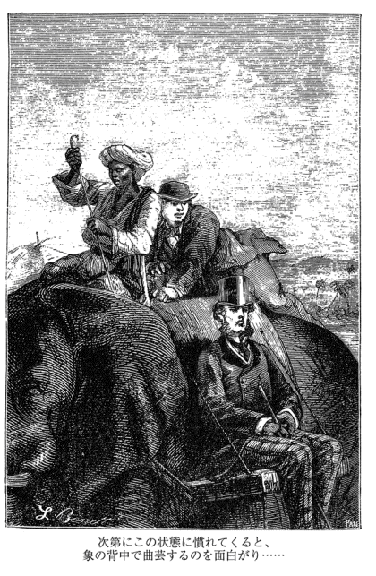
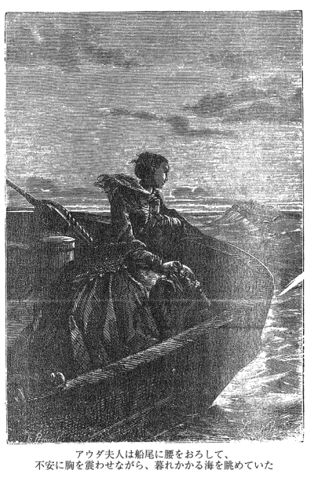

| 八十日間世界一周（上） (光文社古典新訳文庫) | |
| ヴェルヌ | |
| 光文社 (2012) | |
八十日間世界一周（上）
ヴェルヌ
高野優 訳
Title: LE TOUR DU MONDE EN QUATRE-VINGTS JOURS
1873
Author: Jules Verne
目 次
八十日間世界一周（上）
第１章 謎の男
フィリアス・フォッグ氏とパスパルトゥー、主従の誓いを結ぶ
ロンドンのバーリントン・ガーデン、サヴィル＝ロウ七番地にある屋敷といえば、イギリスでも屈指の雄弁家として知られたリチャード・シェリダン卿が一八一四年に亡くなった場所である。それから数十年後の一八七二年のこと、この屋敷にひとりの紳士が住んでいた。ロンドンの有名な社交クラブ――《改革クラブ》のメンバーであるフィリアス・フォッグ氏である。このフォッグ氏、自分では決して目立とうとしているわけではないのに、世間の注目を引いてしまうという不思議なところがあった。
いや、そうは言ってもフォッグ氏が特に変わった振る舞いをするわけではない。外見は穏やかで、ロンドンの上流階級の一員にふさわしい、立派な紳士である。人によっては美男として知られた詩人のバイロンに似ていると言う者もいた。いわば、もみあげを伸ばし、口髭をはやしたバイロン――ただし、バイロンのように足が不自由というわけではなかったが......。おそらくは情熱的な生活を送ることも、早死にすることもないバイロン。何があっても冷静で、千年は長生きしそうなバイロンである。
では、そんな男がどうして世間の注目を引いてしまうのか。それはやはり、フォッグ氏が「謎の男」であるからだ、としか言いようがない。まずはどこの人間かがわからない。たぶんイギリス人であることはまちがいないだろう。だが、ロンドンの人間ではない。また何をしているのかもわからない。おそらく金融関係の仕事をしているわけではないだろう。証券取引所でも銀行でも証券会社のカウンターでも氏の姿を見かけた者はひとりもいないからだ。ロンドンの港やドックにフォッグ氏の持つ船が入ってきたという話も聞かないので、海運業を営んでいるわけでもない。政府の委員会に姿を見せたこともないので、役人でもない。また、弁護士でもない。テンプル法学院やリンカーンズ・イン法学院、グレーズ・イン法学院の出身者名簿にその名はなかったし、大法官裁判所でも女王座裁判所でも、財務裁判所でも聖職者裁判所でも、弁護をしているところを見た者はまったくいないからである。実業家でもなければ、卸売商でもない。貿易商でもない。農園を経営しているわけでもない。また、イギリス王立研究所やロンドン学士院、職人養成学院、ラッセル学会など、研究所や学院、学会のメンバーでもない。西洋文芸学会にも、法律学会にも、女王陛下の直接の庇護のもとにおかれた学芸学会にも名を連ねていない。ロンドンに山ほどある協会のメンバーでもない。それこそグラス・ハーモニカ協会から昆虫協会まで（この協会は害虫の駆除を目的として設立された）、どの協会の名簿を見ても、その名は載っていないのである。
フォッグ氏についてわかっていることは、《改革クラブ》のメンバーであること――ただそれだけである。
だが、そのように謎に満ちた人物が、どうして《改革クラブ》のようなロンドンでも特別な社交クラブに入会できたのか？ それはイギリスでいちばん古い銀行であるベアリングス銀行を経営しているベアリング兄弟の推薦があったからだと言われている。氏はこの銀行に当座預金を持っていて、氏が振りだした小切手はいつでも変わることなく、確実にこの口座から支払われる。そこである種の〝信用〟ができていたのである。
したがって、フォッグ氏は金持ちである。それはまちがいない。だが、どうやって財産を築いたかとなると、これがまた謎であった。これについては、よほどの事情通でも黙って首を横にふるだけなので、どうしても知りたかったら、あとは本人に訊くしかない。ただ、わかっていることは、金持ちだといっても決して浪費をするわけではなく、かといって吝嗇でもないということだ。持つ者の義務として必要な時には進んで慈善を行い、場合によっては匿名で困った人に援助の手を差しのべる。
いや、そういう噂はつとに流れているが、本人が言わないので真偽のほどは確かめようがない。もともとが「おれが、おれが」と前にしゃしゃり出るタイプではないのである。自分のことはほとんど口にしない。それだけにまた謎が深まるという具合だった。毎日の生活もどこで何をしているのか一日の時間割はわかっていたが、それは恐ろしく機械的で、判で押したように決まりきったものだったので、「その裏には何かあるのではないだろうか？」と、かえって興味をそそられた。
それほど几帳面な生活を送っているのであれば、旅行もしたことはないだろうと思われるが、それはどうやらちがうらしい。話をしてみると、世界じゅうあらゆる場所について、氏より詳しい人間はいないからである。地球上のどんな辺鄙な土地についても知らないことはないように見える。たとえば、新聞に「旅行者が行方不明になった」という記事が出て、クラブでそのことが話題になると、氏は控えめに、だが簡潔明瞭に、何が起こったのか、いくつかの可能性を述べる。それは一見、その場の思いつきのように見えるが、あとになって事件の推移が明らかになると、氏の言葉が正しかったことに人々は驚くのである。もちろん、そういった場所に本当に行ったかどうかはわからない。だが、氏は少なくとも頭のなかでは、世界じゅうを旅行しているようであった。
ただ、フォッグ氏が実際に旅行をしていたのか、していないのかは別にして、ひとつだけ言えることは、ここ何年かはロンドンから離れていないということだ。その証拠に、少しばかり氏と親しい人は「《改革クラブ》と自宅を往復する道以外の場所で氏に出会ったことはない」と断言するくらいである。実際、フォッグ氏の唯一の日課は《改革クラブ》に行くことで、氏はそこで新聞を読んだり、トランプのホイストをしたりして過ごしていた。ホイストというのは黙って行うゲームなので、氏の性格にはうってつけであったろう。事実、氏はこのゲームに強く、たいていの場合はかなりの賭け金をせしめていた。といっても、その金は決して氏のポケットに入るわけではない。そっくり慈善用の資金にまわされるのである。これは伝え聞くかぎりの氏の性格や人となりからすれば当然のことだと言えた。フォッグ氏は金のためにホイストをするわけではない。氏にとってホイストは戦いであり、知的な冒険であり、困難に対する挑戦であった。その冒険をクラブの椅子にじっと腰をおろして、静かに行うのである。ホイストをしている時の氏は、顔には出さずとも心からくつろいでいるように見えた。
いっぽう家庭生活はどうかというと、これは完全に謎に包まれていた。妻子はなく、友人や親戚とのつきあいもない（立派な紳士に妻子がいないことはよくあるが、友人との交遊や親戚づきあいがないというのは珍しい）。サヴィル＝ロウの屋敷に召使いとふたりで暮らしているだけなのである。屋敷を訪れた者は誰もなく、ましてや家のなかに入った者はひとりもいなかった。身のまわりの世話には召使いがひとりいるだけで事足りた。というのも、昼食と夕食は毎日《改革クラブ》ですませるので、屋敷には真夜中の十二時きっかりに、眠りに帰るだけだったからである。ただし、その反対に「屋敷に帰らない」ということもなかった。クラブにはメンバーのために居心地のよい寝室が用意されていたが、それを使うことは決してなかった。
というわけで、氏は毎晩、真夜中の十二時きっかりに屋敷に帰る。これは誇張でもなんでもない。前にも書いたように氏の一日の時間割は毎日、判で押したように同じで、時計のように正確なのである。その正確な時間割にもとづいて、一日二十四時間のうちかっきり十一時間半を屋敷で過ごして、睡眠と身支度にあてる。そして、毎日十一時半には《改革クラブ》に向かって家を出るのである。クラブに着いてからも、その行動は変わらない。床が寄木細工の玄関ホールを入ると、青いステンドグラスで飾られた丸天井の周囲をめぐる〝空中回廊〟を歩いていく。その回廊は赤い斑岩でできた二十本のイオニア式の列柱で支えられていたが、そこを毎日同じ足どりで通りぬけると、そのままクラブの食堂に向かうのである。
昼食でも夕食でも、食堂に入る時間は決して変わらない。席も決まっている。ほかのメンバーと同席することはなく、外部の知人をこの食堂に招待することもない。注文する料理もいつも同じである。氏が席につくと、テーブルにはすでにザクセンで織られた素晴らしいクロスが掛かっている。そこにいかめしい礼服を着て、足音がしないようにメルトン底の靴を履いた給仕たちが、特別製の陶器に入れてうやうやしく料理を運んでくる。料理は貯蔵室にある魚介や乳製品など、厳選した素材を使って調理人たちが腕によりをかけて作ったものである。飲み物はシェリー酒やポルト酒、シナモンやアジアンタムで香りをつけたボルドー産の赤ワインなどがクラブ特注のグラスで運ばれてくる。飲み物に入れる氷も特別で、こちらはなんと莫大な費用をかけて、アメリカの湖から運ばれてくるのである。
確かにこのような暮らしを毎日寸分たがわず続けているというのであるから、フォッグ氏の生活は風変わりであると言えないこともない。だが、逆に毎日このような暮らしが続けられるなら、〝風変わり〟というのも悪くないことのように思われてくる。
それはともかく......。こうして一日のうちのほとんどをクラブで過ごすのであるから、サヴィル＝ロウの屋敷のほうはそれほど手がかからなかったと考えられる。屋敷は決して豪華とは言えないが、いつも快適な状態に保たれていた。といっても、フォッグ氏は何事によらず、自分が几帳面なだけではなく召使いにもそれを要求するところがあったので、召使いにとってはいささか厄介なことではあった。
実はこの物語の始まる一八七二年の十月二日も、フォッグ氏は「正確さに欠ける」という理由でジェームズ・フォースターという召使いを首にし、新しい召使いが来るのを待っていたところだった。哀れなフォースターは、髭剃り用の湯はきっかり三十度と決められていたのに二十九度のものを持ってきてしまったのである。新しい召使いは十一時から十一時半までの間に来ることになっていた。
そういうわけだから、その日、フォッグ氏は背筋を伸ばして肘掛け椅子に座り、両足はまるで閲兵を受ける兵士のようにぴったりそろえ、両手はきちんと膝の上に置いて、頭をしっかりとあげて柱時計の針が刻一刻と時を刻んでいくのを見つめていた（この時計は電気仕掛けの複雑な仕組みで、分や時間はもちろん、秒から年月日まで示すことができた）。十一時半になったら、いつものように《改革クラブ》に出かけなくてはならないからである。
と、その時、フォッグ氏のいる居間の扉をノックする音がした。
首になったジェームズ・フォースターが最後の仕事をしにきたのだ。
「旦那さま。新しい召使いがやってまいりました」
すぐに扉の向こうから三十歳くらいの若い男が現われた。
「フランス人で、名前はジョンということだったな」男を見ると、フォッグ氏は尋ねた。「フランス人でもジョンと名乗るのかね？」
「お言葉ですが、ジャンです、旦那さま」男は答えた。「ジャン・パスパルトゥーと言いますんで......。パスパルトゥーってのは渾名ですがね。フランス語で〝合鍵〟って意味ですが、困ったことがあってもなんとかすり抜けてしまうってことから、そんな渾名がついたもんで......。でも、ずるいことはしませんよ。これでもわたしは正直なほうですから......。はい、これまでは、いろんな仕事についてきました。旅回りの劇団で歌手をやったこともあるし、サーカスで軽業師をやったこともあります。馬に曲乗りをしたりしてね。あの空中ブランコの名人レオタールや、ナイアガラの滝を綱渡りしたブロンダンのように空中ブランコや綱の上でいろいろな芸をしたこともあります。それから、この身の軽さを生かそうと体操の先生をしたり......。最後はパリで消防士を務めました。消防署の記録には、いくつも大火事を消すのに貢献したって書かれているくらいですよ。けれども、五年前にフランスを離れてからは、家のなかにいる生活に憧れて、このイギリスで召使いをしているようなわけで......。で、たまたま前のお屋敷でお暇を出されて次の奉公先を探していたところで、旦那さまが人を探していると聞いたもんですから......。なんでも旦那さまはイギリスでいちばん几帳面なうえに、ご旅行に出るのがお好きじゃないということで......。それで、この旦那さまのもとでしたら、落ち着いた暮らしができる、パスパルトゥーという渾名も返上できるのではないかと思いまして、こちらに伺ったようなわけであります」
「パスパルトゥーという名は返上する必要はない」フォッグ氏は言った。「私はその名を気に入ったからね。君については推薦もあったし、いい噂も聞いている。ここで働いてもらうことにしよう。こちらの条件は知っているね？」
「はい、旦那さま」
「よろしい。ところで、今は何時だ？」
「十一時三十三分です」パスパルトゥーはチョッキのポケットから大きな銀の懐中時計を出すと答えた。
「その時計は進んでいる」フォッグ氏は言った。
「申しわけありませんが、そんなはずはありません」パスパルトゥーは言い張った。
「いや、四分、進んでいる。だが、遅れているか進んでいるかはどうでもいい。大切なのは四分のずれがあることだ。そのずれがあることをわかったうえで行動してくれたまえ。ということで、君は十月二日水曜日の午前十一時二十九分からこの屋敷の召使いになったということになる」
そう言うと、フォッグ氏は立ちあがった。左手で帽子をとると、正確な仕草で頭にのせる。それから、何も言わずに出ていった。
パスパルトゥーが耳をすましていると、通りに面した門の扉が閉まるのが聞こえた。フォッグ氏が出ていったのだ。それから、また同じ音がした。今度は前任者のジェームズ・フォースターが出ていったのだ。
サヴィル＝ロウの屋敷に、パスパルトゥーはひとり残された。
第２章 理想の主人
パスパルトゥー、ついに自分にぴったりの奉公先を見つける
「こいつはびっくりしたね」ひとりになると、パスパルトゥーはつぶやいた。「これならマダム・タッソーの館で暮らしている連中だって、おれの新しい旦那さまと同じくらい生きているって感じがするぞ」
マダム・タッソーの館というのはロンドンでも指折りの観光名所で、そこで暮らしている連中というのは「蠟」のことである。ちなみに、この蠟は、「あとは言葉さえ話せれば、人間と変わらない」というほど精巧にできている。このことは読者にもお知らせしておこう。
さて、フィリアス・フォッグ氏の面接を受けたパスパルトゥーは、その間に自分が仕えることになる〝新しい旦那さま〟がどんな人間であるのか、すばやく観察していた。年の頃は四十がらみ、背が高く、おなかのあたりにはかすかに肉がつきはじめているようだが、それが目立つということはまったくない。髪は金髪で、頰ひげもまた金髪だった。顔立ちは美しく整っていて、気品がある。肌はなめらかで、目尻にも深いしわは刻まれていない。色は透きとおるように白く、歯並びがよい。全体として見ると、人相学でいう「静かに行動する」人間の顔だった。御託を並べるよりも実際に行動することのほうを大切にする人間の顔......。いつも冷静で、困難を前にしても瞬きひとつせず、その出来事を見すえることができる、このグレートブリテンおよびアイルランド連合王国でよく見かける典型的なイギリス人の顔......。スイス生まれの女流画家アンゲリカ・カウフマンが百年も前に、ロイヤル・アカデミー風の筆致で描いたイギリス人の顔である。いや、顔つきだけではない。フィリアス・フォッグ氏は態度も冷静で、動作ひとつとっても、つねに正確な動きをする。その動きはルロワやアーンショーの高級時計を思わせた。まさに生きる精密機械である。それは腕一本、足一本動かすのにも表われた。内面が動作にも表われたと言おうか。だが、それも当然である。人間というのは、動物と同じく、感情の状態が手足の動きに表われるものだからである。パスパルトゥーは新しいご主人の態度や動作を見て、すぐにそのことを感じとった。「新しい旦那さまは機械のように正確な方だ」と......。
実際、パスパルトゥーの感じたとおり、フォッグ氏はあの「数学的な正確さを持った人間」のひとりであった。何があっても決してあわてることなく、物事に対処する準備ができている。歩き方ひとつとっても、その動きは完全に計算しつくされている。どこかに行く時にはつねに最短の道のりになるようにして、一歩たりともよけいに歩くことは決してない。ぼんやりと天井を見あげるようなこともなければ、わざとらしい動作をすることもない。感動に打ちふるえることも、動揺に取り乱すこともない。絶対に急ぎ足になることはないが、必ず時間には着いている――そういった人間である。だが、それもおそらく氏がひとりで生きているせいだと聞けば、誰もが納得するだろう。氏は言うなれば社会的なつながりを絶っているのであるが、この社会的なつながりというものは、つねに人を遅刻させるものだからである。そのことを氏はよく知っていて、だからこそつながりを絶っているのである。
いっぽう、そのフォッグ氏の新しい召使いとなったジャン・パスパルトゥーのほうは、正真正銘のパリっ子である。五年前にパリからこのイギリスに来て以来、ロンドンに居場所を定めて、召使いの仕事をしている。だが、今まで「これは！」と思う主人にめぐりあったことはなかった。
パスパルトゥーは古典喜劇に出てくるフロンタンのような召使いではない。モリエールの喜劇『才女気取り』のマスリーユのような召使いでもない。高慢に肩をいからせ、自信たっぷりな目つきで人の粗さがしをする、あの恥知らずな連中とはちがう。いや、断じてちがう。パスパルトゥーは愛すべき容姿をした正直な青年である。その唇はいつもおいしい物を味わい、かわいらしい女性に口づけをしたがっているように、少し突きだしている。優しく、親切で、見るからに友達にしたくなるような――こんな丸顔が友達の肩の上に乗っているのを見たらさぞかしほっとするだろうというような、そんな男である。目は青く、肌はつやつやしている。顔は肉づきがよく、自分の目でもふくらんだ頰が見えるほどだ。肩幅は広く、胴回りも大きい。十代の頃によほど訓練を積んだおかげだろう、筋肉は鍛えられていて、ヘラクレスのような怪力を持っている。髪は茶色で、ところどころ逆毛が立っている。古代ローマの彫刻家は女神ミネルヴァの像を彫るのに、十八のやり方でその髪型を整えたというが、この男の場合はひとつしかない。目の粗いくしで三回すいて、それで終わりである。
ということで、このあけっぴろげで、いかにも陽気そうな青年がはたしてフィリアス・フォッグ氏とうまくやっていけるのか？ それは断言するのが難しい。パスパルトゥーは、はたしてフォッグ氏が要求するような何事にも正確な召使いになれるのだろうか？ 正確であろうとするあまり、身も心もくたびれきってしまうのではないだろうか？
だが、ここで読者はパスパルトゥーがフランスでさまざまな職業を経験したあとに、このイギリスに休息を求めてやってきたことを思い出す必要がある。パスパルトゥーはフランスでの放浪生活に飽きると、イギリスの人々はメソジスト派の教えのもとに厳格な生活を送っていると伝え聞き、またことわざにもなっているイギリス紳士の平静ぶりに憧れて、このイギリスで落ち着いた生活をしようと思ってやってきたのである。
しかしながら、これまでのところ、運命は思いどおりにはならなかった。パスパルトゥーはひとところにじっくりと腰を落ち着けるどころか、十回も奉公先を替えていた。どの屋敷の主人も気まぐれで移り気で、夜な夜な冒険に出かけたり、そうでなければ海外に旅行するのが好きなのである。直前の主人であった若きロングスフェリー卿などは、国会議員であるのに毎晩ヘイマーケット街のオイスターバーで飲みつぶれ、うっかりすると警官の背中におぶさって帰ってくる始末だった。そこでパスパルトゥーは少しでも主人を尊敬したいという気持ちから、「そんなことでは困ります」と思いきって苦言を呈してみたのだが、その言葉が悪く受け取られて「暇を出す」と言われ、「それならこっちが願いさげだ」と屋敷を出たのである。
だが、そうなったら、すぐに新しい奉公先を見つけなければならない。パスパルトゥーは、まだ前の屋敷にいた時から、フィリアス・フォッグという紳士が召使いを探していると聞いていたので、さっそくこの紳士について情報を求めてみた。すると、毎日規則正しい生活を送り、外泊をすることはもちろん、旅行に出かけることもしない。それこそ、一日たりともロンドンから出ない人物だということがわかった。もしそうなら、願ったり叶ったりである。そこで、先程も述べたような状況でフォッグ氏のもとに赴いたのである。
さて、そういうわけで、フォッグ氏が部屋を出ていくと、パスパルトゥーはサヴィル＝ロウの屋敷にひとり残されたのだが、部屋の時計が十一時半の鐘を鳴らすと同時に、さっそく屋敷のなかを調べることにした。そして、地下室から天井裏まですべてを見届けると、その様子にすっかり満足した。屋敷は清教徒の家のようにきちんと整頓されて、主人からどんな命令を受けても、すぐにその命令を果たせるようになっていたからである。しかも、清潔だ。〈この家は塵ひとつなくて、まるできれいに掃除されたカタツムリの殻のようだ〉とパスパルトゥーは思った。といっても、ガスの照明が完備されたカタツムリの殻である。この屋敷では照明や暖房はすべて炭化水素ガスでまかなわれていたのだ。
こうして屋敷を調べる間に、パスパルトゥーは三階にある自分の部屋も容易に見つけることができた。その部屋はいつでも召使いに用事を言いつけられるように、伝声管や電気仕掛けのベルを使って、中二階や二階にある各部屋とつながっていた。暖炉の上にはフォッグ氏の部屋にあったものとよく似た電気仕掛けの時計がかかっていて、このふたつの時計は秒針まで正確に同じ時刻を刻んでいた。パスパルトゥーはこの部屋が気に入った。
「よかった。まさに望みどおりだ」思わず声に出してつぶやく。
その瞬間、時計の上に貼り紙がしてあるのに気づいた。それは毎日の予定を示した時間割だった。そこにはフォッグ氏が朝八時に起床してから十一時半に家を出て《改革クラブ》に行くまでにすることと、召使いがしなければならない仕事が詳しく記されていた。たとえば、八時二十三分きっかりにトーストと紅茶を用意し、九時三十七分には髭剃り用のお湯を持っていく。そして、その三分後の九時四十分には髪を整える手伝いをする。もちろん、フォッグ氏が十一時半に家を出てから夜中の十二時に帰ってくるまで、召使いがしなければならないこともすべて書かれている。いや、それにしてもなんと規則正しい生活を送っていることだろう！ パスパルトゥーはすっかり嬉しくなって、貼り紙に書かれている時間割を頭のなかに刻みこんだ。それにまた、なんと几帳面なことだろう！
〈そういえば、旦那さまのお衣装部屋もきちんと整理されていたぞ〉パスパルトゥーは思った。そこには何百着という服がそろえられていたのだが、燕尾服の一枚いちまい、ズボンの一本いっぽん、チョッキの一枚いちまいに番号がつけられ、備えつけのノートにはそれぞれの季節ごとに何月何日にどの番号の服を着るべきなのか、克明に記されていたのである。靴も同じだった。
パスパルトゥーは知らなかったが、これはこのサヴィル＝ロウの屋敷にシェリダン卿が住んでいた頃とは大幅な変わりようである。シェリダン卿は有能ではあったが気ままでもあったので、屋敷は〝無秩序の殿堂〟と言ってもよかった。それがフォッグ氏の代になってからは、きちんと整頓されて、暮らしやすくなったのである。フォッグ氏が必要としないため、屋敷からは図書室もなくなっていた。《改革クラブ》に行けばひとつは文学作品専用、もうひとつは政治や法律の書物専用という具合にふたつある図書室を自由に利用できたので、屋敷には備えつけなくてもよかったのである。そのほかで以前と変わったことと言えば、フォッグ氏の部屋に中型の大きさの、火事があっても泥棒が来ても大丈夫そうな、しっかりした金庫があること。それから、屋敷のなかにはどこを見まわしても狩猟や戦争に使う武具がないことだろうか。このことは氏が争いや殺生を好まないことを意味していた。
というわけで、屋敷をすっかり検分しおわると、パスパルトゥーは両手をこすりあわせ、その丸顔に満面の笑みを浮かべた。そして、また嬉しそうに繰り返した。
「よかった。まさに望みどおりだ。これならきっとうまくやっていくことができる。今度の旦那さまとは......。旦那さまは決して旅行をなさらず、毎日規則正しい生活をなさる。まるで機械のようなお方だ。おれは機械に仕えるのが望みだったんだ！」
第３章 世界一周の旅
ちょっとしたおしゃべりがフォッグ氏の運命を変えたということ
さて、午前十一時半きっかりにサヴィル＝ロウの屋敷を出ると、フィリアス・フォッグ氏は右足を五百七十五回、左足の前に出し、左足を五百七十六回、右足の前に出したところでペルメル街にある《改革クラブ》に着いた。クラブの建物は、建築費にしたらおそらく三百万ポンドはくだるまいという立派なものである。
その建物に入ると、氏はいつものように〝空中回廊〟をひとめぐりして、ただちに食堂に向かった。食堂は美しい庭に面していて、いかにも秋らしく木々の葉が黄金に色づいているのが九つの窓から見える。いつもの席に腰をおろすと、もちろんテーブルにはクロスが掛かり、ナイフやフォーク、ナプキンなどが並べられていた。昼食のメニューはいつもと同じである。まずは前菜、それから茹でて〈レディングソース〉で味をつけた魚料理、あまり火を通さずに焼いて〈マッシュルームソース〉をかけた真っ赤なローストビーフ、ルバーブの茎とグーズベリーの実を詰めたケーキ、最後にチェシャーチーズをひと切れ。こういった料理を《改革クラブ》がインドで特別に摘ませた素晴らしい紅茶を飲みながら味わうのである。
この食事を堪能すると、フォッグ氏は十二時四十七分ぴったりに椅子から立ちあがって、いくつもの絵画で飾られた広大なサロンに行った。絵はどれも見事に額装されて、四つの壁に配置されている。そのサロンの豪華な椅子に腰をおろすと、さっそく召使いが真新しい《タイムズ》紙を持ってきた。まだ、ページは切られていない。フォッグ氏はペーパーナイフを使って、その新聞を広げていった。その正確な手つきを見れば、フォッグ氏が長年、この作業をやり慣れているのは明らかであった。それから三時四十五分まで《タイムズ》紙に目を通すと、これもいつものとおり、そのあと夕食までの間、《スタンダード》紙に読みふける。夕食は昼食とまったく同じ手順で行われた。メニューもほとんど変わらない。ちがうのは料理にかけるソースが〈イギリス王室風ソース〉になったことくらいである。
というわけで、その夕食も終えると、フォッグ氏は五時四十分にまた広大なサロンに戻ってきた。そこで今度は《モーニング・クロニクル》紙を読みはじめる。
すると、その三十分後には《改革クラブ》の何人かのメンバーがサロンに入ってきて、石炭が燃える暖炉のまわりに集まりはじめた。フォッグ氏が毎晩行うトランプゲームのメンバーで、フォッグ氏と同じくホイストには目がないといった面々である。まずは技師のアンドリュー・スチュアート氏、銀行に勤めるジョン・サリバン氏とサミュエル・フォレンティン氏、ビール業者のトーマス・フラナガン氏、イングランド銀行副総裁のウォルター・ラルフ氏。いずれも立派な紳士で、ロンドンじゅうの名士たちが集まるこの《改革クラブ》のなかでもとりわけ裕福で、また財界や実業界に対しても大きな力を持った人々であった。
「ところで、ミスター・ラルフ」暖炉の近くの椅子に腰をおろすと、ビール業者のトーマス・フラナガン氏が尋ねた。「例のあの盗難事件はどうなったかね？」
「ぼくが思うに」ラルフ氏の代わりに、技師のアンドリュー・スチュアート氏が答えた。「結局、泥棒は見つからず、イングランド銀行は大損をすることになるんじゃないかな？」
「いや、私は事件が解決すると思っておるよ」ウォルター・ラルフ氏が言った。「警察の話によれば、腕ききの刑事たちがイギリスはもちろん、ヨーロッパじゅうに配備されたとのことだからね。主要な港には警戒体制がしかれて、船の出入りが厳重に監視されているということだ。銀行から金を持ちだした人間が警察の手から逃れられることはあるまい」
「じゃあ、泥棒の人相はわかっているのかい？」アンドリュー・スチュアート氏が尋ねた。
「ああ、犯人の特徴はもう発表されている」ウォルター・ラルフ氏が答えた。「だが、その人相書きを読めばわかるように、泥棒ではない」
「なんだって？ 銀行から五万五千ポンド（百三十七万五千フラン）の紙幣を持ち去ったというのに......。それが泥棒ではないとは！」
「そうだ。泥棒ではない」
「つまり、職業的な泥棒ではなく、銀行に用事で来た人間が盗んでいったという意味か？」銀行員のジョン・サリバン氏が尋ねた。と、その時、
「《モーニング・クロニクル》紙によると、金を持ち去ったのは〝紳士〟だということだ」
少し離れたところから声がした。フォッグ氏である。机の上に積み重ねた本や新聞から顔だけが見える。フォッグ氏が挨拶をしたので、皆は挨拶を返した。
さて、ここで読者には、今この場で話題になっている盗難事件について少し説明しておく必要があるだろう。今から三日前の九月二十九日にイングランド銀行の出納主任のカウンターから、何者かによって現金五万五千ポンドが持ち去られた。そこでいったい何があったのかとイギリスじゅうの新聞が大騒ぎしていたのである。
だが、どうしてこのような大金がいとも簡単に持ち去られてしまったのだろうか？ そう疑問を持つ者に、イングランド銀行の副総裁であるウォルター・ラルフ氏は、こう言葉少なめに答えていた。盗難があった時、ちょうど三シリング六ペンスの入金があったので、出納主任はその入金を帳簿に記載していた。誰でも同時にあらゆるところに目を配ることはできないと......。
しかし、盗難が容易に行えた理由としては、それだけではなく、このイングランド銀行という組織が「お客さまを信用する」ことを第一に心がけているということを指摘しておく必要があるだろう。退役軍人などによる守衛も置かなければ、客と係の者の間を鉄格子で仕切るわけでもない。金塊でも硬貨でも紙幣でも、カウンターの上にあるものは、誰でも銀行に入ってきた者が持ちだそうと思えば、自由に持ちだせるようになっているのだ。逆に言えば、誰かが持ち去ってしまうとは露ほども考えていない。それほど「お客さまを信用する」ことを大切にしているのである。
これについては、ひとつ驚くべきエピソードがある。このエピソードはイギリス人の習慣を日頃からよく観察している人から聞いたものだが、ある時、その人がイングランド銀行に行ったところ、出納主任のカウンターの上におよそ七、八ポンドの重さはあろうかという金塊が置いてあった。興味を引かれて、その人は思わずその金塊を手に取り、感触を確かめたあと、たまたま後ろに並んでいた人がそれを見ていたので、金塊を渡した。すると、その人がまた後ろの人に渡すという具合で、金塊は次から次へとその窓口に並んでいた人々の手に渡っていき、はては暗い廊下の隅まで行って、元の場所に戻ってきたのはそれから三十分後のことだったという。しかも、この間、出納主任は目の前の仕事に没頭していて、ただの一度も顔をあげなかったというのである。
だが、三日前の九月二十九日の場合は、事はそのようには運ばなかった。五万五千ポンドの札束は戻ってこず、銀行の〈貴賓室〉にある見事な柱時計が午後五時の終業の鐘を鳴らした時、出納主任はその日の損益計算書に五万五千ポンドの損失を計上しなければならなかったのである。
盗難の知らせはただちに警察にもたらされた。警察はさっそく刑事や制服の警官など有能な警察官を厳選して、リヴァプールやグラスゴー、ル・アーヴル、ブリンディジ、ニューヨークなど、世界の主要な港に配備した。警察官たちはそこで捜査の進展を待ちながら、新しい指示があるまでは、港に入ってくる人々と港から出ていく人々を見張るのである。銀行の申し出によって、犯人を捕まえて盗まれた金を取り戻した者には、賞金二千ポンド（五万フラン）と返ってきた金額の五パーセントが報奨金として支払われることが約束された。
さて、フォッグ氏の愛読する《モーニング・クロニクル》紙の報じるところによると、今回の盗難は窃盗集団によるものではないだろうということであった。イギリスにはいくつかの窃盗集団があるが、そのどれでもない。目撃者の話によると、事件の当日、盗難の舞台となった銀行の支払窓口の近くにはきちんとした身なりをした立派な紳士がいて、そのあたりを行ったり来たりしていたというのだが、どうやらその紳士が紙幣を持ち去ったのではないかというのである。実際、警察は捜査が始まるとすぐにその紳士の人相書きをつくっていて、その人相書きはイギリスはもちろん、大陸にいる警察官たちにまで配られていた。だからこそ、ウォルター・ラルフ氏のように思慮にあふれる人々は、銀行から金を持ちだした人間が警察の手から逃れられることはあるまいと信じていたのである。
いっぽう、銀行にも警察にも関係のない一般の人々は、もっと無責任に「警察が犯人を捕まえられるかどうか」夢中になって議論を交わし、イギリスはたちまちその話題でもちきりになった。したがって、いずれも上流の紳士たちであるとはいえ、《改革クラブ》のメンバーがこの事件に興味を示したのは当然のことであった。ましてや、メンバーのなかに当のイングランド銀行の副総裁がいるとなればなおさらである。
その副総裁であるウォルター・ラルフ氏は、先程からも述べているように、事件が解決して持ち去られた金が戻ってくることを疑っていなかった。報奨金を目当てに、現場の警察官たちが死に物ぐるいの捜査をするだろうと考えていたのである。だが、そのホイスト仲間であるアンドリュー・スチュアート氏はそうは思っていなかった。そこで、メンバーたちの議論は、暖炉の前からホイストのテーブルに場所を移して、スチュアート氏の前にビール業者のトーマス・フラナガン氏が座り、フォッグ氏の前に銀行員のサミュエル・フォレンティン氏が腰をおろしても、あいかわらず熱心に行われることになった。といっても、ホイストをする時には、勝負と勝負の間、話をするのは禁じられているので、議論は何度か中断し、そのあとでまたいっそう熱を帯びて続けられた。ホイストとは「静かに！」という意味なのである。
「私はやはり泥棒のほうに分があるように思えるね」勝負がひとつ終わると、スチュアート氏が言った。「金を持ち去った時だって気づかれなかったくらいなんだからね」
「では、訊くが、その男はいったいどこに逃亡できるというんだ？」そばでゲームを見ていたラルフ氏が言う。「そんな国はひとつもないというのに！」
「ひとつもだって？」
「そうだよ。どこに行くというんだ？」
「さあ、それはわからないが......」スチュアート氏は口ごもった。「でも、まあ世界は広いからな」
「広かった、だ。昔はね」フォッグ氏が口をはさんだ。それから、フラナガン氏にトランプを差しだしながら言う。「今度は君がカットする番だ」
すぐにカードが配られて、議論はまた中断した。だが、勝負が終わるのを待ちきれず、スチュアート氏がまた口を開いた。
「昔は、とはどういうことだ？ 地球が小さくなったとでも言うのかい？」
「ある意味ではね」フォッグ氏に代わって、ラルフ氏が答えた。「私はミスター・フォッグの言うとおりだと思うね。地球は小さくなっている。なにしろ百年前に比べたら、十倍もの速さで移動できるようになったのだから......。だから、金を持ち去った〝紳士〟がどこに逃げようと、捜査の手もそれだけ速く及ぶということだ」
「でも、それだったら、犯人だって逃げやすいということじゃないか」スチュアート氏が言った。「しかし、それにしても、地球が小さくなったというのは......」
と、その時、
「ミスター・スチュアート、君が手札を出す番だ」フォッグ氏が指摘した。
皆はゲームに戻り、こうしてまたひと勝負が終わった。だが、スチュアート氏はまだ先程のラルフ氏の言葉にこだわっているらしく、次のカードが配られるまでの間に話を再開した。
「それにしても、ミスター・ラルフ、地球が小さくなったというのは、やはり言いすぎではないかね？ いくら今では三カ月で世界を一周することができるようになったからと言って......」
「いや、八十日間だ」フォッグ氏が言った。「それだけで十分だ」
そこで話題は盗難事件のことから、世界一周の話に変わった。フォッグ氏の言葉に、もうひとりの銀行員であるジョン・サリバン氏がつけ加えた。
「確かに八十日間だね。《大インド半島鉄道》のロタールとアラハバードの間が開通してからは......。ほら、ここに日数を計算した《モーニング・クロニクル》紙の記事がある」
そう言うと、サリバン氏はその記事をみんなに差しだした。
・ロンドンからモンスニ峠とブリンディジを経由して
エジプトのスエズまで鉄道と定期船で
.....................７日
・スエズからインドのボンベイ（ムンバイ）まで定期船で
.....................13日
・ボンベイからカルカッタまで鉄道で
.....................３日
・カルカッタから中国の香港まで定期船で
.....................13日
・香港から日本の横浜まで定期船で
.....................６日
・横浜からサンフランシスコまで定期船で
.....................22日
・サンフランシスコからニューヨークまで鉄道で
.....................７日
・ニューヨークからロンドンまで定期船と鉄道で
.....................９日
合計.....................80日
「なるほど、八十日間だ」次の勝負はもう始まっていたが、スチュアート氏が叫んだ。興奮のあまり、必要のないところで切り札を使ってしまったことにも気がつかない。
「だが、それは嵐もなく、向かい風もなく、遭難も脱線もない場合の話だろう？」
「いや、それも含まれている」勝負を続けながら、フォッグ氏が言った。この時にはもうホイストの「静かに！」というルールは誰も守っていなかったからだ。
「ヒンドゥー教徒やアメリカのインディアンたちが列車を占拠してしまってもかい？」スチュアート氏が尋ねた。「連中は列車を止めて、客車を占拠し、身代金を払わなければ、乗客たちの頭の皮をはぐって言うぜ」
「それも含めてだ」フォッグ氏が答えた。それから、手札をさらして言った。「切り札のいちばん強いものが二枚。だから、最後の二回は私たちのチームの勝ちだ」
すると、次にカードを配る番になっていたスチュアート氏がカードを集めながら言った。
「ミスター・フォッグ、理屈の上では確かにそうかもしれない。しかし、実際にするとしたら......」
「実際にしても同じことだ、ミスター・スチュアート」フォッグ氏が答えた。
「では、実際にできるところを見てみたいものだね」
「それは君しだいだ。よかったら、一緒にやってみよう」
「ぼくはごめんだね」そう大声で言いながら、スチュアート氏は首を横にふった。「その代わり、賭けをしようじゃないか。ぼくはできないほうに四千ポンド（十万フラン）賭けるね。八十日間で世界一周だなんて、そんなことは不可能だ！」
「いや、可能だ」フォッグ氏は答えた。
「じゃあ、やってみてくれ」
「八十日間で世界を一周すればいいんだね？」
「そのとおりだ」
「やってみよう」
「いつ？」
「今すぐだ」
「正気の沙汰とは思えない」スチュアート氏が怒ったように言った。フォッグ氏がまったく意見を変えないので苛々してきたのだ。「だが、そう思うんならしかたあるまい。それより、ゲームを続けよう」
と、その瞬間、
「続けるなら、カードは配りなおしたほうがいい。このカードはまちがえて配られているから......」落ち着いた声でフォッグ氏が指摘した。
スチュアート氏は一瞬、むっとした顔をして、片手でカードを集めていったが、突然、その手をぶるぶる震わせると、カードをテーブルにたたきつけて叫んだ。
「わかったよ、ミスター・フォッグ。それじゃあ、やっぱり賭けようじゃないか。ぼくはそんなことができないほうに四千ポンド賭けるぞ」
「まあまあ、スチュアート君、冷静に！」思わぬ事の成り行きにフォレンティン氏が割って入った。「これは別に真剣な話ではないのだから......」
だが、スチュアート氏は一歩もあとに引かなかった。
「賭けると言ったら、ぼくは賭ける。これは真剣な話だ」
すると、フォッグ氏が静かに口を開いた。みんなを見まわしながら言う。
「それではこうしないかね？ 私はベアリングス銀行に二万ポンド（二十一ポンド）預金を持っている。ここにいる君たち五人と四千ポンドずつ個別に賭けをするとして、私はその二万ポンドを賭けよう」
「二万ポンドだって！」サリバン氏が叫んだ。「旅に出れば予想もできない遅れがあるものなのに、君は二万ポンドもの大金を賭けようと言うのかね？」
「予想のできない遅れなどない」フォッグ氏は簡潔にそう答えた。
「しかし、ミスター・フォッグ。新聞が計算した八十日という日程は、最短のものですぞ！」
「最短でもきちんと使えば問題ない」
「しかし、そのためには鉄道から船に、船から鉄道にと、まさに数学的な正確さで、飛び乗っていかなければならない」
「私はまさに数学的な正確さで飛び乗っていこう」
「冗談ではなく？」
「紳士というのは冗談など言わないものだ。ことに賭けのように真剣なことが行われる場合は......」そう言うと、フォッグ氏はもう一度、みんなの顔を見まわした。「君たちさえよければ、私は八十日間で地球を一周することに二万ポンド賭けよう。千九百二十時間、あるいは十一万五千二百分で......。どうだね？ この賭けに応じるかね？」
「応じよう」フォッグ氏の言葉にスチュアート氏をはじめ、フォレンティン氏、サリバン氏、フラナガン氏、そしてラルフ氏が次々と答えた。
「では、ドーヴァー行きの列車が八時四十五分に出ることになっているので、私は今夜、それに乗ろう」フォッグ氏が言った。
「今夜すぐに？」スチュアート氏が尋ねた。
「今夜すぐにだ。ということは......」そう口にすると、フォッグ氏はポケットからカレンダーを取りだして確かめた。「今日は十月二日の水曜日だから、私は《改革クラブ》のこのサロンに十二月二十一日の土曜日の午後八時四十五分に戻ってくることになる。それができない場合は、ベアリングス銀行にある私の二万ポンドの預金は、法律上正当に君たちのものになる。さあ、これが二万ポンドの小切手だ」
そこでフォッグ氏をはじめとする六人は、すぐにその場で賭けの誓約書をかわし、それぞれがサインした。その間も、フォッグ氏の様子に変化は見られなかった。あいかわらず冷静で、落ち着きはらった顔をしている。この賭けをフォッグ氏が二万ポンドの金のために始めたとは考えられなかった。二万ポンドと言えば、氏の財産のちょうど半分であるが、「世界を一周する」というきわめて困難な旅をするつもりであれば、残りの二万ポンドを旅費として使うことになるのは予想がついたからである。つまり、氏は賭けに勝っても財産は増えず、賭けに負けたら一文なしになってしまうのだ。いっぽうフォッグ氏との賭けに応じた五人の面々はなんとなく居心地の悪そうな顔をしていた。自分が出さなければならない賭け金のことを心配していたからではない。この条件で賭けをすることに良心のとがめを感じていたからである。
その時、サロンの時計が七時の鐘を鳴らしたので、五人は「ホイストはここで終わりにしてもかまわないから、早く屋敷に戻って準備をしたまえ」とフォッグ氏に促した。
すると、
「準備はいつでもできている」とフォッグ氏は顔色ひとつ変えずに答えた。それから、カードをみんなに配ると、自分のところに来た最後の一枚をひっくり返して、みんなに見せた。
「切り札はダイヤだ。ミスター・スチュアート、君からだ。始めてくれ」
第４章 ロンドン発八時四十五分
フォッグ氏の突然の帰宅に、パスパルトゥー、身の不運を嘆く
それから二十五分後、ホイストで二十ギニー（二十一ポンド）の賭け金をせしめると、フォッグ氏はメンバーの紳士たちと別れ、《改革クラブ》をあとにした。そして、さらに二十五分後の七時五十分には屋敷に戻っていた。
これを見てびっくりしたのはパスパルトゥーである。パスパルトゥーは自分の部屋にあった貼り紙を見て、フォッグ氏の時間割をしっかり頭に刻みこんでいた。したがって、主人がこんな時間に突然帰ってくるとは思っていなかったのである。これは〝正確さに対する犯罪〟だ。パスパルトゥーは思った。時間割によれば、主人は午前零時ぴったりに戻ってくることになっていたのだ。
フォッグ氏はまず二階の自室にのぼっていったが、伝声管を通じて、パスパルトゥーを呼んだ。
「パスパルトゥー」
だが、パスパルトゥーは返事をしなかった。本来なら、主人は今、この屋敷にはいないはずである。だから、自分の名前が口にされたとしても、自分が呼ばれているわけではない。そう思うことにしたのだ。
「パスパルトゥー」一回目と変わらぬ調子で、フォッグ氏が繰り返した。
そこで、パスパルトゥーはしかたなく部屋にあがっていった。
「君を呼んだのはこれが二回目になる」フォッグ氏が言った。
「でも、まだ午前零時ではありませんでしたので......」懐中時計を見せながら、パスパルトゥーは答えた。
「わかっている。だから、君を非難しているわけではない」フォッグ氏が続けた。「十分後に家を出てドーヴァー行きの列車に乗る。それから、海を渡ってカレーに行く」
それを聞くと、パスパルトゥーはほんの少し眉をひそめた。自分が聞きまちがったのだと思ったのだ。だが、もう一度、主人の言葉を頭のなかで繰り返すと、
「それでは、お出かけになりますんで？」と尋ねた。
「そのとおりだ。私たちはこれから世界一周の旅に出るのだ」
その答えに、パスパルトゥーは瞼と睫毛がひっくり返るかと思われるほど、目を見開いた。身体からはすっかり力が抜けて、腕がだらんとさがった。もう何を言っていいかもわからない。びっくりを通りこして、呆然としてしまったのだ。
「世界一周とは......」パスパルトゥーはつぶやいた。
「予定は八十日間だ」フォッグ氏が言った。「だから、一刻も無駄にするわけにはいかない」
「でも、トランクはどうなさるんで？ わたしのほうにも準備というものが......」自分でも気がつかないうちに、頭を左右にふりながら、パスパルトゥーは答えた。
「トランクはいらない。小さな手さげ鞄ひとつで十分だ。そのなかにはウールのシャツを二枚と靴下を三足入れてくれればいい。君も同じだ。ほかに必要なものは途中で調達しよう。あとはマッキントッシュの防水コートと旅行用の毛布を出しておいてくれたまえ。それから、履きやすくて丈夫な靴を......。もっとも私たちはほとんど歩かないだろうが......。では、お願いする」
その言葉に、パスパルトゥーは返事をすることもできなかった。そこで、フォッグ氏の部屋を出ると、階段をのぼって自分の部屋にあがった。だが、そこで椅子につまずいてころんだので、思わず母語であるフランス語で罵った。
「ちくしょう。とんでもないことになったぞ！ おれはここで静かに暮らしたいっていうのに......」
そして出発の準備をする間も、手は機械的に動かして、頭のなかでは考えつづけた。八十日間で世界一周だって？ 旦那さまは頭がおかしくなったのだろうか？ いや、そんなことはない。だとしたら、これは冗談か？ ドーヴァーに行くというだけならわかる。カレーだって、まだしもだ。しかし、世界一周とは......。だが、待てよ。カレーに行くということは五年ぶりに祖国の地を踏めるということだ。もしかしたら、そのあとはパリに行くかもしれない。よし、いいぞ。ひさしぶりにパリの空気を吸うのは悪くない。パリまで行ったら、旦那さまはたぶんそこで旅行をおやめになるだろう。そうに決まっている。普通に歩く時でさえ、歩数を倹約なさるというお方なんだから......。とはいえ、決して旅行をなさらないはずの、あの旦那さまがお出かけになるとは！ やっぱり、どう考えても信じられない......。
やがて、部屋の時計が八時を打った時には、パスパルトゥーは小さな手さげ鞄にフォッグ氏と自分の衣類をすべて詰めおわっていた。それから、まだ混乱する頭で部屋を出ると、注意ぶかく鍵を閉め、フォッグ氏の部屋に向かった。
扉をあけると、フォッグ氏のほうも準備はできていた。腋には『ブラッドショウの大陸鉄道時刻表及び総合案内』をはさんでいる。鉄道に関するあらゆる情報が記されている、今度の旅には欠かせない本だ。パスパルトゥーから手さげ鞄を受け取ると、フォッグ氏は鞄を開き、ポンド紙幣の札束を入れた。この紙幣であれば、世界じゅうどこに行っても通用するはずだ。
「忘れ物はないか？」鞄を閉めると、パスパルトゥーに言う。
「はい、旦那さま」
「防水コートと毛布は？」
「ここにございます」
「では、この鞄を持ちたまえ」そう言って、フォッグ氏は手さげ鞄をパスパルトゥーに差しだした。「だが、気をつけてくれ。このなかには二万ポンドの金が入っているのだから......」
それを聞くと、パスパルトゥーは危うく鞄を取りおとしそうになった。もちろん、その金額の大きさにびっくりしたせいであるが、その姿を見ていると、実はこの鞄には紙幣ではなく金塊で二万ポンド入っているのではないか、そのせいで思ったより重く感じたのではないか、といったふうにも思えた。
こうしてふたりは階下におりると、屋敷を出た。通りに面した門は二重に鍵がかけられた。
馬車の停車場は通りの端にあった。そこでふたりは二輪馬車に乗り、チャリング・クロス駅に向かった。ドーヴァーに向かう南東線はここから出ているのだ。
馬車は勢いよくロンドンの街を駆けぬけていき、ふたりは八時二十分には駅に着いていた。パスパルトゥーが先におりて、フォッグ氏があとに続く。馬車からおりると、フォッグ氏は御者に代金を支払った。
と、その時、小さな子供を連れた貧しい女がフォッグ氏に手を差しだした。女は羽飾りがたれさがったみすぼらしい帽子をかぶり、ぼろぼろに破れた薄汚れたショールを肩にかけていた。かわいそうに子供は裸足で、ぬかるみのなかに立っている。
「旦那さま、どうかお恵みを」
フォッグ氏はポケットから先程ホイストの勝負で勝った二十ギニーを取りだすと、女に渡した。
「さあ、これを......」普段と変わらぬ調子で言う。「ここであなたにお会いできたことを嬉しく思います」
それから、駅舎に向かって歩きはじめた。
この光景を見ると、パスパルトゥーは思わず目頭が熱くなった。〈機械のように正確だというだけではない。人間らしい気持ちもお持ちなんだ〉心のなかでつぶやく。
やがて、駅の巨大な待合室に入ると、フォッグ氏はパリまでの一等切符を二枚、パスパルトゥーに買ってくるように命じた。パスパルトゥーは温かい気持ちのまま、窓口に向かった。
さて、パスパルトゥーの姿が見えなくなると、フォッグ氏はふと後ろをふり返った。と、そこにウォルター・ラルフ氏をはじめとする《改革クラブ》の五人のメンバーがいることに気づいた。
「皆さん、私はこれから出発する」フォッグ氏は言った。「訪れた国の領事館でパスポートに査証のスタンプを押してもらうので、私が本当に旅をしたことは、それを見ればわかるはずだ」
だが、それを聞くと、
「いや、その必要はありませんぞ」ラルフ氏が答えた。「私たちは紳士としてのあなたの振る舞いを信用していますからな」
「だが、やはり証拠はあったほうがいい」フォッグ氏は言った。
すると、そこでアンドリュー・スチュアート氏が口をはさんだ。
「帰りの日を忘れてはいないだろうね？」
「八十日後の一八七二年十二月二十一日の土曜日だ。時刻は午後八時四十五分」フォッグ氏は答えた。「では、皆さん、ごきげんよう」
やがて、パスパルトゥーが戻ってきたので、ふたりは列車のコンパートメントに落ち着いた。時刻は八時四十分。列車の内外はそろそろあわただしくなってきている。
そして八時四十五分、汽笛とともに列車はゆっくりと動きはじめた。
夜は暗く、外は細かい雨が降っていた。背筋を伸ばして座席の後ろにぴったりと背中をつけると、フォッグ氏は何も話さなかった。パスパルトゥーはまだ頭が混乱していたが、札束の入った鞄だけはしっかり抱えて身体から離さなかった。こちらも口をきかない。
だが、列車がまだシドナムを通過する前に、はっと気づいて、絶望の叫び声をあげた。
「どうしたんだ？」フォッグ氏が尋ねた。
「実は......その......。出がけにあんまり急いでいたものですから......うっかりして......忘れてしまったんです」
「何をだね？」
「私の部屋のガス灯を消してくるのを、です」パスパルトゥーは答えた。
すると、フォッグ氏は機械のように冷たい声で答えた。
「わかった。それでは、そのガス代は君が支払いたまえ」
第５章 株価と賭け率
ロンドンの証券取引所に新しい銘柄の株が現われる
さて、旅に出発したフォッグ氏本人は知らないことであったが、氏が八十日間で世界を一周する旅に出かけたという話が伝わると、イギリスは国をあげての大騒ぎとなった。知らせはまず大きな驚きとともに《改革クラブ》のなかに広まり、新聞記者たちに伝えられた。そこから民衆の知るところとなり、ロンドンはもちろん、イギリスじゅうに衝撃を与えたのである。
はたして、フォッグ氏は八十日間で世界を一周できるのか？ 人々はたちまちこの話題に夢中になり、それぞれが自分なりに細かく日程を計算しては、侃々諤々の議論を交わした。その盛りあがり方は、あの有名な「アラバマ号事件（１）」の時のことを思い出させた。ある人々は、フォッグ氏は成功すると主張した。別の人々は、失敗すると断言した。そして、時がたつにつれて、失敗すると言う人々のほうが大勢を占めるようになった。八十日間で世界が一周できるというのは、「すべてが計算どおりに運んだら」という机上の空論であって、できると思うほうがどうかしているというのである。
そういうわけで、《タイムズ》紙や《イヴニング・スター》紙、《モーニング・クロニクル》紙など、有名紙をはじめとする二十以上の新聞はこぞってフォッグ氏が失敗すると宣言した。ほんのわずかでもフォッグ氏の成功の可能性を示したのは、《デイリー・テレグラフ》紙だけである。そのほかの新聞は、フォッグ氏が〝頭のおかしな偏屈者〟であるとしたうえで、そういった明らかに精神状態に問題のある男が言いだした賭けを受けるなんて、受けるほうがいけないと《改革クラブ》のメンバーたちを非難していた。
こうして各新聞はきわめて情熱的に、だが、あくまでも論理的に「八十日間で世界を一周する」ことの成否を論じたが、それは当然のことであった。話題が〝地理〟のことになると、イギリス人はたちまち夢中になってしまうからである。その結果、貴族も労働者も、あらゆる階級の人々がフォッグ氏についての記事をむさぼり読むことになった。
読者のうち、大胆にもフォッグ氏を支持したのは、たいていは女たちである。その支持は、《イラストレーテッド・ロンドン・ニューズ》紙にフォッグ氏の似顔絵が掲載されると、とりわけ大きくなった。この新聞の記者はイギリスじゅうがこの話題でもちきりになると、わざわざ《改革クラブ》の文書保管室をあさって、フォッグ氏の写真を探しだし、似顔絵を描かせたのである。いっぽう、同じくフォッグ氏を支持するといっても、男たちのほうは似顔絵には関係なく、「うまくいったっていいじゃないか。世の中にはもっと不思議なことだって起こっているのだから......」と口にするのが普通だった。ちなみに、この男たちというのはほとんどが《デイリー・テレグラフ》紙の読者である。だが、しばらくするうちに、その《デイリー・テレグラフ》紙もトーンがさがり、フォッグ氏の成功を疑うようになっていった。
それはおそらく、フォッグ氏が出発してから五日後の十月七日に発行された王立地理学協会の会報のせいだろう。その会報では、「八十日間で世界を一周する」という試みに対してあらゆる角度から検討が加えられ、そういった計画は無謀であると端的に結論が下されていたのである。フォッグ氏には〝人的障害〟と〝自然の障害〟が待ち受けている――会報の記事にはそう書かれていた。この計画が成功するためには、乗り換えがきちんと行われるように、列車や船の発着が時刻表どおりに行われなければならないが、そんなことは不可能である。絶対にあり得ない。百歩譲って、比較的距離の短いヨーロッパを旅する間は、予定された時刻に到着することも期待できようが、インドを三日で横断するとか、アメリカを一週間で横断することを考えた時、はたして彼の地の交通機関にそれほど信頼が置けるものであろうか？ 列車が故障したり、脱線したり、ほかの列車と衝突したらどうすればよいのだろうか？ これが〝人的障害〟である。いっぽう、〝自然の障害〟については、これから冬に向かって、雪のために列車が立ち往生することだってあるだろう。船の場合はなおさらである。強風や霧のため、運航が見合わせられるということもあるはずだ。大西洋や太平洋を横断する定期船だって、二日や三日の遅れが出るのはあたりまえではないか。だが、八十日で世界を一周するためには、そんな悠長なことは言っていられない。それこそ一回、ほんの少し列車が遅れるだけで、命取りになる恐れが出てくるのである。たとえば、フォッグ氏の乗った列車が数時間遅れて、定期船の出発時刻に間に合わなかったとしたら、その遅れはただの数時間を意味しない。フォッグ氏は次の定期船が出発するまでに一日か二日、下手をするとそれ以上待たなければならないからである。もしそんなことが起こったとしたら、その時点で計画は失敗したことになる......。
この会報の記事は大反響を巻きおこし、イギリスじゅうのほとんどの新聞はその記事を転載した。また、これによって、フォッグ氏を支持する者は急激に少なくなった。
それはまたフォッグ氏の計画が成功するかどうか、イギリスのいたるところで行われていた賭けにも影響を与えた。イギリス人にとって、賭けというのは何よりも知的で高尚な遊びである。ある意味ではトランプよりも愛されていると言ってよい。賭け好きはイギリス人の気質のなかに含まれているのだ。したがって、フォッグ氏が出発すると、この計画の成否はたちまち賭けの対象になっていた。賭けはまず《改革クラブ》のあちこちで始まり、やがて一般の人々もその動きにしたがうことになった。フォッグ氏はいわば血統台帳に載っている賭け馬のようになったのである。フォッグ氏はまた証券取引所で売買される〝株の銘柄〟にもなった。というのも、出発の翌日か翌々日にはロンドン証券取引所で《フィリアス・フォッグ》という銘柄の株が発行され、額面どおり、あるいはプレミア付きで取引されるようになったのである。その額は膨大なものになった。だが、それも前述の王立地理学協会の会報が発行されるまでで、新聞を通じて人々がその内容を知ると、《フィリアス・フォッグ》株は急速にさがり、最初は五株、それから十株、二十株、五十株、百株とまとめてでなければ売れなくなった。
けれども、そういったなかでただひとり、頑固にフォッグ氏を支持している者もいた。中風のため椅子から離れられない生活を余儀なくされているが、名誉ある老紳士として知られるアルバメール卿である。アルバメール卿は身体がいうことをきけばたとえ十年かかっても、全財産と引き換えに、自分自身が世界一周をしてみたいと思っていたのだが、それもあってフォッグ氏に五千ポンド（十二万五千フラン）賭けたのである。王立地理学協会の会報によって、この計画が無謀なものだと言われても、いっこうに動じない。そんなことを指摘する人がいたら、胸を張ってこう答えたものである。「もしそれができるものなら、最初にするのはイギリス人だろう」と......。
だが、いずれにしろ、フォッグ氏がこの旅に成功すると信じる者は次第に少なくなり、アルバメール卿のような例を除けば、誰もが「失敗する」というほうに賭けるようになった。失敗と成功の賭け率は見る間に開き、百五十対一、さらには二百対一になった。そして、フォッグ氏が出発してから一週間後の十月九日にある出来事が起こったあとは、あらたにフォッグ氏に賭ける者はひとりもいなくなってしまった。
その出来事というのは、十月九日の夜九時に、ロンドン警視庁の警視総監が一通の電報を受け取ったことである。それにはこう記されていた。
スエズ発 ロンドン宛
ロンドン警視庁警視総監ローワン殿
現在、イングランド銀行の窃盗犯フィリアス・フォッグを追跡中。
至急ボンベイ（英領インド）に逮捕状を送られたし。
刑事官フィックス
この電報の影響はたちどころに現われた。なにしろ、フォッグ氏は例のイングランド銀行の盗難事件の犯人なのではないかというのである。さっそく《改革クラブ》に捜査の手が入り、フォッグ氏の写真が調べられた（例の新聞の似顔絵に使われた写真である。フォッグ氏はほかのすべてのメンバーと同様、クラブに写真を提出していた）。そして、以前、作成された犯人の人相書きと目鼻立ちの特徴がひとつひとつ比べられた結果、写真は人相書きにぴったりと一致することがわかった。そうなると、フォッグ氏が交際嫌いで謎の生活を送っていたこと、八十日間で世界を一周するという馬鹿げた賭けをして、急にロンドンを出発したこともあやしく思えてくる。あれは警察の目をごまかし、あちらこちらの港に配備された警察官たちの見張りをすり抜けるための口実ではないかというのである。
１ アメリカの南北戦争の時に、イギリスの建造した南軍発注の軍艦が北軍の商船に被害を与えたことにより、イギリスが北軍政府から損害賠償請求を受けた事件のこと。一八七二年、イギリス敗訴となった。
第６章 スエズ到着
フィックス刑事が船の入港を首を長くして待っていたということ
それではいったい、どんな経緯でこのような電報が打たれることになったのか？ かなり長くなるが、その状況を説明しよう。話はロンドンに電報が届いた九時間ほど前にさかのぼる......。
その日、つまり十月九日の水曜日、エジプトのスエズ港には午前十一時の到着予定で、イタリアのブリンディジとインドのボンベイを結ぶ定期船――モンゴリア号が入港することになっていた。モンゴリア号は《ペニンシュラ＆オリエンタル》社が所有する鉄製の軽甲板船で、最大積載量は二千八百トン、公称出力は五百馬力。蒸気の力を外輪ではなくスクリューに伝えて進む、この会社きっての高速船である。この航路ではイギリス政府によって、ブリンディジ―スエズ間を平均速度十ノット（一ノットは毎時一海里の速さ）、スエズ―ボンベイ間を平均速度九・五三ノットで航海することが定められていたが、その速度をつねに上回って航行することができた。
このモンゴリア号の入港を間近に控えて、スエズの港は大勢の人々でごった返していた。港で働く現地の人々もいれば、船旅をする外国人たちもいる。これはひと昔前だったら、考えられないようなにぎわいだった。スエズはもともと紅海沿岸の小さな村にすぎなかったのだが、フランスの外交官フェルディナンド・レセップス氏によって紅海と地中海を結ぶ運河が掘削された時に、その運河の出入り口となった。その時から、こんなふうに人が集まる将来性豊かな港町に生まれかわったのだ。
さて、そのにぎわいのなかで、ちょうど桟橋のあたりを歩くふたりの男がいた。ひとりはイギリスがこの地においた在スエズ領事で、愛国心という点から見れば、この男の心境は少し複雑だったかもしれない。というのも、スエズ運河はフランスとエジプトが共同で開発したもので、イギリスには癪の種だったからである（２）。実際、イギリス政府は工事の妨害も行ったし、鉄道技師のロバート・スティーヴンソン（世界で最初に蒸気機関車を走らせた、あのジョージ・スティーヴンソンの息子）などは、「運河が完成しても鉄道に押されて閑古鳥が鳴く」という不吉な予言までした。それなのに、こうして桟橋まで来ると、毎日、何隻ものイギリス船がスエズ運河を通って、紅海からインド洋に抜けていくのを目にすることになるのである。しかし、それはそれでしかたのないことであった。イギリスからインドに行くのには、これまでのように大西洋を南下して、アフリカの喜望峰を回っていくよりも、こちらの航路のほうがはるかに時間と距離を短縮できたからである。
領事と一緒にいる、もうひとりのほうは、瘦せて小柄な男で、かなり頭がよさそうな感じがする。だが、どうやら神経質なようで、眉のあたりの筋肉をひっきりなしにピクピクさせていた。長い睫毛の下では力強い目が鋭い光をたたえていた。だが、この男が本来、持っているはずの執拗な性格は、目には表われていない。この男は目の光を意志の力でコントロールすることができたのだ。反対に、内心の苛立ちは別に隠すつもりもないようで、先程からしきりにそわそわと身体を動かしていた。
男の名前はフィックスといった。イングランド銀行の盗難事件のあと、警察によって各地の港に配備された刑事のひとりである。フィックスはスエズに派遣されて、もし誰か容疑者と思われる人間が入港したら、逮捕状が来るまでの間、その人間を尾行することになっていた。二日前にはロンドン警視庁から犯人の人相書きも受け取っている。盗難があった時に、銀行の支払窓口のあたりをうろうろしていたという、あの紳士の人相書きである。フィックスはこの男を捕まえた時に出る賞金に強く心を惹かれた。そこで、犯人がスエズに逃げてくるようなら「絶対にものにしてやる」と心をきめて、モンゴリア号の到着を今か今かと待ちかまえていたのである。
「領事殿、船は遅れないとおっしゃいましたな？」フィックス刑事は領事に尋ねた。これでもう十回目である。
「もちろんだとも」領事は答えた。「昨日、運河の反対側のポートサイド沖に姿を見せたという連絡があったからね。運河の長さは百六十キロメートル。モンゴリア号のように船足が速ければ、問題になる距離ではない。イギリス政府は規定の到着時間を二十四時間早めるごとに二十五ポンドの奨励金を出すことにしているが、モンゴリア号はその奨励金を何度も獲得しているのだから......」
「船はブリンディジから直接来るんで？」フィックスは尋ねた。
「そうだ。そこでインド向けの貨物を積んでくることになっている。ブリンディジを出発したのは土曜日の午後五時のことだ。まあ、そんなに苛々しなくても、そのうちやってくるよ。それよりも犯人がモンゴリア号に乗っていたとして、あんな人相書きだけで、どうやって君がその男だと確かめるのか、私にはそのほうが不思議だね。見ただけではなかなかわからんだろう？」
「領事殿、犯人というのは目で見て確かめるものじゃないんですよ。むしろ、嗅ぎわけるものなんです。ただ、この嗅ぎわけるってのは特別な感覚で、耳も目も鼻もすべて総動員して行うものです。わたしはこれまでにも紳士の格好をした泥棒を何人も捕まえていますからね、もし今度の犯人が船に乗っているなら、たちどころに嗅ぎわけてみせますよ」
「そう願いたいものだね」フィックス刑事の言葉に、領事は言った。「あれは重大な盗難事件だったからな」
「見事な盗難事件ですよ」熱に浮かされたように、フィックス刑事は答えた。「なにしろ、五万五千ポンドですからね。こんな幸運に恵まれることはめったにありません。最近の泥棒はみんなしみったれてきましたからな。ジャック・シェパードのような世紀の大泥棒など、どこを探したっておらんのです。わずか数シリングを盗んで、縛り首になっちまう連中ばかりなんですから！」
「なるほど。話を聞いていると、君が犯人を捕まえてくれればいいと、心から思うよ。しかし、それでも今度の事件に関しては、なかなか難しいのではないかね？ 人相書きを読むかぎり、犯人はごく普通の正直な紳士のように思えるのだが......」
「さよう」フィックス刑事はいかにも刑事らしく、独断的に答えた。「大泥棒というのは、皆、正直そうな顔をしているものなんです。逆に顔が悪党面をしているなら、その人間は真面目に生きるしかありません。さもなければ、たちまち捕まってしまいますからな。ですから、こちらとしては正直そうな顔の人間にこそ、注意しなければならんわけです。まあ、難しいことは確かですが......。それはわたしも認めますよ。犯人を捕まえるというのは、ただの仕事ではありません。芸術なんです」
そう言うと、フィックス刑事は得意そうに胸を張った。自尊心の強い男であることはまちがいない。
そのうちに、桟橋の周辺が少しずつあわただしくなってきた。入港の時刻が近づいてきたので、貨物の取引をする業者や仲買人、荷揚げを行う労働者や乗客の荷物を運ぶポーターなど、国籍も階級もさまざまな人々が集まってきたからだ。
フィックスはあたりの様子を見まわした。天気はよかったが、東からの風が冷たい。柔らかな太陽の光のもと、町の上空にはいくつもの尖塔がくっきりと浮かびあがっている。南に目をやると、港をそっと抱えこむように、長さ二キロメートルの堤防が腕のように伸びている。その向こうは紅海で、何隻もの漁船や小さな商船が海上をのんびりと走っていた。なかには古代のガレー船のような優美な姿をしたものもあった。
桟橋に目を戻すと、集まってくる人々の数は前よりもさらに増えている。その人々に、フィックスは刑事としてすばやい一瞥をくれていった。
時刻はもう十時半になっていた。
「船はまだ来ないじゃないか！」港の大時計が時を告げるのを聞きながら、フィックスは思わず声をあげた。
「まあ、そのうち来るよ」領事が答えた。
「ここにはどのくらい停泊するんです？ このスエズには？」フィックスは尋ねた。
「四時間だ。燃料の石炭を積みこむだけの間だからね。スエズから紅海の出口にあるアデンまでは千三百十海里（約二千四百キロメートル）、ボンベイまではもっとあるから、ここでしっかり燃料を補給しておかないといけないんだ」
「ということは、スエズからボンベイまでは直接行くんですか？」
「直接だよ。貨物の積みおろしもない（３）」
「それなら、もし犯人がモンゴリア号に乗っているとしたら、このスエズでほかの船に乗り換えることを考えるでしょうな。そして、アジアのオランダ領かフランス領のどこかの国に逃げこむでしょう。インドはイギリス領なので、捕まる危険が大きい。そう考えるはずですから......」
「いや、犯人がしたたかであれば、逆にイギリス領のほうが安全だと考えるかもしれん。イギリス人の犯罪者はイギリス人のなかにいるのがいちばん目立たないのだから......」
そう言うと、領事はフィックス刑事をその場に残して、桟橋のすぐ近くにある領事館に戻っていった。いっぽうフィックス刑事は、領事の言葉にしばらく考えこんだ。〈早く船が着かないか〉と苛々する。〈モンゴリア号には絶対、あの事件の犯人が乗っているはずだ〉という奇妙な予感があったのだ。犯人はもしかしたら、アメリカに行こうとしているのかもしれない。もしそうなら、見張りが多く、見つかる危険の高い大西洋航路より、インド経由で警備が手薄な太平洋航路を使うはずだ。そう思ったのだ。
だが、フィックスはその考えを最後まで続けることはできなかった。港じゅうに轟きわたる音で何回か汽笛が鳴って、船の到着が告げられたからである。その音を聞くと、荷揚げの労働者や乗客の荷物を運ぶポーターたちが、いっせいに艀の発着所目指して走っていった。その勢いは、こんなところに乗客たちが上陸してきたら、たちまち腕を引っ張られ、服をもみくちゃにされてしまうのではないかと思われるほどだった。岸からはすぐに十艘ばかり艀が出て、モンゴリア号を出迎えにいった。
やがて、運河の遠くにモンゴリア号の巨大な姿が現われた。そして、港の大時計が十一時を告げた時、船は蒸気を排出するシュウシュウという大きな音をたてながら、錨をおろした。
乗客のうち何人かはまだ甲板にいて、そこから見える美しい町の景色にうっとりしていた。だが、大半はモンゴリア号に横づけした艀に乗って、港に向かっていた。
フィックスは次々と上陸する人々の様子を注意ぶかく点検していった。
と、その時、乗客のひとりがすり寄ってくるポーターをなぎ払いながら、こちらに向かってくるのに気づいた。丸顔のいかにも屈強そうな青年だ。青年はフィックスのそばまで来ると、手に持ったパスポートを見せながら、「申しわけありませんが、イギリス領事館はどこにありますでしょうか？」と、やけに丁寧な口調で尋ねた。たぶん、パスポートにイギリス領事の査証のスタンプを押してもらいたいのだろう。
フィックスは反射的にそのパスポートを手に取り、そこに記載された容姿の特徴を読んだ。
と思わず、手が震えて、パスポートを落としそうになった。パスポートに書かれた容姿の特徴が、ロンドン警視庁から配布された銀行泥棒の人相書きと完全に一致していたからである。
「このパスポートはあんたのものではないね？」フィックスは尋ねた。
「はい、さようで。わたしの旦那さまのものです」
「その旦那さまっていうのは？」
「船に残っておいでです」
「でも、査証が欲しいなら、身元を確認するために、本人が領事館に行かないと......」
「へっ。そんなことが必要で？」
「絶対に必要だ」
「わかりました。では、その領事館はどこにあるんです？」
「あの広場の角だ」
フィックスはそこから二百歩ほど離れた建物を指さして答えた。
すると、
「それでは、旦那さまを呼びにいってまいります」青年は言った。「ああ、でも、船からおりるなんて、きっとお気に召さないぞ！」
そして、フィックスに挨拶すると、モンゴリア号のほうに戻っていった。
第７章 領事館
パスポートというのは犯人にとってはかえって隠れみのになるということ
フィックス刑事はすぐさま桟橋を離れると、領事館に向かった。そこで、「緊急にお話ししたいことがあります」と言うと、領事はただちに部屋に入れてくれた。
「領事殿」フィックスはいきなり本題に入った。「わたしはイングランド銀行の窃盗犯がモンゴリア号に乗っているという確かな証拠をつかみました！」
そして、つい今しがた、港であった出来事を話した。だから、もうじき本人がパスポートを持って、ここに訪ねてくるはずだと......。
「わかった。その男がいったい、どんな顔をしているのか、私もその〝悪党〟の顔が見たいものだ」領事は答えた。「しかし、その男は決してここには現われないだろう。泥棒はできるだけ足どりを残したくないと思うのが普通だから......。それにパスポートの提示は義務づけられてはいないのだ」
「ですが、領事殿。先程、領事殿もおっしゃったように、犯人がしたたかな男なら、必ずここにやってくるはずです」
「パスポートに査証を押してもらいに？」領事は呆れたような声を出した。
「そのとおりです。パスポートというのは、普通の人間にとってはしち面倒くさいものですが、逃亡中の犯人にとっては好都合なものですから......。正直な人間だということの証明になる。きっとパスポート自体も正規のものですよ。そこでお願いなのですが、領事殿、その男がパスポートを提示しても、査証を押さないでくれませんか？」
「どうしてだね？ パスポートが正規のものであるなら、私は査証を押さないわけにはいかんよ」領事は答えた。
「その男をここに引きとめておくためです。わたしはこれからロンドンに逮捕状を請求します。そいつが届くまで......」
「ああ、フィックス君、それは駄目だ」領事は首を横にふった。「それは君の問題だ。私には関係ない。そんなことはとうてい......」
だが、領事はその言葉を最後まで言うことができなかった。そこで突然、扉が開いて事務員がふたりの客を案内してきたからである。そのうちのひとりはフィックス刑事が港で言葉を交わした丸顔の召使いであった。
いや、こうしてふたり並んでみると、確かに主人と召使いである。主人のほうがパスポートを差しだし、「査証を押してはもらえないか」と手短に言った。
領事がパスポートを注意ぶかく調べている間、フィックスは部屋の片隅で主人の様子を観察していた――というよりは、むさぼるように見つめていた。
しばらくして、パスポートを調べおわると、領事が言った。
「フィリアス・フォッグさんですね」
「いかにも」紳士が答えた。
「そちらは召使いで？」
「そうだ。フランス人で、名前はパスパルトゥーという」
「ロンドンから来たんですね？」
「そうだ」
「では、これからどちらに？」
「ボンベイだ」
「わかりました。このスエズでは査証を受けることは必要ありません。また、パスポートの提示も義務づけられていません。それはご存じでしたか？」
「知っていた。だが、私は査証を押してもらうことによって、確かにスエズを通ったという証拠が欲しかったのだ」
そこで領事はパスポートに署名をすると、日付を入れて、印章を押した。フォッグ氏は査証の発行にともなう料金を支払うと、そっけない挨拶をして、召使いとともに出ていった。
その姿がドアの向こうに消えると、
「どうです？」とフィックスは尋ねた。
「そうだね」領事は答えた。「いかにも誠実そうな、完璧な紳士ではないか」
「それはそのとおりです」フィックスは続けた。「しかし、問題はそういうことではありません。わたしの言いたいのは、あの落ち着きはらった紳士の特徴がイングランド銀行の窃盗犯の人相書きにぴったり一致するってことです」
「それは私も認めよう。だが、人相書きというのは、どんなものでも......」
「わたしには確信があります」領事の言葉を制して、フィックスは言った。「たぶん、主人のほうよりは召使いのほうが落としやすいでしょう。なにしろ、フランス人だということですからな。おしゃべりがしたくて、秘密などあってないようなものでしょう。いや、こうしちゃいられない。領事殿、わたしも失礼しますぞ」
そう最後につけ加えると、フィックスはパスパルトゥーと呼ばれた召使いを探しに、あたふたと領事館を出ていった。
さて、この間、フォッグ氏はパスパルトゥーと一緒に桟橋まで来ると、そこでいくつか買い物の指示を与え、自分は艀に乗ってモンゴリア号の船室に戻っていた。椅子に腰をおろすと、手帳を開いて次のように書きつける。
ロンドン出発
十月二日 水曜日 午後八時四十五分
パリ到着
十月三日 木曜日 午前七時二十分
パリ出発
十月三日 木曜日 午前八時四十分
モンスニ峠経由でトリノ到着
十月四日 金曜日 午前六時三十五分
トリノ出発
十月四日 金曜日 午前七時二十分
ブリンディジ到着
十月五日 土曜日 午後四時
モンゴリア号に乗船
十月五日 土曜日 午後五時
スエズ到着
十月九日 水曜日 午前十一時
スエズまでの合計所要時間 百五十八時間十五分 所要日数 約六・五日
実はこの手帳には、このようにロンドンを出発点として、パリ、ブリンディジ、スエズ、ボンベイ、カルカッタ、シンガポール、香港、横浜、サンフランシスコ、ニューヨーク、リヴァプールと、再びロンドンに戻ってくるまでに途中で立ち寄る主要都市の名前が記され、現実の到着時刻の左には各都市における発着時刻の予定が十月二日から十二月二十一日まですべて書かれていた。たとえば、《ブリンディジ到着予定 何月何日 何曜日 何時何分》という具合である。また現実の到着時刻の右には予定と現実の時間差を書きこむことができた。
これによって、フォッグ氏はそれぞれの都市で、どのくらい自分が予定より進んでいるのか、それとも遅れているのか、ひと目で把握できるようになっていたのである。
そして、この十月九日の水曜日にスエズに到着した時刻を書きこむと、それは予定したとおりの時刻だったので、このスエズでは「旅は進んでも遅れてもいない」ことがわかった。
それから、手帳をしまうと、フォッグ氏は昼食をとった。町を見物することには興味はないらしく、船をおりようとはしない。フォッグ氏は旅行に出ても自分は宿舎にこもり、召使いたちに町を探訪させるという典型的なイギリス紳士だったのである。
第８章 フィックスの確信
パスパルトゥー、ほんの少しよけいなおしゃべりをする
いっぽうフィックス刑事は領事館を飛びだすと、桟橋の近くで物珍しげにあたりを見まわしながら、ぶらぶらと歩いているパスパルトゥーを見つけた。フォッグ氏とちがって、パスパルトゥーのほうは、せっかくここまで来たのに何も見ないで帰るつもりはこれっぽっちもなかったのである。
「どうだね？ おれの言ったとおりにしたら、ちゃんとパスポートに査証が押してもらえたろう？」フィックスは声をかけた。
「ああ、旦那さん」パスパルトゥーは答えた。「確かに本人が行くことが必要でしたね。おかげさまできちんと査証をもらえました」
「で、あんたのほうは町を見物かね？」
「そうなんです。でも、あんまりあわただしくて、まるで夢のなかで旅行しているみたいですよ。気がついたら、スエズにいたってわけで......。ここはスエズなんでしょう？」
「スエズだ」
「エジプトの？」
「エジプトの。そのとおりだ」
「アフリカの？」
「アフリカのだ」
「アフリカのね」そう繰り返すと、パスパルトゥーは続けた。「まったく信じられませんよ！ まあ、考えてもみてください。わたしはパリまで行ったら、そこで何日か滞在して帰ってくるんだろうって思っていたんです。ところが、パリにいたのは朝の七時二十分から八時四十分までの一時間二十分だけ。結局、懐かしい町の様子は、北駅からリヨン駅に向かう間だけ、馬車の窓から眺めるしかありませんでした。激しい雨が窓ガラスにたたきつけるのを見ながらね。どうせなら、ペールラシェーズの墓地にも、シャンゼリゼのサーカスにも行きたかったのに......」
「つまり、あんたたちはそれほど急いでいるというわけか？」
「急いでいるのはわたしじゃありません。旦那さまです」そう言うと、パスパルトゥーはフィックスに尋ねた。「ところで、靴下とシャツを買いたいんですが、どこか売ってる店を知りませんかね？ なにしろトランクを用意する間もなく、手さげ鞄だけで出てきちまったもんで......」
「それなら、おれが市場に案内しよう。そこに行きゃ、なんでもそろっているはずだから......」
「そいつはご親切に！」パスパルトゥーは答えた。
そこで、ふたりは一緒に歩きはじめた。だが、話すのはおもにパスパルトゥーだ。フィックスのほうは受け答えに専念した。
「ともかく船に乗りおくれないように、それだけは気をつけないと......」パスパルトゥーが言った。
「時間はあるよ」フィックスは答えた。「今はまだ十二時くらいだから......」
すると、パスパルトゥーはチョッキのポケットから大きな銀の懐中時計を引っ張りだして見せた。
「十二時ですって？ とんでもない。今は九時五十二分ですよ」
「それはあんたの時計が遅れているからだ」フィックスは指摘した。それを聞くと、
「わたしの時計が？ ひいおじいさんの時から代々伝わるこの時計が？ 遅れてなどいませんよ」パスパルトゥーが言った。「この時計は一年で五分と狂ったことはないんだ。こんな正確な時計はどこを探したってないくらいなんだから......」
「そうか。そういうことか」フィックスは答えた。「あんたはロンドンの時間に時計を合わせたままにしているんだ。ロンドンとここではここのほうが約二時間、日が昇るのが早いからね。あんたはどこの国に行っても、毎回、時計の針を動かして、その国の正午に時間を合わさなくちゃならないんだ。おてんとうさまが真上に来た時に、十二時になるようにね」
「時計の針を動かすだって？ 冗談じゃない」
「だったら、その時計はおてんとうさまと合わなくなる」
「しかたがない。そいつはおてんとうさまのほうがまちがっているんだから......」
そう言うと、パスパルトゥーはいかにも大切そうに、その懐中時計をチョッキのポケットにしまった。
しばらくして、フィックスは尋ねた。
「さっき、ロンドンを急いで出発したと言っていたが......」
「そうなんですよ。先週の水曜日の午後八時頃に、突然、旦那さまがクラブから帰っていらしてね。予定だったら午前零時ぴったりにお戻りになるはずなのに......。で、その四十五分後にはロンドンを出ていたんだ！」
「しかし、あんたの旦那さまはどこに行くつもりだね？」
「ただ、まっすぐ行くだけですよ。旦那さまは世界を一周なさるおつもりなんです」
「世界を一周する？」フィックスは思わず大声を出した。
「そうですよ。しかも、八十日でね。クラブの皆さんと賭けをなさったんです。でも、ここだけの話ですがね。わたしは、そんなこと信じちゃいません。常識からはずれてますからね。ほかに理由があるはずです」
「とすると、あんたの旦那さん、つまりフォッグさんというのはかなり変わった人なんだね？」
「そう思いますよ」
「金持ちなのかね？」
「もちろんですよ。真新しいポンドの札束をごっそり鞄にお詰めになりましたからね。使い方だって、けちけちしてやいません。ここに来るまでだって、モンゴリア号の機関士に『ボンベイに予定よりずっと早く着いたら、たくさん報奨金を出す』とおっしゃったくらいなんですから......」
「で、あんたのほうは......。フォッグさんの屋敷は長いのかね？」
「いいえ。まだご奉公を始めたばっかりで......。お勤めを始めたその日に出発することになったのです！」
フィックスは興奮を抑えるのに苦労した。なにしろ、手配書の人相書きとフォッグ氏の特徴が一致していただけで、期待に胸がふくらんでいたのである。そのうえ、ロンドンを出発した時の状況がこの男の話どおりだとすれば......。
まず初めに、この男の主人のフォッグとやらは、銀行で盗難事件のあった直後に急いでロンドンを出発している。しかも、ポンドの札束を持って......。行先は遠くの国で、どうしてそんな旅をしているかというと、「八十日間で世界を一周する」という馬鹿げた賭けをしたためだという。これはあやしい。あやしいにきまっているではないか！ そこで、フィックスはもうしばらくパスパルトゥーをしゃべらせて、このフランス人の召使いが主人のフォッグについてほとんど知らないこと、フォッグはロンドンにひとりで暮らしていること、どうやら金持ちらしいが、どうやって財産を築いたかは誰にもわからないこと、決して自分の心を見せない謎の男であることを聞きだした。また、それと同時に、フォッグはスエズにとどまるつもりはなく、本当にボンベイに行くのだと確信を持った。
「ボンベイっていうのは、遠いんでしょうか？」パスパルトゥーが尋ねた。
「まあね」フィックスは答えた。「船で十日はかかるだろう」
「ボンベイというのはどこですかね？」
「インドだよ」
「アジアの？」
「もちろんだ」
「なんてこった。いや、それで訊いたんですが......ちょっと心配ごとがありまして......。ああ、ガスが......」
「ガスが？」
「ガス灯のガスですよ。ロンドンを出てくる前に消してくるのを忘れちまって......。ガス代はわたしが支払うことになってるんです。で、昨日、ちょっと計算してみたら、ガス代は一日に二シリングでわたしの日給より六ペンスも高いから（４）、このまま旅が長引くようだと......」
だが、フィックスはもうその話は聞いていなかった。ガス代の話などよくわからなかったし、興味もなかった。それよりも、ある決心をしていたのだ。やがて、ふたりは市場に着いた。
「じゃあ、船の出航時間に遅れんように......」フィックスは言った。
そして、パスパルトゥーを市場に残すと、領事館に急いだ。もう興奮は収まっていた。今や心のなかには確信が芽生えていた。
「領事殿！」部屋に案内されると、フィックスは言った。「これでもうまちがいありませんぞ。やっぱり、さっきの男が犯人です。あの男は警察の手を逃れるために、『八十日間で世界を一周する』と言ってロンドンから姿をくらましたのです」
「なるほど、それは考えたものだ」領事は答えた。「だが、そうやって世界じゅうの警察から逃れたあとで、結局はロンドンに戻るというわけかね？」
「いや、わたしは戻らんと思いますよ」フィックスは言った。
「ふむ。だが、あの紳士が犯人だというのは、本当にまちがいないのかね？」
「まちがいありません」
「では、どうしてわざわざパスポートに査証を押してもらいにきたんだ？」
「そいつはわかりません。たぶん、隠れみのにでもするためでしょう。さっきも言ったように......。それより、領事殿、わたしの話を聞いてください」
そう言うと、フィックスはつい先程パスパルトゥーから聞いたことを領事に話した。
「なるほど。あの紳士が犯人なら、そういったことがすべて説明できるというわけだな？ で、君はこれからどうするつもりだ？」
「ロンドンに電報を打って、ボンベイに逮捕状を送ってくれるよう請求します。それから、わたしもモンゴリア号に乗船して犯人を追いかけます。インドはイギリス領ですからね。逮捕状さえあれば、あの男の肩に手をかけることができるわけです。『わたしと一緒にいらしてください』と礼儀正しく声をかけてね」
そう冷たく言いはなつと、フィックスは領事館を出て、電報局に行った。そこでロンドンの警視総監宛に逮捕状を請求する電報を打った――それが前に話した、あの電報だったというわけである。
それから十五分後、フィックスは身のまわりの荷物をまとめると、金だけはしっかり用意して、モンゴリア号に乗っていた。やがて、フォッグ氏とパスパルトゥー、それにフィックス刑事を乗せた船は、速度をいっぱいにあげて、紅海を走りだした。
４ 一ポンドは二十シリング、一シリングは十二ペンスなので、パスパルトゥーの年収は約二十七ポンドだったことになる。
第９章 アデンをへてボンベイに
インド洋の風はフォッグ氏に味方したということ
スエズから紅海の出口にあるアデンまでは千三百十海里ある。モンゴリア号を所有する船会社の説明書によると、この距離を行くのに必要とされる時間はだいたい百三十八時間だということである。だが、それよりも速いペースで、船は缶をいっぱいに焚き、力強い勢いで進んでいた。
乗客のほとんどはブリンディジから乗船した人々で、その大半がインドを目的地としている。半島の西にあるボンベイを目指している者もいれば、東にあるカルカッタに行こうとしている者もいた。だが、ボンベイまで行けば、あとは半島全体に縦横に鉄道が張りめぐらされているので、カルカッタに行くにしても、もう船旅をする必要はなかった。半島を岸ぞいに南下していって、セイロン（スリランカ）の岬を回っていかなくてもよいのである。
乗客は大きく二種類に分けられた。政府から派遣された役人と、階級もさまざまな軍人である。軍人のほうはイギリスの正規軍に属する者もいれば、東インド会社が雇っていたインド人兵士セポイたちを指揮するために来た者たちもいる。東インド会社は十数年前にすでに解散し、インドはイギリスの直接統治領になっていたが、政府は東インド会社から引き継ぐ形でこの傭兵団を残し、少尉で七千フラン（二百八十ポンド）、准将で六万フラン（二千四百ポンド）、大将となると十万フラン（四千ポンド）の高給が支払われていた（＊）。
したがって、モンゴリア号の船客たちは旅費を切りつめることもなく、優雅な船旅を楽しんでいた。乗客のなかには役人や軍人に交じって、インドに商売の拠点をつくりにいく青年実業家たちもいたが、こちらもポケットにたんまりお金を詰めこんでいる。そういった人々がこの船で何日も生活することになるので、船会社も料理には気を遣い、〈給仕長〉には船長と同じくらいの待遇を与えて、豪華な食事を用意させていた。その結果、船のレストランでは、朝の食事のあと二時に昼食、五時半に夕食、八時に夜食という具合に一日に四回、船の厨房で用意された肉料理やデザートがテーブルもたわむほどたくさん並べられることになった（ちなみに船には食肉用の動物が生きたまま積まれていて、船内で加工されていた）。というわけだから、この豪華な食事を楽しむために、数少ない女性客たちは一日に二度、ドレスを着替えることになった。食事の間は音楽が演奏され、海が静かな時にはダンスも行われた。
だが、紅海は大変気まぐれで、海が荒れることで知られている。これは長くて狭い海峡の宿命である。風はアジアの側からもアフリカの側からも吹きつけたが、どちらから吹いてもモンゴリア号は横風を受け、航行するのに大きな試練を受けた。女性客たちはレストランに姿を見せなくなり、ピアノは沈黙して、音楽やダンスも中止になる。だが、それでも船は五百馬力のエンジンを全開にして、予定をかなり上回るペースで紅海を進み、バブエルマンデブ海峡に向かっていた。その海峡を抜ければアラビア海をへてインド洋である。
では、この間、フィリアス・フォッグ氏はどうしていたのか？ 「八十日間で世界を一周する」という賭けのことを考えれば、風の動きや波の様子に一喜一憂していたと考えるのが普通だろう。強風が吹けば船の進みは遅くなるし、大波が来れば船は故障するかもしれない。そこでもしモンゴリア号が予定外にどこかの港に寄ることになれば、旅はそれだけ遅れてしまうことになるのだ。
フォッグ氏はその可能性を考えていたのだろうか？ 仮に考えていたにせよ、不安はまったく面に出さなかった。《改革クラブ》でいつも見せているように、冷静で落ち着いた態度を保っていた。船のあちこちにある時計にもあまり注意を払っているようには見えない。海の様子を眺めるために、甲板に姿を見せることもなかった。紅海というのは人類の歴史の舞台となってきたところである。そこでは古代からさまざまなドラマが展開されて、人々の脳裡に喜びや悲しみの記憶を刻みつけている。また沿岸に点在する町は、地平線にくっきりと、まるで絵のように浮かびあがって見える。だが、そういった景色にも、フォッグ氏は無頓着であった。やがて、船が紅海を抜けてアラビア海に入れば、古代ギリシアの歴史家であるストラボンやアリアノス、アルテミドロス、中世に史上初めて正確な世界地図をつくったムハンマド・アル＝イドリースィーなどが、その著書に記した難所――贖罪の供物を捧げてからでなければ、船乗りたちは決してそこを通らなかったという恐ろしい難所が待ちかまえている。しかし、フォッグ氏はそんな心配もしていないように見えた。
それでは、モンゴリア号の船内に閉じこもって、フォッグ氏はいったい何をしていたのか？ フォッグ氏の身体は念入りに整備された機械のようで、船が縦に揺れても、横に揺れても変調をきたさない。そのおかげで、何はともあれ、一日に四回、きちんと食事をとっていた。それから、仲間を見つけてホイストをしていたのである。
そうなのだ！ フォッグ氏は船のなかで自分と同じくらい熱狂的なホイストの愛好者を見つけたのである。ひとりは任地のゴアに赴く徴税官、もうひとりは布教先のボンベイに戻るところだというデシマス・スミス牧師、最後のひとりはベナレス（ヴァラナシ）にいる自分の隊に合流する准将である。この三人はフォッグ氏に負けないくらい情熱的に、そして静かにプレイをした。
いっぽうパスパルトゥーはというと、海が荒れても、こちらも船酔いをせず、舳先に近い船室できちんきちんと食事をとっていた。最初は不満だったが、この状態であれば旅に出るのも悪くない。なにしろ、おいしい食事が出て、泊まるところがあり、知らない国を見物できるのである。それにボンベイまで行けば、この馬鹿げた旅も終わるはずだ。旦那さまはイギリスにお戻りになるだろう。そう考えて、現在の状態を楽しむことにしていたのだ。
パスパルトゥーにはまた、思わぬ旅の道連れもできていた。モンゴリア号がスエズを出港した翌日の十月十日のこと、船の甲板に出てみると、昨日、領事館の場所を教えてくれたあの親切な人を見かけたのである。
「おやおや、こんなところでお目にかかるとは......」人なつっこい顔にいっぱいの笑みを浮かべると、パスパルトゥーはその男に近づいて声をかけた。「まちがいない。スエズで親切にしてくださった、あの旦那さんですね？」
「ああ、あんたかね」男は答えた。言わずと知れたフィックス刑事である。「あんたは確かイギリス人のちょっと変わった紳士の召使いだったな？」
「そのとおりで。えーと、お名前は？」
「フィックスだ」
「では、フィックスさん、よろしくお願いしますよ。しかし、まあ船でお会いできるとは嬉しいことで。どちらに行くご予定です？」
「あんたと同じだ。ボンベイだよ」
「そいつは素晴らしい！ ボンベイにはもう何度も行かれているので？」
「まあな」フィックスは答えた。「おれはこの船会社に頼まれて仕事をしているもんでね」
「じゃあ、インドのことはよくご存じですね？」
「うーん......そうだね」フィックスは曖昧に答えた。あまりせっかちに事を進めたくなかったのである。
「さぞや面白いところなんでしょうね？ インドってのは？」
「ああ。とっても面白いところだ。イスラム教の寺院や尖塔があってね。仏教のお寺もあれば、ヒンドゥー教の寺院もある。美しい舞姫たちもいれば、托鉢僧もいる。虎や蛇もいるぞ。もっとも、見物にはかなりの時間が必要だが......」
「確かにその時間があるといいんですが......」フィックスの言葉にパスパルトゥーは答えた。「まともな神経を持った人間にとって、船から鉄道に、鉄道から船にと乗り換えていくだけで時間を過ごすのは馬鹿みたいですからね。いくら八十日間で世界を一周するためだと言っても......。あんなものは口実に決まっています。旦那さまはボンベイで旅をおやめになって、しばらくインドにいらっしゃるはずですよ。まちがいありません」
「その旦那さまはお元気かね？ フォッグさんと言ったかな？」さりげない口調を装って、フィックスは尋ねた。
「はい、お元気ですよ、フィックスさん。まあ、元気と言えば、わたしも元気ですが......。まるで腹ぺこの鬼みたいによく食べるんです。きっと海の空気がいいからでしょうね」
「しかし、フォッグさんは船室からは出ないようだが......。船に乗ってから、まだ一度も甲板でお見かけしておらん」
「はい。旦那さまはまだ一度も甲板に出ていらっしゃいません。あまり好奇心が強い方ではないのです」
「なるほど......」フィックスは慎重に言葉を選んで続けた。「パスパルトゥーさんだったね。八十日間で世界を一周するというのが口実だとすると、あんたのご主人は何か秘密の任務でも帯びているのだろうか？ 外交上の任務とか......」
「さあ、それはフィックスさん、わたしは何も知りません。実のところ、知りたいとも思いませんがね」
と、まあ、こんな会話があって、この時以来、フィックス刑事とパスパルトゥーは時々おしゃべりをするようになったのだが、フィックスにとってはもちろんフォッグ氏の召使いと近づきになるのは願ってもないことだった。いつか役に立つに決まっているからだ。そこで、フィックスはパスパルトゥーを船内のバーに誘ってはウイスキーやビールをおごってやった。いっぽうパスパルトゥーはこの誘いを遠慮なく受けて、ごちそうになった。ただ、いつもでは悪いので、たまにはお返しをすることもあった。いずれにせよ、パスパルトゥーにとって、フィックスは親切な旦那さんに見えたのである。
そうこうするうちに、船は快調に進み、十月十三日の日曜日には紅海の出口にあるモカの町を眺められるところまで来た。モカは十六世紀から十七世紀にコーヒーの栽培と貿易で栄えた町だが、コーヒーの栽培がほかの地域でも行われるようになってからはすっかりさびれて、今では廃墟になっている。町を円形に取り巻く、壊れかけた城壁の向こうには青々と葉の繁ったナツメヤシの木が何本か顔を覗かせていた。町の向こうは山で、斜面には広大なコーヒー畑が見えた。その光景に、甲板に出ていた乗客たちは誰もが目を引き寄せられた。パスパルトゥーなどは円形の城壁をカップになぞらえ、壊れかけた砦を持ち手に見たてて、「こいつはでっかいデミタスのコーヒーカップに似ている」と大喜びしていたくらいである。
このモカを過ぎれば、船はいよいよ紅海を抜け、バブエルマンデブ海峡に入る。バブエルマンデブというのはアラビア語で「嘆きの扉」という意味である。そして、この海峡を夜の間に抜けると、翌十四日、船は燃料を補給するため、アデンの町の西北部にあるスティーマー・ポイント港に立ち寄った。
蒸気船の場合、航海もここまで来ると、石炭の産地から離れているため、船会社にとっては燃料にかかる費用が重大な問題となっている。なにしろ、モンゴリア号を所有する《ペニンシュラ＆オリエンタル》社にかぎって言っても、年に八十万ポンド（二千万フラン）必要なのだ。会社は各地の港に貯蔵庫を持っていたが、アデンあたりの港だと、石炭の値段は一トンにつき八十フランかかる計算になっていた。
それはともかく、このスティーマー・ポイント港からボンベイの港まではまだ千六百五十海里あるので、燃料の積みこみにも時間がかかる。そのため、モンゴリア号はこの港に四時間停泊することになっていた。
だが、それによってフォッグ氏の旅程が特に遅れたわけではない。スティーマー・ポイントで四時間燃料を補給することは最初から予定に入っていたからである。それにモンゴリア号は本来なら十月十五日の朝にアデンに到着するはずだったのだが、実際には十四日の夕方に港に入っていた。旅程から言えば、このスエズ―アデン間でフォッグ氏は十五時間も時間を稼いでいたのである。
さて、モンゴリア号がスティーマー・ポイント港に停泊すると、フォッグ氏とパスパルトゥーはアデンの町に上陸した。領事館に行って、査証をもらうためである。フィックス刑事はもちろん気づかれないように、ふたりのあとについていった。フォッグ氏はパスポートに査証を押してもらうと、船に戻り、中断していたホイストの続きを始めた。
いっぽうパスパルトゥーは、せっかくここまで来たのにもったいないと、例によって町を見物しはじめた。アデンは「インド洋のジブラルタル」とも呼ばれる要塞の町で、アデン湾をはさんで対岸の東アフリカから来たソマリア人や、インドから来た商人、昔ペルシアからインドに逃れたゾロアスター教徒の後裔パールシー、それに加えてユダヤ人、アラブ人、ヨーロッパ人など、民族も宗教もさまざまな二万五千の人々が暮らしている。そういった人々の服装を見ているだけで、本当に異国に来たのだという感じがして、パスパルトゥーは心を躍らせた。また、町にはソロモン王とシバの女王の子孫によって一世紀頃に築かれた巨大な貯水槽の跡もあった。この貯水槽はかなり長い間、土に埋もれていたのだが、しばらく前にイギリス人によって発見されて、復元されたのだという。すなわち、およそ二千年の時を経て、シバ王国の技術者とイギリス人の技術者が協力してできたのが、この貯水槽の跡なのだ。
「いやあ、これは面白い」アデンの町を感心しながら眺めて船に戻ると、パスパルトゥーはつぶやいた。「まったく面白い。こんなふうに今まで知らなかったものが見られるなら、旅行もまんざら捨てたもんじゃない」
そして、午後十時、モンゴリア号は蒸気の力でスクリューの羽根をいっぱいに回転させると、アデンのスティーマー・ポイント港を出て、インド洋に向かっていった。通常の予定では、ボンベイまではわずか百六十八時間である。それだけでもかなりの速さなのに、インド洋に入ると、うまいことに風が北西から吹いてきたので、船は帆をあげた。蒸気の力に風の力が加われば、予定より大幅に時間を縮めることができる。航海は順調に進んでいった。
その間、パスパルトゥーはフィックスと多くの時間を過ごした。スエズで知り合って、偶然この船で再会して以来（と、パスパルトゥーは思っていたのだが）、このフィックスという男は何かとパスパルトゥーに親切にしてくれていたからである。
やがて、十月二十日の十二時頃、南東の方向に陸地の姿が見えはじめた。インドの海岸である。その二時間後にはモンゴリア号を無事にボンベイの港に導くため、水先案内人が船に乗ってきた。陸地に目を向けると、空のずっと下に、なだらかな丘陵が美しく連なっている。そのうちに町を縁どるヤシの並木がはっきりと見えてきた。そして、船は水先案内人の指示のもとに、ボンベイのあるサーシュティー島、コラバ島、エレファンタ島、ブッチャー島に囲まれた水域を進むと、午後四時半には港に入っていた。
だが、フォッグ氏は今回も甲板に出てボンベイの町が近づいてくるのを眺めることはなかった。ホイスト好きの仲間とトランプをして、ちょうど朝から三十三回目の勝負を終えたところだったからである。最後のゲームは大胆な戦術によって、十三回戦すべてでカードをとるという完勝だった。
旅のほうも予定をはるかに上回るペースで進んでいる。予定ではボンベイに到着するのは十月二十二日のはずだったが、実際には二十日に着いてしまったからである。そこで船が港に入ったという知らせを受けると、フォッグ氏はロンドンを出発以来、いつもつけている手帳に「二日のプラス」と書きこむことになった。だが、その表情はまったく変わらなかった。
＊原註 役人はもっと高給で、いちばん階級の低い書記官でも一万二千フラン（四百八十ポンド）、判事だと六万フラン（二千四百ポンド）、裁判長は二十五万フラン（一万ポンド）、領事は三十万フラン（一万二千ポンド）、総督となると六十万フラン（二万四千ポンド）支払われた。
［訳註］ 原文はフランに換算されているが、もちろんポンドで支払われたと思われる。ポンドに換算したものを（ ）内に示した。右の原註に関しても同じである。
第10章 ヒンドゥー教の寺院
パスパルトゥー、靴をなくしながらも、ボンベイを離れてほっとする
インドというのは大きな三角形を逆さにしたような国である。三角形の底辺は北のヒマラヤ山脈に接し、頂点は南のインド洋に突きでている。広さは百四十万平方マイル（約三百六十万平方キロメートル）、まばらに広がる人口は一億八千万。この広大な国のかなりの部分をイギリス政府が直接統治している。そのため、イギリス政府はカルカッタに総督をおき、マドラス（チェンナイ）とベンガル、そしてこのボンベイには領事を、アグラには副領事をおいていた。こういったことは、まあ誰もが知っていることである。
だが、イギリス政府が統治している部分の面積が七十万平方マイルで、その地域の人口が一億一千万だということは、なかなか知る人もいないだろう。統治されている部分の面積が七十万平方マイルということは、インド全体の半分がまだ女王陛下の支配下におかれていないことを意味する。その部分は大小さまざまな藩王国に分かれて藩王たちが支配していたが、そのなかには「たとえ武力をもってしてもインドの独立を保とう」と頑強に主張する者たちもいた。
もっとも、インドがイギリスの直接統治領になってからは、まだ日が浅い。一八五七年に北部の都市でインド人傭兵による〈セポイの反乱〉が起こって、それが収束してからである。それまでは民間の組織である東インド会社が事実上、このインドを統治していた。東インド会社は一七六五年にベンガル太守を支配下におくことによってインドの統治権を手に入れると、マドラスに本拠地をおいて、それから九十年にわたって領土を広げてきた――地代を払うという約束で藩王たちから土地を購入すると、それを領土に組み入れてきたのである（ただし、地代は安く、支払いの約束も守られないことがあった）。総督は東インド会社が任命し、役人や軍人も会社の支配下におかれた。インド人兵士であるセポイを雇ったのも会社である。だが、そのセポイたちによる反乱が起こると、一八五八年に会社はイギリス政府からインドの統治権を剝奪された。政府は民間会社に植民地の経営を任せることに危惧を覚え、みずから統治することにしたのである。
だが、いずれにしろ、イギリスからの文明が入ってきたことによって、インドは様変わりした。交通の発達によって、さまざまな民族の人々が入ってきて、新しい習慣を持ちこむようになったからである。その変化は激しく、毎日のように何かが変わっていた。実際、昔はインドを旅行しようと思えば、徒歩か馬、輿、そうでなければ人の背中におぶさるか、せいぜい二輪や四輪の馬車に頼るしかなかった。だが、今はインダス川やガンジス川などの大河には蒸気船が高速で走り、鉄道も半島のあらゆる場所に縦横無尽に張りめぐらされている。ボンベイから半島を横断してカルカッタに行くのには、わずか三日しかかからないのである。
ボンベイとカルカッタは直線距離にすると、千マイルから千百マイルである。したがって、列車がごく普通の速度で進んだとしても、実は三日もかからない。だが、列車は北部のアラハバードを通って弧を描いていくので、その分遠回りになり、少なくとも三分の一は距離が延びるのである。
もう少し詳しく説明すると、《大インド半島鉄道》を利用したボンベイからカルカッタまでの道のりは次のようになる。列車はボンベイを出発すると、まずサーシュティー島を縦断し、ターナから大陸に入って西ガーツ山脈を越える。それから北東に向かってブルハンプルまで行き、独立藩王国がいくつもあるブンデルカンド地方を通って、アラハバードに着く。そこからは東に向かい、ベナレスでガンジス川にぶつかると、川からはずれる形で南東に下り、ブルドワンを通過する。そしてフランス領の町であるシャンデルナゴール（チャンダンナガル）を経由してカルカッタに到着するのである。
さて、モンゴリア号の乗客たちは、午後四時半にはボンベイに上陸していた。カルカッタに向かうなら、列車は午後八時ちょうどの出発である。
フォッグ氏はホイストの仲間たちに別れを告げると、船からおり、パスパルトゥーにいくつかの買い物を命じた。それから、午後八時までに駅に来るようにとしっかり念を押すと、普段と同じく、正確に秒を刻む天文学時計のような足どりで領事館に向かった。
なにしろ、目的以外のことでは決して無駄をしないフォッグ氏のことである。ボンベイの町には素晴らしい観光名所がたくさんあるが、そういったところにはまったく興味を示さない。市役所や図書館の建物を見にいくこともなければ、要塞や港のドック、綿花市場に立ち寄ることもしない。バザールに行くこともなければ、イスラム教寺院やユダヤ教会堂、アルメニア教会も訪れない。それどころか、多角形の塔をふたつしたがえたマラバールの丘の素晴らしいヒンドゥー教の寺院にも関心を示さなかった。ボンベイと同じくサーシュティー島にある仏教建築の見事な遺産、カンヘーリー石窟寺院にも行かない。ましてや、ボートを使って停泊地の南東にあるエレファンタ島に渡り、石窟群やそこに刻まれた壁画彫刻の傑作などを見にいくこともなかった。
観光にはまったく惹かれる様子がない！ まったくである！ そして、あいかわらず正確な足どりで駅に向かうと、駅のレストランで夕食をとった。料理は給仕長に勧められるままに、ウサギの白ワイン煮込みを注文する。地元のウサギを使っているので、おいしいと言われたからだ。
だが、料理が来て、香辛料をきかせたソースとともに、その肉を注意ぶかく味わうと、フォッグ氏はすぐにベルを鳴らして給仕長を呼んだ。まっすぐに、その顔を見つめて言う。
「これはウサギかね？」
「もちろんでございます。サー」厚かましくも給仕長は答えた。「密林に住むウサギで......」
「では、訊くが、そのウサギは絞める時にニャーと鳴かなかったか？」
「ニャーと？ ウサギが？ サー、わたくしどもは誓って......」
それを聞くと、フォッグ氏は冷たい声で言った。
「誓わなくてもいい。だが、このことは覚えていてくれ。インドでは昔、『猫は神聖な動物だ』と考えられていた。その頃はいい時代だった」
「猫にとってということですか？ サー」
「旅行者にとっても、ということだ」
そして、それだけ言うと、フォッグ氏はまた静かに食事に戻った。
では、その間、フィックス刑事は何をしていたかというと......。フォッグ氏がボンベイに上陸したあと、フィックスもそれほど間をおかず、モンゴリア号をおりていた。向かった先は警察署である。そうして署長に面会を求めると、自分が刑事であること、それからイングランド銀行盗難事件の犯人らしき男を追ってここまでやってきたことを明かして、ロンドンから逮捕状が届いているかどうかを尋ねた。だが、逮捕状は届いていなかった。逮捕状が送られたとしても、フォッグ氏よりあとにロンドンを出ているのだから当然である。
フィックス刑事はがっかりした。そこで、ボンベイ警察の署長として直接逮捕状を出してくれないかと頼んだが、これは署長に断られた。この事件はロンドン警視庁の管轄なので、インドの警察署では逮捕状は出せないというのである。この署長の判断は、原則に忠実で法令に厳格なイギリス人気質によるものだろう。イギリスではこういったことが個人の自由裁量に任されることはないのだ。
署長からそんな答えが返ってくれば、フィックスもイギリス人である。それ以上ごり押しするのはやめて、ロンドンから逮捕状が来るのを待つことにした。しかし、同時にこうも決心していた。〈こうなったら、逮捕状が届くまでの間、あのフォッグというおかしな人物から片時も目を離してはならない。あの男はしばらくボンベイにいるはずだから、その間、ずっと見張っていよう。あの男がボンベイに滞在することは、召使いのパスパルトゥーも保証していたではないか！〉
だが、そのパスパルトゥーは、フォッグ氏から買い物の指示を受けると、〈旦那さまは、ボンベイに滞在するおつもりではないらしい〉と思いはじめていた。〈パリやスエズに到着した時のように、旅はここで終わることなく、さらに続くのではないか？ 少なくともカルカッタまでは......。場合によっては、もっと遠くまで......〉。そして、〈八十日間で世界を一周するという賭けは、もしかしたら本当だったのかもしれない。そうなったら、イギリスのお屋敷でのんびりするどころじゃない。おれは世界じゅうをひっぱりまわされることになるんだ〉と不安になりはじめていた。
しかし、先のことはまだわからない。そう考えて、ともかくフォッグ氏に言いつけられたシャツと靴下の買い物をすませると、パスパルトゥーは好奇心にかられてボンベイの町を散歩しはじめた。町はさまざまな人々であふれている。イギリス人やオランダ人、フランス人など、ヨーロッパのあらゆる国から来た人々。先のとがった帽子をかぶったペルシア人、丸くターバンを巻きつけたインド商人、四角い帽子のシンド人、長い服を着たアルメニア人、そしてまた黒いとんがり帽をかぶったパールシーたちもいた。パールシーというのは、十二世紀の初め（５）にイスラム教徒に追われてペルシアからインドに逃れたゾロアスター教徒のことで、もともとこの言葉は「ペルシア人」を意味する。そういった来歴からインドの国内ではもともと少数民族であったが、インドの諸民族のなかでは知的で文化水準の高いこと、目はしのきくこと、勤勉なことから、富裕な商人としてこのボンベイでは支配層に近い地位を占めていた。おりしも、今日はゾロアスター教のお祭りの日らしく、宗教行列が町を練りあるくなか、さまざまな余興が行われていた。なかでも目を引いたのは、金や銀の飾りをつけた、薄く透きとおったバラ色の衣装をつけた舞姫たちだ。舞姫たちは鼓弓や銅鑼の音に合わせて、美しく踊った。なめらかな動きで肘や手首を曲げ、足をあげて、軽やかに飛びはねる。首を動かさず、顔だけを左右に動かして、その大きな瞳で人々を見つめたかと思うと、背中をそらし、足を前に出して身体全体で優美な曲線をつくる。だが、その踊りは決して淫らなものではなく、きわめて上品なものであった。
パスパルトゥーはこの祭りの余興に夢中になった。興味ぶかいものをひとつも見逃すまい、ひとつも聞き逃すまいと、目を大きく見開き、耳をそばだてる。その様子はどう考えても、ただの〝間抜け〟にしか見えない。しかし、それをここで強調する必要はないだろう。パスパルトゥーはただの好奇心旺盛な若者であったのだ。
だが、このパスパルトゥーの好奇心がやがては厄介事をもたらし、ひいては世界一周の旅まで危うくすることになる。
その発端はパールシーたちのお祭りを見たあと、駅に向かう途中でパスパルトゥーがマラバールの丘のヒンドゥー教寺院にふと目を引かれたことにあった。寺院のあまりの素晴らしさに、パスパルトゥーは思わず、中に入ってみたくなったのだ。
けれども、インドのいくつかの寺院はキリスト教徒が参観することを禁じている。パスパルトゥーはそのことを知らなかった。ましてや、中に入る時には「戸口で靴を脱がなければならない」という戒律は知るはずもなかった。だが、たとえ信徒ではなくてもこういった戒律を尊重することは重要で、イギリス政府なども純粋に統治上の理由からこの国の宗教的な戒律はどんな小さなものでも尊重しなければならないとし、もしそれを冒瀆した者がいたら厳罰に処していたくらいであった。
というわけで、パスパルトゥーはもちろんなんの悪気もなく、ごく普通の旅行者のようにこのヒンドゥー教の寺院に足を踏み入れて、金銀で美しく飾られた内部の装飾に目を見張ったのであるが――そのとたんに思いもしなかったことが起こった。近くにいた僧侶たちが三人、いきなり飛びかかってきたのだ。神聖な寺院のなかに異教徒が土足で入ってきたのを見て、僧侶たちは怒りに燃えていた。三人でパスパルトゥーの身体を押さえつけると、靴と靴下を脱がせ、恐ろしい叫び声をあげながら殴りはじめる。だが、パスパルトゥーも負けてはいない。全身の力をふりしぼって、すばやく起きあがると、三人の僧侶のうちひとりを殴りたおし、もうひとりを蹴りたおして、そのふたりが長い僧服に足を絡ませて身動きできないでいる間に、三人目の僧侶をふりきって寺院の外に飛びだした。そして、全速力で駆けだすと、僧侶たちの声に集まった追っ手の群れを引き離し、やっとのことで難を逃れたのである。
結局、そんな騒ぎを引き起こしていたせいで、パスパルトゥーが駅に着いたのは七時五十五分のことであった。カルカッタ行きの列車が発車するわずか五分前のことである。足は裸足で帽子もない。フォッグ氏に頼まれた買い物も、包みごとなくしていた。
その様子に、まずフィックス刑事が気がついた。
フィックス刑事はフォッグ氏を追って、駅までやってきていた。そして、フォッグ氏がボンベイを離れることを知ると、カルカッタはもちろん、必要ならもっと遠くまで一緒に行く決心をしていた。そこにパスパルトゥーがこの格好でやってきたのである。パスパルトゥーに気づかれなかったのを幸いに、フィックス刑事は物陰に隠れたまま、このうっかり者の召使いが主人に事の経緯を話すのを盗み聞きした。
やがて、召使いの話が終わると、
「これからはこういうことがないように気をつけたまえ」
そう冷静に言いながら、列車に乗りこむフォッグ氏の姿が見えた。そのあとをパスパルトゥーが、裸足のまま、しょんぼりとついていく。
フィックスはすぐに隣の車両に乗りこもうとしたが、ステップに足をかけたところで考えを変えた。
〈いや、おれはここに残ろう。この国で法律を犯したからには、あの男はもうおれのものだ〉心のなかでつぶやく。
その瞬間、汽笛を鳴らして、列車が出発した。その姿が夜の闇に消えていくのをフィックスは見守った。
５ 実際は八世紀のことである。
第11章 最初の障害
フォッグ氏、大金をはたいて素晴らしい乗り物を買う
というわけで、列車は定刻に出発した。乗客の大半はイギリスの軍人、政府の役人、そしておもにインドの東部で貿易を行っている藍やアヘンの商人である。
フォッグ氏とパスパルトゥーは一緒のコンパートメントに入っていた。このコンパートメントには、向かいの席にもうひとり乗客がいた。モンゴリア号のなかでフォッグ氏とホイスト仲間であったイギリス軍の准将、フランシス・クロマーティ閣下である。閣下は前にも説明したとおり、ベナレスにいる自分の隊に戻るところであった。准将であるということは、すなわち旅団長である。
クロマーティ閣下は、年齢は五十歳くらいか、髪は金色で、背が高い。十数年前の〈セポイの反乱〉の時には目覚ましい活躍をしたという経歴を持つ。若い頃からインドに暮らして、生まれ故郷であるイギリスにはほとんどいたことがない。そのため、外見さえ別にすれば、インド人だと言ってもおかしくなかった。実際、インドに関することだったら、歴史でも習慣でも社会の仕組みでもなんでも知っていたので、もしフォッグ氏が情報を求めていたら、喜んで教えてくれていただろう。
だが、フォッグ氏は好奇心にかられて物を尋ねるような人間ではなかった。こうしてインドまで来たとしても、フォッグ氏は旅をしていたのではない。ただ、地球を回っていたのだ。〈重力の法則〉ならぬ、〈合理的な乗り換えの法則〉にしたがって、地球の軌道を回る物言わぬ物体――それがフォッグ氏であった。だいたい、今、この瞬間も何を考えているのかわからない。〈ロンドンからボンベイに着くまでに二日旅程を早めることができた〉と頭のなかで計算しているのだろうか？ だが、仮にそうだとしても、表情にはまったく出さず、ましてや手をこすりあわせたりニンマリしたりするわけでもないので、本当のところはわからない。もともと、フォッグ氏は無駄な動作はいっさいしない人物なのである。
このようにフォッグ氏が変わっていることは、クロマーティ閣下も気づいていないわけではなかった。ホイストをしながら、勝負と勝負の間に、短い言葉を交わすだけでも、そういったことはおのずと知れてしまうものだからである。したがって、クロマーティ閣下はフォッグ氏を見ながら、〈はたして、この冷たい外見の下で、この男は景色に感動することがあるだろうか？ 人の情に心を動かされることがあるのだろうか？ そもそも、この男の身体のなかでは、人間の心臓が動いているのだろうか？〉と考えてしまうこともあった。そうして、考えるたびに、その答えは「否」であった。クロマーティ閣下は、これまで数多くの変わり者と知り合いになってきたが、このフォッグ氏ほど奇妙な人間は見たことがなかった。いや、フォッグ氏は人間ではない。現代科学が生みだした精密機械であった。
その印象はフォッグ氏から旅の目的を聞くと、ますます強まった。フォッグ氏はクロマーティ閣下に対しても、「八十日間で世界一周ができるかどうか賭けをしている」と包みかくさず打ち明けていたが、クロマーティ閣下にとっては、そんな賭けはなんの意味もない、くだらないものにしか思えなかった。何よりも、そこには理性のある人間なら誰もが持っているはずの「生きている間は善行を積まなければならない」という考えが欠けていた。クロマーティ閣下の目には、フォッグ氏のしていることは、自分のためにも、他人のためにも「何もしていない」ように見えたのである。
さて、この間にも列車は進み、ボンベイを出てから一時間後にはサーシュティー島を縦断し、いくつもの橋を渡って海峡を越え、インド本土に入っていた。そしてカルヤーンまで来ると、そこからカンダラー、プーナと南東に下っていく支線と別れ、北東に進んでパウエルという駅に着いた。このあとは幾筋にも尾根の連なる西ガーツ山脈を越えていくのである。西ガーツ山脈は玄武岩でできていて、いちばん標高の高いところは深い森に覆われている。
やがて、パウエルの駅を出発したところで、フランシス・クロマーティ閣下がふと思い出したように、フォッグ氏に声をかけた。ふたりはこれまでの間、短い会話を何度か交わしていたのだが、すぐに話題がなくなって、会話は中断していたのである。
「これで数年前でしたら、ミスター・フォッグ、この場所で大幅に時間をとって、八十日で世界一周などできなかったでしょうな」
「どうしてです？ 閣下」クロマーティ閣下の言葉に、フォッグ氏は尋ねた。
「鉄道はここで終わって、山の向こうにあるカンダラーの駅まで、輿か小馬の背中に乗っていかなければならなかったからですよ。今だって、もしここで列車が止まってしまったら......」
それを聞くと、フォッグ氏は答えた。
「ご心配には及びません。私の計画にはそういった不測の事態がいくつか起こることが、あらかじめ計算に入っていますから......」
「なるほど」クロマーティ閣下はうなずいた。それから、パスパルトゥーのほうをちらっと見ながら続けた。「しかし、この青年がしでかしたことを考えると、あとでとんでもないことになるかもしれませんぞ」
だが、そんなことを言われても、パスパルトゥーはなんの反応も示さなかった。旅行用の毛布にくるまって、ぐっすりと眠りこんでいたからである。自分のことが話題になっているとは、夢にも思わない。
「イギリス政府はこの種の法律違反には厳しく臨んでいるのです」クロマーティ閣下が先を続けた。「この国の宗教の戒律を冒瀆した者は厳罰に処すという姿勢で......。まあ、それも当然のことですがね。ですから、もしあなたの召使いが警察に捕まるようなことがあったら......」
「その時は当然、厳しい罰を受けることになるでしょう。そのあとでヨーロッパに送還されるかもしれません。しかし、そのせいで私の旅が遅れるというのは考えられません」
そうフォッグ氏が答えると、会話はまたそこで止まった。そのあとはたいしたやりとりもなく、列車は夜の間に西ガーツ山脈を越え、ナーシクを過ぎると、翌十月二十一日には、比較的なだらかな高原の続くカンデーシュ地方に入った。
このあたりの土地はよく開墾されていて、あちらこちらに小さな村が散らばっている。これがヨーロッパであれば、まずキリスト教の教会が目に入るところだが、そこにあるのはイスラム教の尖塔か、ヒンドゥー教の寺院だけである。いずれはゴーダヴァリー川に注ぎこむのだろう、幾筋もの小川が静かに流れ、この肥沃な大地を潤しているのが見える。
〈まったく夢のようだ。このおれが汽車に乗ってインドを旅行しているなんて、信じられないよ。でも、こいつは正真正銘の現実なんだ！〉朝になって目を覚ますと、窓外に流れゆく景色を見ながら、パスパルトゥーは思った。昨日の夜は早々と寝てしまったので、《大インド半島鉄道》の列車に乗って旅をしているという感慨を味わったのは、これが初めてだったのだ。
汽車はイギリスの機関士の運転のもと、イギリスの石炭を燃やして出る煙を吐きながら、綿花やコーヒー、ナツメグ、丁子（クローブ）、唐辛子などの農園が続く植民地を走りぬけていく。煙は白く渦を巻きながら、ところどころに密生するヤシの群落の間を縫っていった。時おり、草ぶきのバンガローや、今は廃墟になった仏教の僧院、インド風の建築様式で見事に飾られたヒンドゥー教の寺院などが、群落と群落の間に現われては消える。と、突然、視界が開けて、しばらくは見渡すかぎりの平地が続く。それから、列車は蛇や虎がたくさんいる密林の近くを通った。虎たちも列車は怖いのか、運転士が汽笛を鳴らすと、怯えたように逃げていった。次に森のなかを通ると、その奥には象の群れがいて、「何をまた、騒いでいるのだ」とばかりに考えぶかげな目でこちらを眺めていた。象からすれば、汽車の煙が髪をふり乱しているように見えたのだろう。
そのうちに列車はマレガウンの駅を過ぎ、死と殺戮の女神カーリーを奉じる暗殺団が生息するという不吉な土地に入った。このあたりは仏教やヒンドゥー教、ジャイナ教の素晴らしい寺院跡が残るエローラの石窟群に近い。また、十七世紀の半ばに兄弟を殺して皇位についたムガル帝国第六代の皇帝、アウラングゼーブが帝都として定めたアウランガーバードからも離れていない。もっとも、現在のアウランガーバードには帝都の面影はなく、ニザーム藩王国から分離した州の州都となっているのにすぎないが......。
さて、先程ちょっと女神カーリーを奉じる暗殺団について触れたが、もう少しその話をしよう。女神カーリーとは全身が赤黒く、四本の手を持ち、長い舌を垂らして、人間の髑髏でつくった首飾りをしているという恐ろしい女神であるが、今、列車が走っているあたりには、この女神を奉じるサグ団という暗殺団がいて殺戮を繰り返していた。この暗殺団は年寄りも子供も関係なく、あらゆる人々を殺し、女神カーリーに捧げるのである。その殺し方は血を一滴も流さず、首を絞めるというものだった。最近ではフェリンギという男が首領であった時代に活動が激化し、このあたりの地面を掘れば、中から必ず死体が出てくると言われるほどであった。イギリス政府は今世紀の初めにこの暗殺団の掃討を決意し、一八三〇年にはフェリンギを逮捕していたが、それでもまだ暗殺団は命脈を保っていた。
そんな不気味な土地を通りぬけて、やがて列車は十二時半にブルハンプル駅に到着した。停車時間を利用して、パスパルトゥーは町まで走っていった。そして、大枚をはたいてトルコ風に先のそりかえった靴を買うと、まがいものだが真珠の飾りがついていることに満足して、誇らしげに帰ってきた。
そのほかの乗客たちも急いで昼食をすますと、また駅に戻り、列車はアッスルグールに向かって出発した。途中、しばらくの間、タプティ川にそって走る。この川は西に流れ、スラトの町の近くでカンバト湾に注いでいる。だが、列車が目指しているのは北東である。
さて、このあたりで、ちょっとパスパルトゥーの頭のなかを覗いてみてもいいだろう。前にも書いたとおり、パスパルトゥーはボンベイに着くまでは、今度の旅はそこで終わると信じていた。だが、そのボンベイを出て、こうして汽車に乗ってインドを横断しているからには、もはやそう信じることはできない。旅はきっとどこまでも続くのである。しかし、それがわかると、パスパルトゥーの気持ちはすっかり変わっていた。以前、フランスで気ままな生活を続けていた時のように冒険心がよみがえってきたのである。どちらかといえば、それがもともとの性格なのだ。
というわけで、パスパルトゥーは今では主人が本気で賭けをし、自分たちは本当に世界を一周しているのだと信じていた。八十日間という期限つきで......。そうなると、今度は逆にどうしても、この旅を成功させて、主人に勝たせたくなってくる。その結果、パスパルトゥーは早くも「途中で事故があったらどうしよう？」「何か思いがけないことがあって遅れが出なければいいが」と心配しはじめていた。そして、自分もまたこの賭けに関わっているのだと思いいたると、「昨日はうっかり好奇心に負けて、とんだ騒ぎを起こし、旅を遅らせるところだった」と冷や汗をかいた。冷静なフォッグ氏と比べれば、もちろんパスパルトゥーは不安を抑えるということはできない。そこで、ここまでもう何日かかったのかと計算しては、「どうしてこの列車はこんなに何度もいろんな駅で止まるんだ？」「ええ、くそっ、もっと速く走れないのか？」と心のなかで罵った。モンゴリア号の時には、フォッグ氏は「予定より早く着いたら、報奨金を出す」と約束していたのに、今回はそういった約束をしているようには見えない。それを思うと、「どうしてなのだろう？」と苛々もした。パスパルトゥーは船の場合とちがい、鉄道は目的地までの到着時刻がしっかり決まっているので、同じやり方ができないことを知らなかったのである。
しかし、それでも列車は確実に進み、夕方にはサトプラ山脈を越えていた。カンデーシュ地方とはここで別れを告げ、この先はブンデルカンド地方を行くことになる。列車は闇を切り裂くようにして、次の停車駅を目指して走っていった。
そして、翌十月二十二日の朝のこと。パスパルトゥーとフランシス・クロマーティ閣下との間にちょっとしたやりとりがあった。クロマーティ閣下が時間を尋ねたところ、パスパルトゥーが例の懐中時計を引っ張りだして、午前二時だと答えたのである。これはもちろん、パスパルトゥーが時計の針をイギリスにいた時のままにしているせいで、イギリスとインドのこの付近では七十七度の経度の差があるので、五時間ほど遅れる計算になるのである。
クロマーティ閣下は告げられた時刻を修正して言うと、「時計の針は新しい土地に行くたびに調節しなければならない」と、以前、スエズでフィックス刑事がしたのと同じ指摘をした。それどころか、パスパルトゥーになんとかこの事実を理解させようと、さらに詳しい説明までした。それによると、パスパルトゥーはロンドンを出てからずっと東に向かっているので――つまり、太陽の昇る先に行くので、経度が一度増えるたびに四分ずつ、一日の時間が短くなる。したがって、その分だけ、時計が遅れることになるというのだ。だが、この指摘は無用であった。クロマーティ閣下の説明とは関係なく、パスパルトゥーには時計の針を進ませる気持ちなど、これっぽっちもなかったからである。そこで、ロンドンを出発した時のまま、時計の針にはいっさい手を触れなかった。まったく頑固な男である。だが、それによって誰かを傷つけるわけではないので、これはこれで放っておくしかないだろう。
そんなことよりも、もっと大変なことが起こった。それから一時間ほどした朝の八時頃、ロタールから十五マイルほど離れた林間の空地で、列車が突然止まってしまったのである。駅はなく、窓からはいくつかのバンガローと労働者たちが寝泊まりする小屋が見えるだけだ。と、車掌が車両の外を歩きながら、
「乗客の皆さんはここでおりてください」と言って、通りすぎていった。
フォッグ氏はクロマーティ閣下を見た。だが、クロマーティ閣下も、どうしてこんなところでおろされるのかわからんと、首を横にふっている。なにしろ、そこはタマリンドとナツメヤシが生える林のなかなのである。
その間、パスパルトゥーは、こちらも車掌の言葉にびっくりして、列車から飛びおりると、ずっと先まで行って戻ってきた。
「旦那さま、この先にはもう行けません」
「どういうことだ？」クロマーティ閣下が尋ねた。
「線路がないんです。まだ、工事中で......」
それを聞くと、クロマーティ閣下はすぐに列車をおりた。フォッグ氏もあとに続く。だが、こちらはあわてた様子はない。ふたりは車掌のところに行った。
「ここはどこだね？」クロマーティ閣下が訊いた。
「コルビーという村です」車掌が答えた。
「汽車はここで止まってしまうのか？」
「そういうことになるかと......。この先はまだ鉄道が完成しておりませんので......」
「まだ完成していないだって？」クロマーティ閣下が叫んだ。
「はい。ここからアラハバードまでの区間がまだできていないんです。アラハバードからは、また鉄道が通じているのですが......」
「だが、新聞には全線が開通したと書いてあったぞ！」怒気を含んだ声で、クロマーティ閣下が言った。
「そうおっしゃいましても、閣下。新聞だってまちがうことはあるのではないでしょうか？」車掌は平然としている。
「だが、君たちはボンベイからカルカッタまでの切符を売ったではないか！」クロマーティ閣下が大声で言った。もうかなり興奮してきている。
「そうかもしれません。でも、乗客の皆さんはそのことをご存じだと、窓口の者はそう思ったのでしょう。コルビーからアラハバードまではご自分たちで移動しないといけないと......」
クロマーティ閣下は今や完全に怒っていた。パスパルトゥーのほうは、この車掌を殴りつけてやろうかと思った。だが、そんなことをしても意味はない。線路がなければ、車掌にしてもどうすることもできないからだ。旦那さまはどんなにがっかりなさっているかと思うと、パスパルトゥーはフォッグ氏のほうを見ることもできなかった。
と、その時、
「それでは、閣下。鉄道に代わってアラハバードまで行く方法を考えましょう」落ち着いた声でフォッグ氏が言った。
「ああ、ミスター・フォッグ。そんな何事もなかったような顔をして......。ここで遅れたせいで、あなたは賭けに負けてしまうかもしれないのですぞ！」
「いいえ、閣下。これも計画のうちに入っています」
「なんと、あなたはここで鉄道がなくなると......」
「そうではありません。しかし、旅を続けていれば、遅かれ早かれ、必ず障害が起こります。それも計算に入っているということです。計画に狂いは生じていません。ボンベイまでの船旅で、私には二日の余裕ができています。香港に行く船はカルカッタを二十五日の正午に出航します。今日はまだ二十二日ですから、それまでにはカルカッタに着くことができるでしょう」
これだけはっきり自信を持って言われると、返す言葉はひとつもない。クロマーティ閣下も黙ってうなずくしかなかった。
だが、新聞はどうしてロタール―アラハバード間が開通したなどと書いたのだろう？ 実際、この区間はまだ線路も敷かれていないのにである。これは新聞が〝進んだ時計〟と一緒で、実際より早く時を告げたがるからだろう。そのため、この区間の開通工事が始まると聞くと、それだけでもう開通したと告げてしまったのだ。そのいっぽうで、インドに住むほとんどの乗客はこの区間がまだ開通していないことを知っていたらしく、列車からおりると村人たちのところに行って、我先に乗り物を調達しはじめた。〈パルキガリ〉という四輪の馬車や、こぶ牛に引かせた二輪車、寺院のような形をした山車、輿、小馬など、村人たちはいくつかの輸送手段を持っていたからである。だが、その数は少ない。したがって、フォッグ氏とクロマーティ閣下がそのことに気づいた時にはもう遅く、村じゅうを訪ねあるいても、乗り物はひとつも残っていなかった。
「よろしい。それでは、私は歩いていく」フォッグ氏が言った。
それを聞くと、パスパルトゥーは顔をしかめた。ブルハンプルで買ったトルコ風の靴のことを考えたからである。この靴は形がよく、見事な飾りもついているが、歩くのには適さない。そこで、つい今しがた、村を探して自分が見てきたことを思い出すと、頭にひとつの考えが浮かんだ。パスパルトゥーは名案だと思いながらも、少しためらいがちに言った。
「旦那さま。乗り物が見つかったような気がするのですが......」
「なんだ？」
「象です。ここから少し離れたところに住むインド人が象を一頭、持っていたのです」
「よし。その象を見にいこう」
そして、五分後、フォッグ氏とパスパルトゥー、クロマーティ閣下の三人は小さな家の前まで来ていた。家の隣には高い柵で囲った土地がある。家には頭にターバンを巻いた男がいて、声をかけると囲いのなかに案内してくれた。
そこには象がいた。ターバンを巻いた男の話によると、この象は荷物を運ばせるためではなく、サーカスでほかの象と戦わせるために育てているということであった。そのためには気性が荒くならなければならないので、本来はおとなしい性格を少しずつ凶暴なものに変えていき、ヒンディー語で言う〈ムスト〉の状態にさせるのだという。ちなみに性格を凶暴にするには、三カ月の間、砂糖とバターを与えつづける。そんな方法ではたして性格が変わるものか、少し疑いたくなるが、この象を飼っている男によると、多くの飼育者がそれで成功しているという。もっともフォッグ氏にとっては幸いなことに、この象はまだこの食餌法を始めたばかりで、〈ムスト〉の状態にはほど遠いということであった。
男はまた象の名前をキウニだと紹介して、「キウニは、ほかの象と同じように早足で長い間、歩けるんですぜ」と言った。それを聞くと、ほかにはもう乗り物もないので、フォッグ氏はこの象に乗っていくことに決めた。
だが、最近、数が少なくなってきたせいで、インドであっても象は高い。とりわけ雄象はサーカスの闘象に使われるため、高価な値段で取引されていた。象は繁殖力が弱く、特に家畜化された状態ではなかなか子供を産まない。したがって、象を手に入れようと思ったら、狩りをするしかない――数が少なくなってきたのは、そのことも影響しているのである。そういった高価なものであるから、フォッグ氏が象を貸してくれないかと尋ねた時、飼い主の男は即座に断った。
そこで、フォッグ氏は一時間につき十ポンド（二百五十フラン）払おうと言った。だが、男は首を縦にふらない。では、二十ポンド？ やはり首を縦にふらない。四十ポンドでは？ それでも男はうんと言わない。パスパルトゥーは値段があがるたびに、飛びあがった。しかし、男はいっこうに心を動かされたようには見えなかった。
一時間に四十ポンドといえば、大金である。仮にアラハバードまで十五時間かかるとすれば、六百ポンド（一万五千フラン）にもなる。それでも、男は首を縦にふらないのだ。
それを見ると、フォッグ氏はあいかわらず表情を変えないまま、「それでは千ポンド（二万五千フラン）で、この象を買い取ろう」と言った。
しかし、男はその申し出にも首を縦にふらなかった。おそらく、この相手からなら、もっと金がふんだくれると思ったのだろう。
その様子に、クロマーティ閣下がフォッグ氏を脇に連れていき、これ以上は値段を吊りあげないほうがいいと忠告した。だが、フォッグ氏は「自分は考えなしに行動するような人間ではない。この旅には二万ポンドの賭け金がかかっている。それを思えば、どうしてもこの象が必要だ。自分は本来の価値の二十倍の金額を支払っても、この象を手に入れる」と答えた。
そして、フォッグ氏が男の前に戻ると、男はその小さな目に貪欲そうな光を浮かべてフォッグ氏を見た。しかるべき値段をつけてくれたら、いつでも売りますぜという目つきだ。フォッグ氏はまず千二百ポンド、それから千五百ポンド、次いで千八百ポンドと次第に値段をあげていき、ついには二千ポンド（五万フラン（６））まで吊りあげた。これには、普段は赤ら顔のパスパルトゥーも青くなった。
すると、この二千ポンドで、男はようやく首を縦にふった。
〈ああ、おれが靴のことを考えたせいで、象なんかに二千ポンドも払うことになっちまったんだ！〉心のなかで、パスパルトゥーは叫んだ。
売買交渉が成立したら、あとは象使いを探すだけである。こちらはなんなく見つかった。聞きわけのよさそうなパールシーの若者が、自分が象を操って道案内しようと申し出たのである。フォッグ氏はその申し出を受け入れ、無事にアラハバードに着いたら、多額の報酬を支払おうと約束した。それはこの若者の聞きわけが倍くらいよくなりそうな額だった。
こうして話がまとまると、すぐに象が囲いから外に出された。パールシーの若者は、旅の準備をするために、その象に近づいたかと思うと、さっそく優れた象使いであることを見せてくれた。手慣れた仕草で、象の背中に広い敷物を掛けると、両脇に垂れた部分に座り心地の悪そうな椅子を二脚取りつける。これでふたりが座れるわけだ。
フォッグ氏は例の手さげ鞄からポンド紙幣を取りだすと、飼い主に払った。その間、パスパルトゥーはまるで自分の身体から内臓をひきずりだされるように身をよじっていた。こうして象が自分のものになると、「アラハバードまでご一緒にいかがですか？」とフォッグ氏がクロマーティ閣下に声をかけた。象のように巨大な動物であれば、もうひとり乗っても疲れはしない。クロマーティ閣下は喜んでその申し出を受け入れた。
それから、コルビーの村で食糧品を買いそろえると、クロマーティ閣下が片側の椅子に、フォッグ氏がもう片側の椅子に座って、一行は出発した。パスパルトゥーは象の背中に乗っている。象使いの若者は首のところだ。こうして、列車が止まってから一時間後の午前九時には、一行は村を離れて、アラハバードまで最短距離を行くべく、高木のまわりにラタニアヤシの灌木が生い茂る森に入っていった。
６ 下巻の解説でも述べるが、鹿島茂氏の計算によると、当時の一フランは現在の千円の換算になる。したがってあくまでも目安だが、フォッグ氏は象に五千万円支払ったことになる。
第12章 インドの森
フォッグ氏と仲間たち、森の奥で不思議な行列に出会う
象使いの若者はしばらく工事中の線路ぞいに行くと、アラハバードまで最短距離を行くために左にそれた。アラハバードまでは直線にして五十マイルほどの距離だが（７）、鉄道のほうは、気まぐれに東西に走るヴィンディヤ山脈の支脈を避けるために、東に迂回している。若者によれば、工事中の線路にそって行かず、森のなかを突っ切ることによって、二十マイルは稼げるということである。それはフォッグ氏が地図を見た時に、通りたいと思った経路でもあった。どうやら、この若者はこのあたりの道に詳しいらしい。
フォッグ氏とフランシス・クロマーティ閣下は、象の両脇に取りつけられた椅子に深く腰をおろしていたが、若者に命令されて象が早足で歩きだすと、椅子の上で激しく揺さぶられた。だが、ふたりとも冷静なことで知られるイギリス紳士である。お互いにほとんど口もきかずにこの試練を耐えしのんだ。もっとも、口をききたかったとしても、象の両脇にいて相手の顔は見えなかったのであるが......。
いっぽう、パスパルトゥーは象の背中に乗っているので、もっと激しく揺さぶられていた。しかし、それをなんとか持ちこたえると、主人の言いつけどおり、舌を歯の裏側にぴったりとつけていた。さもないと、舌を嚙みきってしまう恐れがあったからだ。象が勢いよく足を前に出すたびに、パスパルトゥーは前に投げだされたり、後ろにひっくり返ったりした。その様子はトランポリンの上で跳ねまわる道化師のようだった。だが、次第にこの状態に慣れてくると、象の背中で曲芸するのを面白がり、振動に合わせて身体を揺らしながら、「そら、キウニ、こいつを食え」と食糧の袋から角砂糖を取りだしては象にやっていた。キウニは鼻の先で巧みにそれを受けとりながら、しかし、その間も早足のリズムを崩さなかった。

二時間後、象使いの若者がキウニを休ませるために一時間の休憩をとった。キウニは近くの池で水を飲んだあと、灌木の葉をむさぼり食った。高いところにある木の葉も食べる。クロマーティ閣下はこの休憩にほっとしたようであった。やれやれとばかりにへたりこんでいる。フォッグ氏のほうは、今、ベッドから起きてきたばかりのように元気いっぱいだった。
「まったく、鉄のように頑丈ですな」フォッグ氏を見ながら、感嘆したようにクロマーティ閣下が言った。
「鉄も鉄、鋼鉄ですよ」簡単な食事を用意しながら、パスパルトゥーが答えた。
こうして食事をしながら休憩をとったあと、十二時になったところで、一同はまた出発した。キウニはもう十分休んだから大丈夫だと若者が言ったのだ。しばらく行くと、景色はまさに未開の土地を進むといった様相を呈してきた。鬱蒼とした森はタマリンドやシュロの林に変わり、そこを抜けると、閃長石の岩がごろごろする原野に出た。土地はやせていて、植物といえば、みすぼらしい灌木しか生えていない。よその土地から来た者はめったに通らない場所だ。だいたい、このブンデルカンドの土地に旅人が訪れることはほとんどない。このあたりはヒンドゥー教の教えを狂信的に守る人々が暮らしていることで有名なのである。大部分の土地はまだ何人かの藩王たちの影響下にあって、イギリス政府の支配もこの荒涼としたヴィンディヤ山脈の奥までは届かなかった。
一行は何度かこの土地の住民の姿を見ることもあった。住民たちはみんなひとかたまりになっていて、象が早足で通りすぎるのを見ると、怒ったように拳をふりあげた。だが、若者がなるべく人家を避けていったので、それほど頻繁に出会うことはなかった。若者はこの地域の住民がよそ者を嫌うことをよく知っていたのである。動物たちの姿もあまり見かけなかった。象の接近に、猿たちがしかめっ面をしながら、おおげさな身ぶりで逃げていくのを目にしたくらいだ。猿たちの様子を見て、パスパルトゥーは面白がった。
そのパスパルトゥーは、象の背中につかまりながら、どうでもいいことを心配していた。〈アラハバードに着いたら、旦那さまはこの象をどうするおつもりだろう？〉と考えていたのである。〈イギリスに連れて帰るおつもりだろうか？ いや、とんでもない！ 象を手に入れるのにあんなにお金をかけたうえに、輸送費まで支払ったら、旦那さまは破産してしまう。じゃあ、買い手を探すか、密林に放ってしまうか？ キウニはりこうなやつだから、放してやってもなんとかなるだろう。ああ、でも、旦那さまが、「パスパルトゥー、この象は君にやる」なんておっしゃったらどうしよう？ こいつは困ったことになったぞ〉そんな具合に、パスパルトゥーの心配はいつまでも続くのであった。
こうして薄暗い森や岩だらけの原野を一日かけて進むと、一行は夜の八時にはヴィンディヤ山脈の主尾根を越え、北側の斜面のふもとで宿泊することにした。ちょうどそこに、今は使われていないバンガローがあるのを発見したのである。
若者の話によると、今日はこれで二十五マイルほど進んだということであった。だとすれば、アラハバードまではもう二十五マイルである。
夜は寒く、一同はくたびれきっていた。バンガローに入って、若者が枯れ枝で火をおこし、パスパルトゥーがコルビーで買った材料で食事をつくると、誰もがほっとしたような顔をした。それでも、やはり疲れていたので、みんなはもそもそと食事をし、静かに言葉を交わした。その言葉は次第にとぎれがちになり、やがてはいびきに変わった。ただ、若者だけは食事がすむと、キウニのそばに寝にいった。キウニは太い木の幹に寄りかかりながら、立ったまま眠っていた。
その夜は何事もなく過ぎた。時おり、チータやヒョウなど猛獣の声が聞こえるだけで、あたりは静まりかえっている。猛獣たちは吼えるだけでバンガローには近づいてこなかった。ほかには時々、「キッ、キッ」という鋭い猿の叫び声も聞こえた。クロマーティ閣下は激しい戦闘を終えたあとのようにぐっすりと眠りこんでいた。パスパルトゥーは夢のなかでも象に揺られているのか、しきりに身体を動かしていた。フォッグ氏はサヴィル＝ロウのお屋敷にいる時と同じように、静かに寝息をたてていた。
夜が明けると、一行は午前六時に出発した。若者は昨日と同じペースで行けば、夕方遅くにはアラハバードの駅に着くのではないかと言った。もしそうなら、フォッグ氏は昨日までに稼いだ二日の余裕のうち、一部しか失わないですむことになる。
ひと晩眠って元気になったのだろう、キウニはまた早足に戻り、山道を下っていった。そして、十二時頃、一行はケン川のほとりにあるカリンジャルの村を迂回した。若者が人家を避けて、無人の原野を行くほうが安全だと判断したからである。ケン川はヤムナー川を経て最後にはガンジス川に注ぐ。したがって、このあたりはガンジスの流域に広がる肥沃な平野の始まりにあたる。ここまで来れば、アラハバードの駅までは北東にあと十二マイルだ。若者の合図で、一行はバナナの林のなかで休憩した。「これはクリームのように甘い」「パンのように元気が出る」みんなは口ぐちにそう言いながら、心ゆくまでバナナの実を味わった。
それから、また一同は出発し、午後二時に鬱蒼とした森の入り口に着いた。若者によると、住民と出会わないようにするには、この森を抜けていったほうがいいという。フォッグ氏たちは、その言葉にしたがった。これまでも注意ぶかく人家を避けてきたおかげで、安全に来られたのだ。森の出口は数マイル先だが、ここさえ抜ければあとは無事に旅を終えることができるだろう。
そう思って森のなかを進みはじめてしばらくした時、突然、象が不安そうな鳴き声をあげて立ちどまった。
午後四時のことである。
「どうしたんだ？」椅子に座ったまま、上を見あげて、クロマーティ閣下が尋ねた。
「わかりません」象使いの若者が答えた。若者はあたりの物音に耳をすませた。
と、木の葉のざわめきの間から、何やら人の声が聞こえてきた。やがて、その声は大きく、はっきりしたものになった。単調な旋律で、何か歌っているようだ。太鼓や銅鑼を叩く音も聞こえた。だが、歌と合わず、ちぐはぐな印象があった。
パスパルトゥーは全身を目と耳にした。フォッグ氏は何も言わずに、次に起こることを待っている。
若者は地面に飛びおりると、キウニを木につないだ。それから、森の奥に分け入って、しばらくして戻ってきた。
「ヒンドゥー教徒の行列です。こちらに向かってきますので、どこかに隠れましょう」
そう言うと、若者は木につないでいたロープをはずして、フォッグ氏たちを乗せたまま、キウニを茂みのなかに連れていった。自分も象の首にまたがる。必要なら、すぐに逃げだせるようにするためだ。だが、茂みは厚く、高木の陰に隠れているので、たぶん見つかることはないだろう。行列はそのまま通りすぎていくにちがいない。若者はそう思っていた。
声はあいかわらず楽器と合わず、ちぐはぐな印象を残したまま、こちらに近づいてくる。やがて、枝葉の間から行列の先頭が通っていくのが見えた。隠れている場所から三十メートルほどのところだ。若者が言ったようにヒンドゥー教徒の行列らしい。何かの儀式をしているようだ。
先頭を歩いているのは僧侶たちで、けばけばしい衣を身につけて僧帽をかぶっていた。そのまわりには大勢の男や女がいて、歌をうたっている。なかには子供もいる。その歌の合間に、思い出したように太鼓や銅鑼の音が入った。どうやら葬列のようだ。人々のあとには大きな像を載せた山車が続く。山車の車輪は木製で、軸や縁には絡みあった蛇の文様が彫刻されていた。引くのはふた組のこぶ牛のつがいで、こちらも美しい索具で飾られていた。山車に載せられた像はヒンドゥー教の神さまで、手が四本あり、身体は赤黒く、恐ろしい目つきをして、髪の毛を逆立てていた。唇は染料にするヘンナやビンロウジで彩色され、舌は長く垂れさがっている。胸には人間の髑髏をつないだ首飾りを垂らし、腰には切り落とした手を何十本もぶらさげていた。ちょうど相手を打ち倒したところなのだろう、像はもうひとつ別の巨人の像の上に立っていた。そちらの像には首がなかった。
クロマーティ閣下が言った。
「愛と死の女神カーリーだ」
「死の女神だというのはわかりますがね」パスパルトゥーが答えた。「愛の女神ではありませんよ。決して！ おぞましい女だ」
と、象使いの若者が黙るように合図をした。
見ると、像のまわりには年寄りの托鉢僧の一団が集まっていて、興奮した様子で、身をよじりながら、時おり何か叫び声をあげている。托鉢僧たちは黄土色の帯を縞模様に身体に巻きつけ、肌が見えている部分には十字形に切り傷をつけていた。その傷からは今でも血が一滴、また一滴としたたりおちている。ヒンドゥー教にはかつて「山車の下にひかれて死ぬと極楽往生できる」という言いつたえがあり、今でもそれを信じている狂信的な者たちがいる。この托鉢僧の一団はおそらくその類の者たちだろう。
そのあとには東洋風の派手な衣をつけた僧侶たちが続く。僧侶たちは女性をひとり、支えるようにして連れていた。
女性はまだ若く、ヨーロッパ人のように色が白かった。髪飾りや首飾り、肩につけたブローチ、イヤリング、手や足にはめた指輪、ブレスレットやアンクレットなど、宝石をちりばめた豪華な装身具で全身を飾りたてている。着ているものは金糸を織りこんだ長衣で、その上から薄いモスリンの衣装をまとっている。長衣はぴったりしたものだったので、モスリンの生地を通して、身体の輪郭が透けて見えた。
そして、そのあとからは、この美しい女性とは対照的な、いかつい男たちが現われた。男たちはきっと護衛なのだろう、抜き身の剣を腰のベルトに差し、金や銀を象嵌した銃身の長いピストルを身につけて、一体の遺骸を載せた輿をかついでいた。弓矢を持っている者たちもいる。
遺骸は老人のもので、真珠をあしらったターバンを巻き、金糸の入った絹の衣装を身につけていた。腰帯はダイヤモンドで飾ったカシミヤ製のものだ。その腰帯には素晴らしい剣がさがっていた。その剣を見ても、また装いを見ても、この老人が生きていた時には高い位にいたことがわかる。
そのあとには太鼓や銅鑼を鳴らす人々が行き、武器を手にした男たちが続く。男たちは皆、興奮して、時おり楽器の音をかき消すような叫び声をあげていた。
この葬列をクロマーティ閣下はずっと悲しそうな顔で見つめていたが、ふと象使いの若者のほうを見あげると言った。
「サティーだな」
若者は小さくうなずくと、「しっ！」と指を口にあてた。葬列の進みが遅く、まだ最後尾の男たちが目の前を通りすぎていくところだったからだ。やがて、その男たちの姿も木立ちの向こうに消えた。
そのあとも、しばらくは歌や楽器の音が聞こえていたが、それも次第に小さくなり、遠くのほうに興奮した叫び声が聞こえるだけとなった。最後にその叫び声もしなくなると、森はまたしんと静まりかえった。
すると、クロマーティ閣下の言葉を耳にして考えていたのだろう、フォッグ氏がこう尋ねた。
「サティーとはなんです？」
「殉死ですよ」クロマーティ閣下が答えた。「一応、本人の意志によるものとなっていますが......。先程ご覧になったご婦人は、明日の朝、夜明けとともに火に焼かれて死ぬのです」
「ひどい話だ！」怒りを抑えることができないといった顔で、パスパルトゥーが叫んだ。
「遺体は？」フォッグ氏が尋ねた。
「藩王さまです。あの奥さまのご主人の......」象使いの若者が答えた。「このブンデルカンド地方には藩王さまが何人かいますが、そのうちのおひとりです」
「このインドではまだそんな野蛮な行為がされているのか？」静かな口調で、フォッグ氏が言った。その口調からはなんの感情も読みとれない。「イギリス政府はそれをやめさせることができないというのか？」
「いや、ミスター・フォッグ。インドの大半の地域では、こんな野蛮なことはもう行われていませんよ」クロマーティ閣下が説明した。「しかし、このブンデルカンド地方はイギリス政府の影響が及ばない未開の土地ですからな。ヴィンディヤ山脈の北側の土地は、殺人と略奪の温床になっているのです」
「かわいそうに！」パスパルトゥーがつぶやいた。「生きたまま、火に焼かれるなんて！」
「まったくだよ」クロマーティ閣下があいづちを打った。「そして、もしあのご婦人がそれを拒否したとしたら、親族たちによってひどい目にあわされるのだ。髪を剃られて、食事はわずかな米しか与えられない。戒律にしたがわない不浄な人間として忌み嫌われ、疥癬にかかった犬のように野垂れ死にするのだ。未亡人たちのなかには、そういう目にあうのが恐ろしくて、進んで殉死する者もいる。夫を愛しているからでもなく、ヒンドゥー教の熱烈な信者だというわけでもなくね。
もっとも、なかには本当に自分の意志で殉死したいという者もいて、イギリス政府はそれをやめさせるのに躍起となっている。私がボンベイにいた時のことだが、まだ年若い未亡人が夫の死体と一緒に焼いてほしいと領事に許可を求めてきたことがあってね。領事はもちろん断ったよ。すると、その未亡人は町を出て、独立藩王国に行き、そこで自分の身を焼いて死んでしまったのだ」
この間、象使いの若者はしきりにうなずいていたが、クロマーティ閣下の話が終わると言った。
「先程の奥さまは明日の夜明けと同時に焼かれます。でも、この殉死はあの奥さまが望んだことじゃありません」
「どうして、そんなことがわかるんだね？」クロマーティ閣下が尋ねた。
「ブンデルカンドに住む者なら、誰でも知っていますよ」若者は答えた。
「だが、あのご婦人は抵抗しているようには見えなかったぞ」クロマーティ閣下が指摘した。
「それは大麻とアヘンの煙で身体の自由を奪われているからです」
「あのご婦人はどこに連れていかれるのだ？」
「ピラジの寺院です。ここからだと二マイルくらい離れています。あの奥さまはそこで夜を過ごして、火に焼かれる時を待つのです」
「いつ焼かれるんだって？」パスパルトゥーが尋ねた。
「明日です。先程、申しあげたように、夜明けとともに......」
そう答えると、若者は象を茂みから出した。だが、独特の口笛を吹いて、象を早足にしようとした時、フォッグ氏がとめた。クロマーティ閣下に向かって言う。
「あのご婦人を救いに行きましょう」
「なんと、ミスター・フォッグ、救いに行くですと？」クロマーティ閣下が大声を出した。
「私にはまだ十二時間の余裕があります。その時間を使いましょう」
「これは、これは......」フォッグ氏の言葉に、クロマーティ閣下は感激したような声を出した。「なんと、あなたがこれほど心の優しいお方だったとは！」
「そうなることだってあります」フォッグ氏は静かに答えた。「時間に余裕のある時にはね......」
７ ヴィンディヤ山脈からアラハバードまで、実際には五十マイルをはるかに超える距離がある。ここはフィクションとして読んでいただきたい。
第13章 救出
幸運はやはり大胆な者に味方するということ
殉死の儀式をしようとしている狂信的なヒンドゥー教徒たちから未亡人を救うのは、かなりの冒険である。もしかしたら命を落とすかもしれない。そこまで行かなくても、捕まって自由を奪われる恐れがある。そうなったら、もちろん八十日間で世界を一周する計画は失敗することになる。だが、フォッグ氏の決心は変わらなかった。その点についてはクロマーティ閣下も同様である。クロマーティ閣下はあくまでもフォッグ氏の冒険を助けるつもりでいた。
いっぽうパスパルトゥーにしても、あの美しい藩王夫人を救いだすことに、なんの異論もなかった。それどころか、フォッグ氏の提案に感動していた。〈旦那さまがこんなに優しいお方だなんて〉そう考えると、主人の氷のような外見の下に熱く燃える魂を見たような気がして、フォッグ氏の虜になりはじめていた。
残るは象使いの若者である。はたして、この若者はどちらの味方につくのか？ やはりヒンドゥー教徒たちのほうだろうか？ この若者がたとえ自分たちの味方につかなかったとしても、せめて計画を見て見ぬふりをしていてほしい。フォッグ氏たちはそう思った。
その気持ちを代表するように、クロマーティ閣下が若者に尋ねた。
「先程のご婦人を救いにいくとしたら、君はどうするつもりだね？」
「閣下」若者は答えた。「ぼくはパールシーです。そして、実は先程の奥さまもパールシーなのです。ですから、ぼくも仲間に入れてください」
すると、
「お願いしよう」クロマーティ閣下より先に、フォッグ氏が答えた。
「でも、ひとつだけ申しあげておきますが、ぼくたちは命を危険にさらすだけじゃありません。捕まったら、恐ろしい拷問を受けることになります。それだけは知っておいてください」
「わかった」フォッグ氏は答えた。「救出に行くのは夜になってからのほうがいいと思うのだが、どうかね？」
「ぼくもそのほうがいいと思います」
そう言うと、若者は先程の藩王夫人について、詳しいことを話しはじめた。それによると、夫人は名前をアウダといって、ボンベイに住む裕福なパールシーの娘だという。ボンベイでイギリス式の教育を受けたため、知識においてもマナーにおいてもヨーロッパの女性と変わらない。その美しさはインドでも評判であった。けれども、両親が亡くなり、その後ろだてを失ったため、心ならずもこのブンデルカンド地方の年老いた藩王のところに嫁いだのだという。
「ところが、結婚して三カ月後に藩王さまがお亡くなりになりまして......」若者は話を続けた。「奥さまはご自分の運命を予想なさって、ひそかに逃亡なさいました。でも、藩王たちの親族によって、すぐに捕まってしまったのです」
どうやら親族たちは遺産が未亡人の手に渡るのを嫌ったらしい。その結果、夫人はいやおうなく夫に殉死させられることになったというのである。
この話を聞くと、フォッグ氏たちはますます夫人を救わなければと決心を固めた。そこで象使いの若者に案内してもらって、ピラジの寺院にできるだけ近づくことにした。
三十分後、一行は寺院から三百メートルほど離れた場所まで来た。木立ちに隠れて、寺院は見えない。だが、托鉢僧や護衛の男たちがたてる、あの興奮した叫び声は、はっきりと聞こえた。若者の言うように、夫人がここに閉じこめられているのはまちがいない。では、どうやって救いだしたらいいのだろう？ 一同は額を寄せて相談した。若者はこの寺院の内部の様子を知っているという。だとすれば、あとは中に入る方法である。連中がヒンドゥー教徒の好きな〈ハング〉――大麻を煎じたものに水で溶かしたアヘンを混ぜた液体――で酔っぱらった隙に、扉を突破するのか？ それとも、寺院の外壁に穴をあけて入るのか？ それはその場に行ってみなければわからない。確かなのは、救出は夜の間に行わなければならないということだ。夜が明けたら、夫人は殉死の儀式にひきずりだされる。そうなったら、もう普通の人間の力ではどうすることもできない。
フォッグ氏たちは夜を待った。そして、六時頃になってようやく日が落ちたので、象を近くの木につないで、寺院の近くまで偵察に行ってみることにした。もう、あの興奮した叫び声は聞こえない。みんな〈ハング〉を飲んで、酔っぱらって眠ってしまったのだろう。もしそうなら、寺院のなかには簡単に入ることができるはずだ。夫人を救いだすのも難しくはない。
象使いの若者を先頭に、一行は静かに森を進んでいった。途中、枝が低く垂れた場所があったが、そこを這うようにしてくぐり抜けていくと、十分後には小さな川のほとりに着いた。そこからは、鉄製の松明の明かりに照らされて、うずたかく積まれた薪の山が見えた。薪は白檀という貴重な木材を同じ長さに切りそろえたもので、よく燃えるように、すでに全体に香油がふりかけられている。薪の上には藩王の遺体が安置されていた。おそらく、夫人はこの遺体が火葬にふされる時に一緒に焼かれるのだろう。薪山の向こうには、木々の梢の上に、夫人が囚われているはずの寺院の尖塔が闇を突くようにしてそそりたっていた。
「こちらです」若者が小声で言った。
それから、また森に入ると、背の高い草をかきわけながら、これまでよりもいっそう注意ぶかく進んでいった。フォッグ氏たちも、黙ってそのあとについていった。
あたりはしんと静まりかえっている。ただ、時々、風に枝が揺れて、木の葉がそよぐ音が聞こえるだけだ。
やがて、若者が立ちどまった。見ると、そこは森の空地で、薪山と同じく鉄製の松明で照らされていた。たぶん〈ハング〉で酔っぱらったせいだろう、地面には子供たちも含めて、葬列に参加していた男たちや女たちが横になって寝ている。その姿は戦場にころがる兵士たちの死体のように見えた。だが、なかにはまだ朦朧とした様子で、何かぶつぶつ言っている者たちもいた。
ピラジの寺院は、この空地の奥にそびえていた。両脇を木々に囲まれ、松明の明かりの向こうに黒い影がぼんやりと浮かびあがっているのが見える。一行は木の陰に隠れるようにして、寺院まで近づいていった。ああ、だが、残念なことに、いくつかある寺院の扉は護衛の男たちによって、どれも厳重に見張られていた。その近くでは何本もの松明が黒い煤を出しながら、勢いよく燃えている。それだけではない。護衛の何人かは腰に抜き身の剣を差して、扉から扉へ巡回していた。この様子だと、寺院のなかにいる僧侶たちも、同じように厳重な警戒をしているのにちがいない。
「これ以上先には進めませんね。扉から入るのは不可能です」象使いの若者が言った。
確かにそのとおりだ。一同は来た道を引き返すと、寺院から十分に離れたところで立ちどまり、今後の計画を練りなおすことにした。
「夜が更けるのを待とう」クロマーティ閣下が言った。「まだ八時だ。もう少し遅くなったら、護衛たちも眠気に負けるかもしれん」
「その可能性はありますね」若者が答えた。
そこで、フォッグ氏たちは木の根元に横になって、時が過ぎるのを待つことにした。
待つ時間ははてしなく続くかと思われた。若者は時おり、寺院の近くまで様子を窺いにいった。だが、護衛たちはあいかわらず松明を燃やしながら、扉を厳重に見張っている。いくつかある窓からはぼんやりとした明かりも見えた。僧侶たちもまだ起きているのだ。
やがて、夜中の十二時になった。だが、状況はまったく変わらない。寺院の扉はあいかわらず厳重に見張られている。護衛たちが眠ってしまうことは期待できない。〈ハング〉で酔うことは、護衛たちには許されていないのだろう。こうなったら、あとは寺院の外壁に穴をあけるしかない。そのうえで、僧侶たちの警戒がそれほど厳しくないことを願うだけだ。少なくとも、扉のところにいる護衛たちほどには......。
こうして相談がまとまると、まず象使いの若者が立ちあがった。フォッグ氏やパスパルトゥー、クロマーティ閣下がそれに続く。一行は木立ちを抜けて、大回りするようにして寺院の裏手を目指した。
三十分後、一行は誰にも見られることなく、寺院の裏側の壁のところまで来ていた。ここには見張りはいない。だが、それは窓も扉もないせいだ。寺院のなかに入るには、やはり壁に穴をあけるしかない。
夜は暗かった。ちょうど下弦の月が地平線から姿を現わしたところだったが、それもすぐに分厚い雲にのみこまれてしまった。背の高い木々に囲まれているので、このあたりは特に暗い。
壁に穴をあけるのに、四人は折りたたみ式のナイフしか持っていなかった。だが、幸いなことに、寺院の壁は木枠にレンガをはめてできていたので、作業は難しくないと思われた。最初にレンガをひとつはずしてやれば、そのほかのレンガは簡単に抜けるはずだ。
さっそく作業が開始されて、パスパルトゥーと象使いの若者が横に並んでレンガをはずしていった。音をたてないように注意しながら、右と左からひとつひとつ丁寧に抜いていく。そんなふうにして、壁に幅六十センチほどの開口部をつくってやるのだ。
だが、その作業がしばらく進んだところで、突然、寺院のなかから叫び声が聞こえた。それに答えるように、寺院の外からも何やら叫ぶ声がする。
パスパルトゥーと若者はレンガをはずす手をとめた。壁に穴をあけていることが、中にいる僧侶たちに気づかれてしまったのだろうか？ もしそうなら、いちばんいいのはこの場所を離れることだ。ふたりは作業を見守っていたフォッグ氏たちとともに、森に逃げこんだ。たとえ、あれが警戒を呼びかける声だったとしても、何事もなかったとわかれば、事態はすぐに収まるだろう。そうなるのを待って、作業を再開するのだ。
と、まもなく、遠くのほうから松明を手にした護衛たちがやってきて、寺院の裏手で止まった。だが、不審者を探している様子はない。一同はほっとした。あの護衛たちが通りすぎてくれれば......。しかし、そこでとんでもないことが起こった。護衛たちは寺院の裏手を離れようとせず、そこで見張りを始めてしまったのだ。これではもう壁に近づくことはできない。
四人がどれほどがっかりしたことか......。寺院のなかに入れないのに、どうやって夫人を救いだせばいいのだろう？ クロマーティ閣下は悔しさのあまり、唇をかんだ。パスパルトゥーは怒りで逆上している。それを必死に象使いの若者がなだめている。ただ、フォッグ氏だけはなんの感情も面に表わさなかった。
「しかたがない。あきらめて出発するしかなさそうだな」クロマーティ閣下が低い声で言った。
「出発するしかないようですね」若者が答えた。すると、
「いや、待とう」フォッグ氏が言った。「アラハバードの駅には明日の正午までに着けばいいのだから」
「いったい、どうするおつもりなのです？」クロマーティ閣下が尋ねた。「あと数時間もすれば夜が明けます。そうしたら......」
「チャンスは一度、私たちの手からこぼれました。しかし、最後の瞬間になってもう一度、現われるかもしれません」フォッグ氏が答えた。
クロマーティ閣下はフォッグ氏の顔を見つめて、その表情から心のうちを読みとろうとした。
〈まったく、何を考えているのだ、この男は......〉心のなかでつぶやく。〈殉死の儀式が始まって、夫人が姿を現わした時に、公然と助けだそうというのだろうか？ まさか、そんな......〉
確かにそれは狂気の沙汰である。
〈いくらこの男が変わり者だといっても、そんな馬鹿げたことをするとは......〉クロマーティ閣下は思った。だが、それと同時に、〈こうなったら、成り行きを見守るしかあるまい〉とも考えた。
その時、
「いずれにしろ、ここにいるのは危険です」象使いの若者が言った。「ここは見張りのいる場所に近いですから......」
そこで、一同は若者を先頭に森の空地の手前まで引き返すことにした。葬列に参加していた人々が〈ハング〉に酔って眠っていた、あの森の空地の手前である。あの場所なら、木立ちに隠れて相手の様子を窺うことができる。
こうして、空地の入り口まで戻ると、フォッグ氏、クロマーティ閣下、象使いの若者の三人は地面に腰をおろした。ただ、パスパルトゥーだけは近くの木にのぼって、いちばん低い枝にまたがると、何やらぶつぶつ言いはじめた。急に思いついた考えがあって、頭から離れなくなってしまったのだ。「いくらなんでも、そんなことは......」パスパルトゥーは最初、自分でも信じられなかった。だが、そのうちにだんだん確信が強まってきて、「いや、可能性がないわけじゃない。なにしろ、やつらの頭の程度からすれば......。うん、あとはそうだと願うしかない」そう何度も繰り返した。
といっても、パスパルトゥーはもともと物事を突きつめて考えるほうではない。そこで、あれこれと思いめぐらすのは途中でやめて、地面に向かって垂れている枝の上を蛇のようにすべりおりると、フォッグ氏たちがいる場所から少し離れたところに立った。
数時間後......。あたりはまだ深い闇に包まれていた。だが、東の空を見ると、ほんのり白みはじめたような気もする。と、その時、突然、死人がよみがえったように、眠っていた人々が起きはじめた。空地の動きが急にあわただしくなった。銅鑼が鳴り、歌が聞こえる。昨日と同じように、叫び声をあげる者もいた。誰もが興奮していた。いよいよ殉死の儀式が始められるのだ。
寺院の扉が開き、まばゆい光が漏れてきた。ふたりの僧侶にはさまれて、夫人が外に出てきた。夫人は昨日と同じように、大麻とアヘンの煙で身体の自由を奪われていた。だが、それでも「生きたい」という最後の本能で、僧侶たちから逃れようとしていた。クロマーティ閣下は思わずフォッグ氏の手を握った。フォッグ氏の手には、開いたナイフが握りしめられていた。
生贄が現われたのを見て、空地ではどよめきが起こった。その迫力に圧倒されたかのように、夫人はもはや抵抗するそぶりも見せないまま、托鉢僧たちの間を通っていった。托鉢僧たちは昨日と同じように興奮した叫び声をあげながら、夫人のあとについていった。
行列が通りすぎるのを見ると、フォッグ氏たちもまた、少し離れたところからあとに続いた。
二分後、行列は川のほとりに着いた。藩王の遺体を安置した薪の山から三十メートルほどのところだ。夜明け前の薄暗がりのなかで、人々は夫人のぐったりした身体を夫の遺体の隣に横たえた。
と思うまもなく、松明の火が近づけられ、香油の染みた薪の山が勢いよく燃えあがった。
その瞬間、フォッグ氏がナイフを手に、薪の山のほうに飛びだそうとした。が、すぐにクロマーティ閣下と象使いの若者に抱きとめられた。フォッグ氏はふたりの手をふりほどいて、足を踏みだそうとした。
その時、信じられないことが起こった。どこからか恐怖の叫び声が聞こえたかと思うと、儀式に参加していた人々が身体を震わせて地面にひれ伏したのだ。
見ると、薪の山の上では藩王が突然、起きあがり、妻の身体を抱えている。藩王は死んでいなかったのだ！ それとも、これは藩王の幽霊か？ 立ちのぼる煙と熱に揺らぐ空気のせいで、藩王の身体は実際に肉を具えているのか、それとも幽体のようなものなのか、見分けがつかない。だが、ともかく、妻の身体を抱えて、薪の山をおりてくるのだ。
その場にいた人々は誰もが恐怖に押しつぶされていた。地面にひれ伏したまま、もはや顔をあげることもできない。
藩王は妻の動かない身体を軽々と抱きあげていた。そのたくましい両腕は少しも重みを感じているように見えない。フォッグ氏とクロマーティ閣下はその場に立ちつくしていた。象使いの若者は頭を抱えて、地面にうずくまっている。おそらくパスパルトゥーも少し離れたところで、啞然としているにちがいない。
と、藩王がフォッグ氏たちのいる場所までやってきて、短く言った。
「逃げましょう」
その声は、まぎれもなくパスパルトゥーだった。パスパルトゥーは儀式が始まる直前まで薪の山の後ろに身をひそめ、薪山に火がつけられると、てっぺんまで駆けのぼって夫人を救いだした。そして、この大役を無事に果たすと、恐怖に震える人々を尻目に、ゆうゆうと引きあげてきたのである。そうなったら、することはひとつしかない。
一瞬ののち、一同はその場を逃げだした。象をつないである場所まで戻ると、早足で進みはじめる。まもなく、後ろのほうからわめき声が聞こえはじめた。銃弾もいくつか飛んでくる。そのうちの一発がフォッグ氏の帽子をかすめた。
おそらく、燃えさかる薪の山の上にまだ藩王の遺体があるのを見て、僧侶たちはパスパルトゥーの計略に気づいたのだろう。そこで追っ手をかけてきたのだ。弓に矢がつがえられ、銃弾が放たれた。
だが、象の足は速く、しばらくすると、一行はピストルの弾も弓矢の矢も届かないところまで来ていた。
第14章 アウダ夫人
フォッグ氏、あたりの素晴らしい景色には見とれることなくガンジス川を下っていく
未亡人の救出に成功してから一時間後のこと、一行は森を抜けて、広い平原に出たところでしばらく休んだ。ここまで来れば、ピラジの寺院からはかなり離れている。時刻は午前七時になっていた。パスパルトゥーは夫人を救いだしたことが嬉しくて、まだ笑っていた。クロマーティ閣下は、この勇敢な青年の行動を称えてがっちりと手を握った。フォッグ氏は、「よくやった」とひと言、簡潔に言った。普段は寡黙なフォッグ氏の口から出たことを考えると、これは最大の賛辞であった。これに対して、パスパルトゥーは、「これもすべて旦那さまのご決断によるものです」と答えた。「わたしはただ奇抜な考えを思いついただけです」と......。それから、自分がしばらくの間、よみがえったインドの藩王の演技をしたことを思い出して笑った。フランスで体操の先生や消防士をしていた自分が、ほんの一時ではあるが美しい妻を持つインドの老藩王になったのである。考えれば考えるほど、おかしかった。
いっぽう四人が助けだした、まだ若きインドの未亡人――アウダ夫人のほうは、象使いの若者が巧みにキウニを操ってここに来るまでの間、いっこうに意識を取り戻す様子はなかった。旅行用毛布にくるまったまま、椅子の上でじっと眠っていたのである。若者が口に水を含ませ、気つけのブランデーを嗅がせても、まだ起きない。大麻とアヘンの煙はそれほど強く、夫人の神経を麻痺させていたのだ。このぶんだと、目を覚ますまで、もうしばらく時間がかかるだろう。
といっても、大麻やアヘンの煙の影響が消えてしまえば、身体はすぐに回復する。そのことをよく知っていたので、クロマーティ閣下は特に心配していなかった。心配なのは、むしろ将来のことである。夫人がインドに残るようであれば、必ずや追っ手に捕まるだろう。あのヒンドゥー教徒たちは狂信的な連中だったから、半島じゅうを探しまわり、イギリス政府がいくら阻止しようとしても、最後は夫人を取り返してしまうにちがいない。夫人がマドラスやボンベイやカルカッタで暮らし、警察の保護を頼んだとしても無駄なことだ。夫人は結局、あの連中の手で殉死させられてしまうのだ。
クロマーティ閣下はこの心配をフォッグ氏にも打ち明けた。そして、最近、インドで実際に起こった事例を話すと、「アウダ夫人が安全に暮らすのであれば、インドから離れるしかないでしょうな」と結んだ。
フォッグ氏は、ただ「考えておく」と答えた。
それから三時間後の午前十時。一行はついにアラハバードの駅に着いた。ここからは鉄道が再開されていて、カルカッタまでは二十四時間とかからない。今日は十月の二十四日で、カルカッタから香港に行く定期船は明日二十五日の正午に出航する予定だったから、それまでには行けるはずだ。計画に遅れは生じなかったのである。
アウダ夫人を駅の待合室に寝かせると、パスパルトゥーは化粧品やドレス、ショールや毛皮のコートなど、夫人のために買い物に出かけた。フォッグ氏からは、金はいくら使ってもいいから、必要な物はすべてそろえてほしいと言われている。パスパルトゥーは町に出ると、あちらこちらの通りを大急ぎでまわりはじめた。
アラハバードは数多くのインドの町のなかでも、特に〝聖地〟として崇められている。その理由はガンジス川とヤムナー川というふたつの〝聖なる河〟が合流する地点にあって、インドじゅうから多くの巡礼者を集めているからだ。ガンジスが〝聖なる河〟である由来は、その昔、この川がヒンドゥー教の最高神の一神であるヴィシュヌ神の足の指先から出て、天界を流れていたと考えられているからである。その天上の川が、ある時、最高神のもう一神であるブラフマーによって地上におろされたのだ。これはインド古代の叙事詩『ラーマーヤナ（ラーマ王行状記）』にも書かれている。また、アラハバードは名前からしても聖なる響きを持つ。アラハバードとはアラビア語で「神のいる場所」という意味なのだ。
町には城砦があって、昔は堅固な守りを誇っていたが、今はイギリス政府の刑務所として使われていた。また、町自体もかつては商業や産業の中心地として栄えていたが、今ではその面影は消えてなくなっていた。
というわけだから、はりきって町に買い物に出たものの、パスパルトゥーはろくな店を見つけることができなかった。ロンドンのリージェント街にあるファーマー＆ロジャース商会で買い物をするのとは、わけがちがう。あちらこちらを駆けずりまわった挙げ句、ユダヤ人の老人が経営する古着屋で、タータンチェックのドレスと夫人には大きすぎるマントを手に入れたくらいである。ただ、コートだけはカワウソの毛皮のよいものがあったので、迷うことなく七十五ポンド（千八百七十五フラン（８））を支払った。それから、意気揚々と駅に引き返してきたのである。
待合室に入ると、夫人は意識を取り戻していた。ピラジの寺院で僧侶たちに嗅がされていた大麻やアヘンの煙の影響がようやく薄れてきたのである。アウダ夫人は、いかにもインドの女性らしい美しく優しい瞳を見開き、ぼんやりとまわりの様子を眺めていた。
インドの女性の美しさについては、詩人であり、ビジャープル王国の王でもあったユースフ・アッディールが、かつてアフマドナガル王国の王妃を称えてこう述べている。
《そのつややかな髪はきれいにふたつに分けられ、白く優美な頰の輪郭を浮きたたせている。みずみずしく輝く肌は、なめらかで、きめが細かい。黒い眉は愛の女神カーマの弓のように力強く引かれ、長い睫毛は絹のように光沢がある。その下にはヒマラヤの聖なる湖のようによく澄んだ黒い大きな瞳がふたつあって、清明な天の光を映している。微笑みを浮かべた赤い唇からは、粒のそろった白い歯が美しくこぼれている。その様子はざくろの花弁の奥にそっと朝露を置いたようだ。形よくそろったふたつの耳はきれいな曲線を描き、白く透きとおった肌は手のひらの赤みを透けて見せている。それから、蓮の蕾のように愛らしく、ふっくらした小さな足。その耳や手や足はセイロンの真珠のようにまろやかに光り、ゴルコンダのダイヤモンドのようにきらきらと輝いている。細い胴は片手を回せば抱きしめられそうで、そこからは豊かな腰が丸く優雅な曲線を描いている。ふくよかな胸は白い陶器のように美しく、咲きほこる花のように若さが匂いたっている。襞のある長衣を着たその姿は、創造の神ヴィシュヴァカルマンが神技を尽くした銀の彫像のようだ》
この形容はもちろんアウダ夫人にもあてはまるが、ここではさらに詩的に文章を飾る必要はあるまい。ただひと言、「ブンデルカンドの藩王の未亡人アウダ夫人は、ヨーロッパ人がごく普通に感じる意味で〝魅力的〟である」そう言えば十分であろう。それは容姿の問題だけではなく、教養にも表われていた。夫人は完璧な英語を話した。象使いの若者が言っていたことは決して誇張ではなかった。夫人は何から何までヨーロッパ式の教育を受けていたのである。
さて、列車がアラハバードを出発するしばらく前、フォッグ氏は象使いの若者に報酬を支払った。その金額はコルビーを出る時に約束したとおりのもので、一ファージング（四分の一ペニー）たりとも多くない。それを見ると、パスパルトゥーはちょっとびっくりした。アウダ夫人を助けてここまで来ることができたのは、この若者のおかげである。このあと、ヒンドゥー教の僧侶たちが夫人の救出にこの若者が関わっていたことを知ったなら、おそらく大変なことになるだろう。若者は僧侶たちに命をつけ狙われることになるのだ。それなのに、約束した金額ぽっきりとは......。だが、若者は黙って報酬を受け取った。
残るはキウニをどうするかである。
と、フォッグ氏が口を開いた。
「ところで、象のことだが......」若者に言う。「今度の旅で君はきちんと自分の仕事をし、献身的に尽くしてくれた。私は今、君の仕事に対しては報酬を支払ったが、献身についてはお礼をしていない。象は欲しくないかね？ 欲しいのなら、君のものだ」
それを聞くと、若者は目を輝かせた。
「喜んで。でも、そんなことをしていただいては......。旦那さま、これはお礼というよりひと財産です」
「いや、これでもまだ足りないくらいだ」若者の言葉に、フォッグ氏は答えた。
パスパルトゥーは主人の言葉に続けて言った。
「よかったなあ」若者の肩を叩く。「遠慮せずもらっておけよ。キウニは頭がよくて勇敢な素晴らしい象じゃないか！」
それから、象のほうに近寄ると、角砂糖をいくつか見せて言った。
「さあ、キウニ、食え。ほら！」
キウニは角砂糖を食べると、満足そうな叫び声をあげた。そして、その長い鼻をいきなりパスパルトゥーの腰に巻きつけると、自分の頭の高さまで持ちあげた。パスパルトゥーは驚いたそぶりも見せずに、キウニの頭を撫でてやった。すると、キウニは満足して、パスパルトゥーを静かに地面におろした。パスパルトゥーとキウニは手と鼻の先を使って、がっちり握手をした。

こうして象と若者に別れを告げると、四人は列車のコンパートメントに入った。クロマーティ閣下に勧められて、アウダ夫人はいちばんいい席に腰をおろした。フォッグ氏とパスパルトゥーも腰を落ち着ける。やがて、列車はベナレスに向かって全速力で走りはじめた。
アラハバードとベナレスの間の距離は八十マイル。この距離を列車は約二時間で走破する。
この間にアウダ夫人は完全に普通の状態に戻ったが、この時の夫人の驚きは想像にかたくない。大麻とアヘンの煙の影響から抜けだして、気がついてみると、ヨーロッパ風のコートを身にまとって列車のコンパートメントに座っていたのである。しかも、まわりには見知らぬ男たちがいるのだ。
その様子を見て、ブランデーをひと口、あらためて夫人に飲ませると、まずはクロマーティ閣下が起こったことを話してやった。フォッグ氏が命を賭してまで夫人を救おうとしたこと、またパスパルトゥーが大胆な策略を思いついて、炎のなかから夫人を運びだしたことなどは特に念入りに説明した。
その間、フォッグ氏はひと言も発しなかった。パスパルトゥーはすっかり恐縮して、「そんなたいしたことはしていません」と何度も繰り返していた。
こうして事情がわかると、アウダ夫人は涙を浮かべ、言葉ではなく、その涙で感謝の意を表わした。その気持ちが心からのものであることは、その美しく濡れた瞳を見れば、はっきりとわかった。だが、そこで殉死の儀式のことを思い出したのだろうか、それともまだ危険が去ったわけではないと、これから先のことが不安になったものだろうか、夫人は顔を曇らせ、小さく身震いした。
と、その不安が通じたのか、フォッグ氏が夫人を安心させるために口を開いた。あいかわらず冷たい口調のまま、だが、中身は優しく、香港まで一緒に行くことを申し出たのである。そうすればもうヒンドゥー教徒たちに追われることはない。
夫人は感謝をして、この申し出を受け入れた。香港には商売に成功しているパールシーの親戚がいるので、そこまで行けばなんとかなるというのである。
そうこうしている間に、列車は午後の二時半にベナレスの駅に到着した。ヒンドゥー教の言い伝えによると、ここには昔、カーシー国という王国があり、この国は空中に浮かんでいたという。だが、オリエント学者たちに「インドのアテネ」と形容されたこの町も、現在ではごく普通の地面の上に建っているだけだった。これではあまり面白みはない。車窓には、枝を編んでつくった掘っ立て小屋やレンガづくりの家など、なんの変哲もない光景が広がるばかりだ。それを見ると、パスパルトゥーは、かつての空中王国を彷彿させるものがないことにがっかりした。
さて、ベナレスはクロマーティ閣下が目的地としていた場所である。閣下の率いる旅団は、町の北方数マイルのところにキャンプを張っているということであった。
駅に到着すると、クロマーティ閣下はみんなに別れの挨拶をした。まずフォッグ氏には、固くその手を握りしめながら、これからの旅がもう少し平穏に続いて、実りあるものになるように、そして、八十日間で世界を一周する旅が成功するように、と願いを述べた。すると、フォッグ氏は返事の代わりに、握手をする指にほんのわずか力をこめた。クロマーティ閣下はアウダ夫人にも旅の無事を願う言葉を贈った。アウダ夫人はフォッグ氏よりもはっきりと気持ちを面に出して、「閣下のご恩は決して忘れません」と何度も感謝の言葉を口にした。閣下はパスパルトゥーとも固い握手を交わした。パスパルトゥーはイギリスの准将という高い地位にいる人と握手をするのは初めてだったので、感激のあまり、いつか機会があったら、この閣下のために、いつでもどこでも身を捧げようと考えた。こうして、閣下は列車をおりていった。
ベナレスを出発すると、列車はしばらくの間、ガンジス川にそって走っていく。天気はよく、窓からはビハール地方の変化に富んだ風景がよく見えた。青々とした山、大麦や小麦、とうもろこしの畑、緑がかったワニが棲む池や川、美しく手入れされた村、まだ木の葉が色づきはじめていない緑の森......。ガンジス川では象やこぶ牛も水浴していた。もう秋も盛りで、気温はかなりさがっていたが、この〝聖なる河〟で信心ぶかく沐浴している男女もいた。この人々が信じるのは、もちろんヒンドゥー教である。
インドでは、かつてはバラモン教に代わる宗教として仏教が興り、大きな勢力を持ったが、その後、バラモン教を受け継ぐ形でヒンドゥー教が生まれてからは、ほとんどの人々がヒンドゥー教を信じるようになった。ヒンドゥー教では、太陽の神ヴィシュヌ、自然の力の神シヴァ、そしてカースト制度の頂点に立って法律を制定した僧侶たち（ブラフミンあるいはバラモン）を統率する神であるブラフマーの三神が、三神一体の最高神として祀られている。だが、この神々は、現在の〝イギリス化〟されたインドを見て、どう思っているのだろう？ なにしろ、〝聖なる河〟には蒸気船が走って、その汽笛で空飛ぶカモメを驚かせ、川面を激しく波だたせては亀たちを陸にあげ、水辺で沐浴している信者たちの心の平安を乱しているのである。
神々の心の内はともかく、窓外の景色は次々に変わり、時には機関車の吐きだす白い煙で見えなくなることもあった。ベナレスから二十マイルほど南東には、ここビハール地方の藩王たちが代々守ってきたチュナールの砦がある（９）。また北東に三十マイルほど行ったところには、薔薇水の生産地であるガジプルがある。ガンジスの左岸には第三代ベンガル総督を務めたチャールズ・コーンウォリス卿の墓もあるし、それより先には城砦都市のブクサル、商業と産業の中心地でアヘンの取引で栄えているパトナーもある。刀剣や刃物の製造で有名なモンギールまで行けば、そこはイギリスのマンチェスターやバーミンガムにもひけをとらないヨーロッパ的な町で、町にひしめく製鉄所の煙突からはもくもくと煙が立ちのぼり、空に黒い拳を突きあげている。この空にはインドの神々が住まっているのだから、この黒煙はインドという夢の国に対する一撃だろう。
だが、こういった景色はどれほど興味ぶかいものであっても、あっというまに飛び去ってしまうので、乗客たちはゆっくり眺めることはできなかった。
そのうちに、だんだん日が暮れて夜になっても、列車は全速力で進んでいった。虎や熊や狼が吼え声をあげながら、列車の前を逃げていく。だが、その姿は見えない。窓の外には深い闇が広がるばかりなのだ。したがって、列車がベンガル地方に入っても、この地方に残る素晴らしい遺跡、たとえばゴルコンダやグールの町の廃墟も、かつてはこの地方の首都として栄えたムルシダバードの町も目にすることはできなかった。ブルドワンもフーグリもシャンデルナゴールも、町の様子を眺めることができない。なかでもシャンデルナゴールはフランス領の町なので、もしこれが昼間であったら、町の建物にフランス国旗が翻るのを見て、パスパルトゥーはさぞかし鼻を高くしたにちがいない。だが、列車が真っ暗闇のなかを走っていくのであれば、残念ながらそういうことにはならなかった。
やがて、朝の七時に、列車はついにカルカッタに到着した。香港行きの船は正午に錨をあげることになっている。したがって、フォッグ氏はこのカルカッタで五時間の余裕を持てることになった。
最初の予定だと、インドの首都カルカッタには十月二十五日に着くことになっていた。そして、今日は十月二十五日である。ということは、ロンドンを出発してから二十四日目の今日――この時点で旅は予定より進んでもいなければ、遅れてもいないということになる。スエズからボンベイに行くまでの間に稼いだ二日の余裕は、コルビーからアラハバードに行く間に使ってしまったが、これはさまざまな事情があったのでしかたがない。フォッグ氏は後悔していないように思われた。
第15章 裁判
ポンド紙幣の入った手さげ鞄はまた軽くなる
列車が駅に止まると、まずパスパルトゥーがホームにおりた。フォッグ氏があとに続いて、おりてくるアウダ夫人に手を差しのべる。駅を出たら、一行はそのまま香港行きの船に乗るつもりだった。あのヒンドゥー教徒たちが夫人を追ってくることを考えたら、そのほうが安全だからである。
だが、駅を出ようとすると、警官がひとり近づいてきて、フォッグ氏を呼びとめた。
「フォッグさんですね？」
「そうだ」
「お隣にいるのは召使いの方ですか？」そう言うと、警官はパスパルトゥーのほうを手で示した。
「そうだ」
「では、おふたりとも私についていらしてください」
フォッグ氏は黙ってそれにしたがった。なんの反応も見せないので、驚いているのかどうかもわからない。それに、警官というのは〝法の代理人〟である。イギリス人であれば、法に逆らうことなど考えられない。いっぽうパスパルトゥーはフランス人であったので、抵抗を見せようとした。だが、警官に警棒で押さえられ、またフォッグ氏からも目で合図されたので、すぐにおとなしくした。
「こちらのご婦人も一緒に行ってかまわないかね？」フォッグ氏が尋ねた。
「はい、かまいません」
そう答えると、警官は〈パルキガリ〉と呼ばれる四輪の馬車まで三人を連れていった。馬車は二頭だてで、座席が四つあった。座席に座ると、それからは誰も口をきかなかった。
馬車は最初、おもにインド人たちが暮らす〈黒い町〉を通りぬけていった。狭い路地に小さな家がひしめく、汚らしい界隈だ。インド人のほかにはアラブ人や中国人、東南アジアから来た人々の姿も見かけたが、いずれもみすぼらしい服装をしていた。そこを抜けると、まもなくレンガづくりの屋敷が建ちならぶ一画が目に入ってきた。ヨーロッパ人たちが住む町である。町にはあちらこちらにヤシの木陰ができ、フーグリ川に突きだした桟橋には帆船のマストが林立していた。まだ朝は早かったが、通りには優雅な服に身を包んだ御者の姿も見えた。馬車も立派である。
二十分後、馬車は簡素な外観の建物の前に止まった。明らかに住居用の建物ではない。警官はまるで囚人を扱うように三人を馬車からおろすと、窓に鉄格子のはまった部屋に連れていき、ここで待つように指示した。
「八時半になったら、オバデヤ判事のところにお連れします」
それから部屋を出て、扉を閉めた。
「ああ、せっかくここまで逃げてきたのに、結局は捕まってしまったんだ！」椅子にへたりこみながら、パスパルトゥーが言った。
すると、アウダ夫人がフォッグ氏のほうを向いて、言った。
「どうぞ、わたしをここに残して、そのまま出発なさってください」その声は気丈だったが、内心の動揺は隠しようがなかった。「あの人たちが追っているのはわたしです。あなたがたは、わたしを助けてくださっただけなのですから......」
それを聞くと、フォッグ氏は、「そんなことはあり得ない」と答えた。「殉死の儀式を阻止したからといって、訴えられるなどということは考えられない。僧侶たちだって、そんな勇気はないにきまっている。これは何かのまちがいだろう」
そして、こうつけ加えた。
「あなたをここに残して出発することはありません。私たちは一緒に香港行きの船に乗るのです」
と、黙ってふたりの話を聞いていたパスパルトゥーが言った。
「でも、船は正午に港を出るんですよ」
「大丈夫だ。私たちは正午前には船に乗っている」
フォッグ氏の言葉があまりに確信に満ちたものだったので、パスパルトゥーは思わず心のなかでつぶやいた。〈そうだ。確かにわたしたちは正午前には船に乗っているはずだ〉だが、フォッグ氏ほど、確信があるわけではなかった。
やがて、時計の針が八時半を指した時、扉が開いて、先程の警官が現われた。警官は三人の〝囚人たち〟を隣の部屋に連れていった。そこは法廷で、ヨーロッパ人やインド人など、すでに大勢の人々が傍聴席についていた。
フォッグ氏とアウダ夫人、パスパルトゥーは判事席と書記席の前に座らされた。
まもなく書記をしたがえて、オバデヤ判事が入ってきた。判事は壁に掛かっていたかつらを手にとると、優雅な仕草で頭にかぶった。
「では、最初の訴訟の審問に入る」もったいぶった口調で言う。
だが、すぐに頭に手をやって続けた。
「おや、これは私のかつらではないぞ」
と、そばから書記が答えた。
「判事殿。それは私のかつらであります」
「なんだと、オイスターパフ君。君は判事が書記のかつらをかぶって、きちんとした判決が下せると思うのかね？」
そして、ふたりはかつらを交換した。その間、パスパルトゥーはじれったくて、苛々していた。法廷にある大きな柱時計の針が矢のように進んでいくように思われたからである。
「それでは、最初の訴訟の審問に入る」オバデヤ判事が繰り返した。
「フィリアス・フォッグ」書記のオイスターパフが名前を呼んだ。
「ここにおります」フォッグ氏は答えた。
「パスパルトゥー」
「はい」パスパルトゥーも答える。
「よろしい」オバデヤ判事が言った。「我々はこの二日間というもの、ボンベイから来る列車をずっと見張っていた。被告である君たちが乗っていないかと思ってね」
「わたしたちがいったいどんな悪いことをしたって言うんです？」パスパルトゥーが叫んだ。
「今から話す」判事は答えた。
「判事殿、私はイギリスの市民です。したがって、私には市民としての権利が......」フォッグ氏が口を開きかけた。すると、
「我々に、何か敬意に欠ける振る舞いがあったとでも？」判事が尋ねた。
「いいえ......」
「それでは原告を入廷させよ」
判事の命令に扉が開き、役人に導かれて、三人の僧侶が入ってきた。
〈あいつらだ。奥さまを焼き殺そうとしたあの僧侶たちだ〉パスパルトゥーは口に出さずに考えた。
僧侶たちが判事の前に立つと、書記が訴状を取りだし、ヒンドゥー教の習慣を冒瀆した罪で、フィリアス・フォッグ氏とその召使いに対して訴えがなされたことを読みあげた。
「どうだね？ 今、書記が読みあげた内容は聞いたかね？」
「聞きました」懐中時計にちらっと目をやりながら、フォッグ氏は答えた。「私は罪を認めます」
「罪を認めると？」
「はい。その代わり、ここにいる三人の僧侶にも、ピラジの寺院で何をしようとしたのか、告白してもらいましょう」
それを聞くと、僧侶たちはわけがわからないといった表情をして、顔を見あわせた。
「そうですよ！」パスパルトゥーも負けずに声を張りあげた。「この人たちは、ピラジの寺院の近くで女性を焼き殺そうとしたんじゃありませんか！」
僧侶たちは、ますますわけがわからないといった表情で、目をきょろきょろさせている。判事も狐につままれたような顔をしていた。
「どの女性だね？」判事が尋ねた。「誰を焼き殺そうとしたと言うのだ。ボンベイの町なかで......」
「ボンベイの町なかで？」今度は逆に、パスパルトゥーがびっくりしたような顔をした。
「そのとおりだ。これはピラジの寺院の話などではない。ボンベイのマラバールの丘の寺院の話だ」
「証拠も提出されています」判事の言葉を裏づけるように書記がそう言って、机の上に証拠品を置いた。「寺院を冒瀆した者が残していった靴です」
「わたしの靴だ！」
パスパルトゥーは思わずそう叫んだ。無理もない。コルビーで突然線路がなくなったり、そのあとアウダ夫人を救出したりと、いろいろな出来事が続くなかで、ボンベイの事件のことはすっかり忘れていたからだ。まさか、そのことのせいでカルカッタの法廷にひきずりだされることになろうとは......。フォッグ氏も、そんなことは予想していなかったにちがいない。
さて、この審理の模様を傍聴席から眺めるひとりの男がいた。言わずとしれたフィックス刑事である。ボンベイの駅で話を盗み聞きして、パスパルトゥーが僧侶たちと悶着を起こしたことを知った時、フィックスはこの事件を利用してやろうと考えた。そして、カルカッタには十二時間後に出発する列車で行くことにして、その間にマラバールの丘の寺院の僧侶たちを説得した。「イギリス政府はこの種の行為に厳しいから、カルカッタに行って訴状を出せば莫大な補償金がもらえる」と言って、一緒に来るように促したのである。それから、翌朝八時の列車に乗ってフォッグ氏たちのあとを追ったのだが、フォッグ氏たちがアウダ夫人を救出している間に、先にカルカッタに着いてしまった。
ボンベイを出る前、フィックスはカルカッタの警察署に電報を打って、フォッグ氏と召使いの人相書きを知らせ、主従が駅に着いたら身柄を拘束するように頼んでおいた。けれども、駅からまっすぐ警察署に行ってみると、ふたりは逮捕されていない。
フィックス刑事はがっかりした。同時に心配にもなった。フォッグたちはどこかの駅でおりて、インドの北の地方に逃げこんだのだろうか？ それとも、何かの事情で遅れて到着するのだろうか？ そこで刑事は駅に戻ると、次の汽車では来るか、今度の列車には乗っているか、と気を揉んでいたのである。だから、今朝がた、車両のひとつからフォッグたちがおりてくるのを見た時には、嬉しくて舞いあがるほどだった。一行には若い女性が交じっていたが、そんなことはどうでもいい。近くにいた警官に目配せすると、フィックスはフォッグとパスパルトゥーを捕まえさせた。
フォッグ氏とパスパルトゥー、そしてアウダ夫人がカルカッタの裁判所でオバデヤ判事の前に連れてこられたのには、そういうわけがあったのである。
フィックス刑事はパスパルトゥーと顔見知りだったが、そのパスパルトゥーは証拠品として自分の靴を見たことに動揺し、傍聴人のなかにあの親切な〝フィックスの旦那〟がいることに気づいていない。その意味では、フィックスはさほど気を遣わずに、裁判の行方を見守ることができた。フィックスの望みは、フォッグたちがこのカルカッタで足どめを食らうことである。というのも、フォッグに対する逮捕状はボンベイの時と同じく、このカルカッタにもまだ届いていなかったからだ。
フィックスが傍聴席の片隅で耳をそばだてていると、オバデヤ判事がこう言うのが聞こえた。
「それはつまり、犯行を認めたということだね？」
オバデヤ判事は、パスパルトゥーがうっかり漏らした「わたしの靴だ！」という言葉を聞きつけて、それを自白とみなしたのだ。この成り行きに、パスパルトゥーはどんな代償を支払ってもいいから、一度口から出たこの言葉を取り消したいと思った。それができるなら、自分の持っているものはなんでも差しだしたいという気持ちだった。
「認めたということです」パスパルトゥーに代わって、フォッグ氏が答えた。その声にはなんの感情もこもっていなかった。
「それでは」判事が言いかけて、もう一度、同じ言葉を繰り返した。「それでは、インドにおけるあらゆる宗教を平等に、また厳格に保護するイギリスの法律にもとづき、去る十月二十日に、ボンベイのマラバールの丘において寺院の床を土足で踏みにじり、ヒンドゥー教を冒瀆した罪で、被告パスパルトゥーに二週間の禁錮と三百ポンド（七千五百フラン）の罰金を言いわたす」
「三百ポンドだって？」パスパルトゥーは罰金の額のほうが気になって叫んだ。が、すぐに法廷の役人に注意された。
「静かに！」法廷に甲高い声が響く。
「その主人であるフィリアス・フォッグ氏に対しては......」判事が続けた。「共犯ではないことを示す物的な証拠がないこと、また、召使いの行為は主人の責任であると見なされることから、一週間の禁錮と五十ポンドの罰金を言いわたす。これにて、本件の審理は終了とする。書記、次の訴訟を......」
この判決に、フィックスは心の底から喜んだ。〈これでやつは一週間、カルカッタにとどまることになった。その間には、ロンドンから逮捕状が届くだろう。おれはついに、この手でイングランド銀行の窃盗犯を捕まえることができるのだ！〉
いっぽうパスパルトゥーは、判決を聞いて愕然としていた。カルカッタで一週間の足どめを食らったら、旦那さまはもう八十日で世界を一周することはできない。そうなったら、賭けに負けて二万ポンドを失い、破産することになる。それもこれも、この自分が野次馬根性を丸出しにして、あの呪われた寺院に足を踏み入れてしまったからだ！ そう考えると、悔しさと申しわけなさで、顔をあげることができなかった。
これに対してフォッグ氏は、この判決は自分には関係がないとでも言うように、眉ひとつ動かさなかった。が、書記が次の訴訟を始めようとした時、立ちあがって言った。
「保釈金を支払おう」
「よろしい。あなたにはその権利がある」フォッグ氏の申し出に、判事が答えた。
それを聞くと、今度はフィックスが愕然とした。だが、判事がすぐに「フィリアス・フォッグとその召使いが外国人であることを考慮して、保釈金はそれぞれ千ポンド（二万五千フラン）とする」と言ったのを聞いて、胸を撫でおろした。それぞれ千ポンドということは、合わせて二千ポンドの大金である。もしふたりが刑に服さなければ、この大金は没収されることになる。
ところが、刑事がほっとしたのもつかのま、
「その金額を支払おう」
フォッグ氏が言って、パスパルトゥーが持っていた手さげ鞄からポンド紙幣を取りだした。
「保釈金は刑務所から出てきた時に返還される。また、保釈金を預けている間は、あなたがたは自由に行動できる」紙幣が書記の机の上に置かれるのを見て、判事が言った。
「では、行こう」フォッグ氏がパスパルトゥーを促した。
だが、パスパルトゥーは主人の言葉にしたがう前に、書記に向かって怒ったように言った。
「その靴はわたしのものです。保釈金を払った以上、返していただきたい」そして、靴が返ってくると、嘆くようにつぶやいた。「高い靴だ。片方だけでも千ポンドにつくんだから......。もったいなくて履けやしない」
それから、靴を片手にしょんぼりと出ていった。そのあとにはアウダ夫人に腕を差しだしたフォッグ氏が続く。
その間、フィックス刑事はやきもきしていた。〈フォッグのやつ、まさか二千ポンドの大金を無駄にして、逃亡しちまうことはないだろう。一週間、刑に服せばいいだけなんだから......。だが、油断はできないぞ〉そう考えると、フィックス刑事は、すぐにあとを追った。
裁判所の外に出ると、フォッグたちはちょうど馬車を拾ったところだった。法廷にいたインド人の若い女性も一緒にいる。フィックスは馬車のあとを走って追いかけた。馬車はまもなくフーグリ川の河口にある桟橋に着いた。
見ると、沖合にはすでに行先を示す旗を翻して、ラングーン号が錨をおろしている。時刻はまだ十一時だ。出航までは一時間ある。フィックスは、フォッグが召使いとインド人の女性とともに馬車からおりて、艀に乗るのを目撃した。
「ちくしょう！」地面を思いきり踏みつけると、声に出して叫ぶ。「あの野郎、二千ポンドをふいにして行きやがった。まったく、たいした泥棒だ。こうなったら、あいつはぜひとも、おれが捕まえてみせる。必要なら、世界の果てまで追いかけても......。だが、あいつのほうも、こんな調子で浪費していったら、盗んだ金がなくなっちまわないだろうか？」フィックス刑事は考えた。
その心配は当然だった。犯人を捕まえた時の報奨金は、「賞金二千ポンドと返ってきた金額の五パーセント」なので、フォッグ氏が金を浪費すればするほど、フィックスの取り分は減ってしまうからである。ロンドンからここに来るまでの間に、フォッグ氏は合計で実に五千ポンド（十二万五千フラン）もの金を使っていた。そのなかには今回の保釈金をはじめ、例の象の代金も含まれている。もしフォッグ氏があの事件の犯人だとすれば、フィックスの受け取る報奨金は日増しに少なくなっていくのであった。
第16章 再び海上へ
フィックス刑事、パスパルトゥーの話を聞きながら、知らなかったふりをする
ラングーン号は《ペニンシュラ＆オリエンタル》社がおもに中国航路と日本航路に使用している鉄製の船で、最大積載量は千七百七十トン、公称出力は四百馬力。モンゴリア号と同じく、外輪船ではなくスクリュー船である。速度もモンゴリア号と同じく、十ノット以上出る。だが、モンゴリア号に比べると、サービスや設備は劣っている。したがって、フォッグ氏の意図とはちがって、アウダ夫人に快適な旅をしてもらうのは難しいと思われた。だが、カルカッタと香港の間は三千五百海里。航行日数にして、十一日である（10）。それに、アウダ夫人はサービスに不満があっても、文句を言うような女性ではなかった。
旅の最初の日々は穏やかに過ぎた。この間、アウダ夫人はフォッグ氏の人となりを身近に知ることができた。といっても、フォッグ氏の性格が急に変わるはずはない。夫人はフォッグ氏と一緒にいると、事あるごとに感謝の念を口にしたが、フォッグ氏は表情ひとつ変えず、見た目にはきわめて冷たい態度で、夫人の言葉を聞いていた。返事をする時にも口調は変わらず、身ぶりで感情を表わすこともない。自分から積極的に話しかけることもなかった。しかし、だからといって、夫人のことを気にかけていないわけではなく、何か必要なものが欠けていないかとつねに心を配って、定期的に声をかけては夫人の話を聞いていた。その態度はどこまでも礼儀正しく、「紳士たるもの、ご婦人に対してはこうでなければならない」というものだったが、あまりに完璧なために逆にちぐはぐなところがあって、女性をエスコートするためにつくられた機械人形のようだと思われることもあった。そういった態度で接せられると、アウダ夫人はフォッグ氏のことをどう考えたらいいのかわからず、途方に暮れてしまうことがあったが、そんな時にはパスパルトゥーが、「旦那さまはそういうお人柄なんです。ちょっと変わってはいますがね」と説明した。そして、「八十日間で世界を一周するという、とんでもない賭けをしているくらいですから......」と、旅行の目的を打ち明けた。それを聞くと、アウダ夫人は「まあ」と言って、微笑んだ。そんなおかしな賭けをするなんて、確かに変わっていると言ってよかったが、そのくらいのことだったら、どうということはない。なにしろ、フォッグ氏は危険を冒して命を救ってくれたのである。夫人から見て、フォッグ氏の印象が悪くなるはずはなかった。
というわけで、アウダ夫人はフォッグ氏と一緒にいると、もっぱら話し役になったのだが、そこで語った話は、あの象使いの若者の話を裏づけるものであった。それによると、夫人はボンベイでも裕福なパールシーの家に生まれて、大きくなるまで恵まれた暮らしをしていたという。パールシーというのは、その勤勉な性格から、インド人のなかでは成功を収め、家系によっては、綿花の取引などで莫大な財産を築きあげている。イギリス政府から準男爵の称号を贈られたジェームゼットジー・ジェジーボイ卿などもそのひとりである。アウダ夫人の実家もこのジェジーボイ卿に連なる家系で、卿と同じくボンベイで商売に成功していた。また、これから香港で訪ねるパールシーの親戚はジェジーボイ卿のいとこで、〝ジェジー閣下〟と呼ばれているということであった。
だが、アウダ夫人は香港で、そのジェジーボイ卿のいとこに、温かく迎えてもらえるのだろうか？ そう訊かれると、夫人にははっきり「そうだ」と答えることができなかった。それを見るとフォッグ氏は、あいかわらず感情のこもっていない口調で、「ご心配の必要はありません。すべては数学的に解決します」と口にした。
おそらく夫人にはこの「数学的に」という言葉の意味が理解できなかったにちがいない。それでも、夫人はその〝ヒマラヤの聖なる湖のように澄んだ瞳〟でフォッグ氏を見つめた。そんな瞳で見つめられたら、普通の男であれば、たちまちその〝聖なる湖〟に身を投じるだろう。だが、フォッグ氏はいつもと表情を変えず、まったく心を動かされたようには見えなかった。
その間にも船は順調に進み、〈はてしなきベンガル〉と船乗りたちが呼ぶベンガル湾をほぼ渡りきった。天気は穏やかで、波は静かである。やがて、遠くのほうに標高二千四百フィート（七百三十メートル）のサドル・ピーク山の美しい姿が見えた。船はいよいよベンガル湾からアンダマン海に入った。
アンダマン海は大小さまざまな島からなるアンダマン諸島とシャム王国［現在のタイ王国］の間にはさまれた海である。船は島の沿岸をかすめるようにして通ったが、住民の姿は見えなかった。聞くところによると、このあたりの島には、世界でいちばん文化が開けていない住民がいるという。だが、住民が食人種だというのはまちがいである。
甲板から見る島々の景色は素晴らしかった。島の手前には、ラタニアヤシやビンロウジュ、竹やナツメグ、チークや木生シダなどの林があって、場所によってはミモザの巨木が花を咲かせている。その後ろには、いくつもの山々が優美に尾根を連ねている。また、海ぞいの切りたった岩壁には何千羽というアナツバメが巣をつくっていた。このツバメの巣は、中国では高級食材として料理に使われるという。
こういった変化に富む景色を眺めていくうちに、船は二日ほどでアンダマン海を通りぬけ、マラッカ海峡に差しかかった。この海峡を抜ければ、いよいよ南シナ海である。
では、この間、フィックス刑事が何をしていたかというと......。フォッグ氏を追いかけているせいで、フィックス刑事はスエズからボンベイへ、ボンベイからカルカッタへと、心ならずも世界一周の旅につきあわされているわけであるが、もちろん、香港に行くこの船にも乗っていた。
あの日、カルカッタの桟橋でフォッグ氏たちが艀に乗りこむのを見ると、フィックスはすぐに警察署に行って、ロンドンから逮捕状が届いたら、香港に移送してもらうよう手続きをすませた。そしてラングーン号に乗船したのである。そこでフィックスがいちばん気をつけたことは、パスパルトゥーに見つからないようにすることであった。船に乗る時だけではなく、できればラングーン号が香港に着いて、フィリアス・フォッグを逮捕する時まで、姿を見られたくない。パスパルトゥーはこちらがボンベイにいると思っているはずだから、「どうしてこの船に乗っているのか？」と訊かれたら、うまく答えようがないからだ。
だが、フィックスはしばらくするうちに考えを変えて、船に乗っている間にパスパルトゥーの前に姿を現わすことにする。その理由については、またあとで述べることにして、ここではもう少しフィックス刑事の心の内を覗いてみよう。
フィックスは香港に最後の望みをかけていた。シンガポールでは停泊時間が短いので、何かしたいと思っても、手の打ちようがないからだ。〈ともかく香港だ。それを逃したら、おそらく永久に捕まえることができない〉フィックスはそう考えていた。
その理由は、これから先、東に旅が続くのであれば、香港が最後のイギリス領だからである。中国や日本、アメリカまで行ってしまえば、イギリス警察の手は及ばないので、犯人はほぼ自由の身になると言ってよい。だが、香港ならばどうにかすることができる。フォッグにうまく足どめを食わせて、その間に逮捕状が届いたら、大手を振って身柄を拘束することができるのだ。しかし、香港を過ぎると、逮捕状だけではどうすることもできない。犯人の引渡協定にもとづく同意書も必要になる。それを手に入れるためには、またロンドンと連絡を取って、書類が来るのを待たなければならない。手続きの遅れもあるだろうし、距離の問題もあるから、これにはまた時間がかかるだろう。その間に、犯人は手の届かないところに逃げてしまう。
〈だから......。だから、もし香港でやつを取り逃がしたら、絶対とは言わないまでも、チャンスはほとんどないと思ったほうがいいのだ〉船室に姿を隠して、何日間も過ごしながら、フィックスは思った。〈香港に着いたら、なんとしてでもやつを次の目的地に出発させないようにしよう。やつを町にとどめるのに、おれはボンベイで失敗し、カルカッタでも失敗した。もし香港でも失敗するようなら、おれの刑事としての評判はがた落ちだ。ここはどんな手を使ってでも成功しなければならない。しかし、どんな手を使えばいいのだろう。あのフォッグの野郎に足どめを食わせて、次の目的地に出発させないようにするには......〉
もしそこでうまい手が見つからなかったら、フィックスはパスパルトゥーを抱きこむことも考えていた。フォッグは泥棒だと――おまえは泥棒の主人に仕えているのだと、パスパルトゥーに説明してやるのだ。これまで聞いた話からすると、パスパルトゥーはたぶんフォッグの共犯ではないだろう。だから、主人が銀行から金を盗んだ犯人だと知れば、巻きこまれるのを恐れて、こちらの側に――警察の側に立つだろう。だが、これはもちろん〝最後の手段〟だ。ほかにうまい手が見つからなかった場合にだけ、危険を冒してやってみよう。今はまだ下手に本当のことを打ち明けて、パスパルトゥーが万が一主人に漏らしてしまったら、その時点ですべてが水の泡になるからだ。
では、そんなフィックスがどうしてパスパルトゥーの前に姿を現わす決心をしたのか？ その事情は次のとおりである。
ラングーン号がカルカッタを出発してからというもの、フィックスにはひとつ気になっていることがあった。それは時おりフォッグと一緒にいるのを見かける、インド人の若い女性の存在である。
いったい、この女は誰なのだろう？ 船の甲板で女の姿を見ながら、フィックスは思った。どういった経緯で、フォッグと一緒に旅をしているのだろう？ フォッグはボンベイからカルカッタに行くまでの間にこの女性と知り合ったにちがいない。だが、正確にはどこでだろう？ 知り合ったのは偶然だったのか？ それとも、フォッグは最初からこの美しい女性に会う目的で、インドまでやってきたのか？ いや、それにしてもきれいだ......。フィックスはカルカッタの法廷で最初にこの女性を見た時から、そう思っていた。
そして、そのあと船旅が始まってしばらくした時のこと、フィックスの頭に、突然ひとつの疑念が芽生えた。もしかしたら、これは何か誘拐事件に関係しているのではないだろうか？
〈そうだ！ そうにちがいない！〉フィックスは思った。〈女が結婚しているかどうかはわからない。だが、これは誘拐事件なのだ！〉
なにしろ思いこみの激しい男である。いったん思いつくと、その考えは頭から離れなくなった。フィックスはこの事件を最大限に利用することにした。もしこれが誘拐なら、犯人を香港で勾留することができる。宗教を冒瀆した場合とちがって、保釈金を払って逃れることもできない。
だが、もしそうなら船が香港に着くまで、こちらも何もしないでいるわけにはいかない。これまでの経験からして、フォッグのやつは船から船に飛びうつるようにして次の目的地に向かっていくから、誘拐犯として勾留しようと思っても、逮捕状を請求している間に、香港を離れて遠くに行ってしまう。
したがって、船が香港に到着した時には、もう逮捕状ができていて、警察官が港で待っていなければならない。だが、その状態をつくるのは難しくなかった。ラングーン号は香港に行くまでの間にシンガポールに立ち寄ることになっているので、そこから香港に電報が打てるからだ。
しかし、その前に本当に〝誘拐〟なのかどうか確かめておく必要がある。そのためにはパスパルトゥーに話させるのがいちばんだ。〈ちょっとこちらが話の水を向けてやれば、あの男のことだ、知っていることはすべて話してくれるだろう〉フィックスはそう考えた。そこで、香港に着くまでは見つからないようにしているという最初の計画を変更し、パスパルトゥーの前に姿を現わすことにしたのである。だが、そうするなら急がなければならない。今日はもう十月三十日で、ラングーン号は明日にもシンガポールに到着するペースでマラッカ海峡を進んでいるからである。
というわけで、その日、フィックスはパスパルトゥーに声をかけるつもりで、船室を出ると甲板に向かった。もちろん、偶然出会ってびっくりしたという演技をする心の準備はしっかりできている。そして......。
甲板に出ると、思ったとおり、パスパルトゥーは舳先のあたりをぶらぶら歩いていた。フィックスは急いでそばに駆けよると、叫んだ。
「これは、これは！ あんたもこの船に？」
「ああ、旦那さん」フィックスの姿を見ると、パスパルトゥーは心からびっくりしたような声を出した。「ボンベイにいらっしゃると思ったのに、香港行きの船でお会いするとは......。ということは、旦那さんも世界一周をなさっているんで？」
「いや、いや」フィックスは打ち消した。「香港で終わりにしようと思っている。そこに何日かいてね」
「そうですか」そう言うと、パスパルトゥーはふと考えこむような顔をした。「でも、旦那さんが船に乗っていらしたんなら、どうして、これまで会わなかったんでしょうね？ カルカッタを出てから、もう一週間近くにもなるのに......」
「ちょっと......気分が悪くてね」フィックスは言いよどんだ。「たぶん船酔いだろう。インド洋とちがって、ベンガル湾は性に合わなかったようだ。そんなことより、あんたの旦那さんは？ フォッグさんはどうしてるね？」
「ご健康そのものですよ。旅の予定も順調にこなしています。一日の遅れだってありません！ ああ、フィックスさん、ボンベイを出てから何があったか、あなたが知ったら......。わたしは今、旦那さまとふたりで旅をしているわけではありません。若い奥さまが一緒なんです」
「若い奥さまだって？」パスパルトゥーの言葉に、フィックスは何を言っているのかわからないといったふりをした。
だが、そこで詳しく事情を訊く必要もなかった。パスパルトゥーのほうからすべて語ってくれたからである。ボンベイでヒンドゥー教の寺院に土足で入り、僧侶たちに追いかけられて、裸足で逃げたこと。コルビーで列車が止まった時に、二千ポンドで象を買ったこと。そこからアラハバードに行く途中で殉死の儀式をする行列に出会い、インド人の若い奥さま、つまりアウダ夫人を救いだしたこと。ところが、ボンベイの事件のことで僧侶たちに訴えられ、カルカッタの法廷にひきずりだされたこと。そこで刑務所に入れられそうになったのだが、保釈金を支払って自由の身になったこと......。最後の部分については、フィックスもよく知っていたが、もちろんおくびにも出さなかった。いっぽうパスパルトゥーは、〝フィックスの旦那〟が興味を持って聞いてくれるのが嬉しくて、得意になって話した。
「ところで、そのインド人の若い奥さまだが......」パスパルトゥーの話が終わると、フィックスは尋ねた。「あんたのご主人は、その女性をヨーロッパに連れていくつもりかね？」
「とんでもない、フィックスさん。そんなことはありません。奥さまの話によれば、香港にお金持ちのご親戚がいるとかで、そこまでお送りするんです」
〈それじゃあ、どうすることもできない〉フィックスはがっかりした。その気持ちを面に出さないようにしながら、心のなかで続ける。〈殉死の儀式から救いだして、香港に送りとどけるだけなら、誘拐にはならない。これじゃ、駄目だ〉
それから、パスパルトゥーを見て、言った。
「どうだい？ ジンでも一杯やらんかね？」
「喜んで、フィックスさん。こうしてラングーン号で再会できたんですから、そいつを祝って乾杯といきましょう」
10 フォッグ氏が実際にたてた予定は、《モーニング・クロニクル》紙が計算した日程とはちがっている。
第17章 それぞれの心の内
シンガポールから香港に行くまでに起こったこと
その日からフィックスとパスパルトゥーは、頻繁に会うようになった。だが、フィックスは慎重な態度を保ち、パスパルトゥーからフォッグ氏のことを訊きだそうとはしなかった。その代わり、フォッグ氏がたまたま船のサロンに姿を見せると、物陰からこっそり様子を窺った。ラングーン号の広いサロンで、フォッグ氏はアウダ夫人と話をしているか、あるいはモンゴリア号にいた時と変わらず、ホイストをしていた。
いっぽうのパスパルトゥーは、〈どうしてまたフィックスの旦那がこの船に乗っているのだろう？〉と不思議に思って、その理由を真剣に考えはじめていた。不思議に思うのは当然である。〝フィックスの旦那〟はまちがいなく親切で愛想のいい人であるが、こんなふうに行く先々で顔を合わせると、さすがに偶然だとは思えなくなってくる。スエズで出会ってから、モンゴリア号で一緒になり、確かボンベイに逗留するはずだったのに、今はラングーン号に乗って香港に向かっている――つまり、旦那さまのあとをついてきているのだ。これがおかしいのは、誰の目にも明らかだ。〈とすると、あの男は旦那さまに恨みでも抱いているのだろうか？ そんなふうには見えないが......。でも、いずれにしろ、こちらが香港を出発したら、フィックスもそうするにちがいない。それもたぶん同じ船に乗るはずだ。なんなら、大切にしまってある、あのトルコ風の靴を賭けてもいい〉パスパルトゥーは思った。
しかし、どうしてフィックスがフォッグ氏のあとをつけているのか？ その理由は百年考えても、パスパルトゥーにはわからなかっただろう。フィックスが刑事で、イングランド銀行の窃盗犯を追っているなどとは想像できるはずもなかったからだ。ましてや、フィックスがフォッグ氏のことをその窃盗犯だと思っているとは......。だが、人間というものは、なんにでも納得のいく説明を与えたがるものである。そこで、パスパルトゥーは考えに考えた末に、「これならまちがいない」という説明を思いついた。フィックスはおそらく《改革クラブ》のメンバーから遣わされた人間で、フォッグ氏がまちがいなく世界を一周するかどうか見張りに来たという説明である。
〈そうだ！ そうに決まっている！〉自分の鋭さに有頂天になりながら、パスパルトゥーは心のなかで叫んだ。〈あの男はクラブのお仲間たちが差しむけたスパイなんだ！ こいつは許しがたいぞ！ 旦那さまのように誠実で、立派な方を疑うなんて......。あの男、どうしてやろう。ああ、クラブの皆さんにはちょっと高くつくことになるぞ！〉
だが、自分の推論に得意になったものの、パスパルトゥーはこの〝発見〟を主人には言わないことにした。クラブのメンバーが疑っていることを知って、フォッグ氏が不愉快な思いをするのを恐れたからである。けれども、フィックスに対しては、機会があったら、こちらが知っていることをそれとなくほのめかして、嫌味を言ってやろうと思った。
さて、話はフィックスがパスパルトゥーの前に姿を現わした十月三十日に戻る。
この日、船はマラッカ海峡を進んでいた。マラッカ海峡はマレー半島とスマトラ島の間にあって、絶壁がそそりたつ小さな島がたくさん散らばっている。乗客たちの目はマレー半島やスマトラ島の陸地よりも、ともすればその小さな島々が織りなす美しい景色のほうに注がれた。
そして、翌日の午前四時、ラングーン号は通常の予定より半日ほど早く、シンガポールの港に到着した。
フォッグ氏はこの半日の〝進み〟を手帳のいちばん右の欄に記入した。そして、今回ばかりはいつもとちがって船をおりることにした。船が燃料を補給している数時間の間を利用して、アウダ夫人が町を見物したがったからである。
フィックス刑事はふたりのあとをつけていった。それを見ると、パスパルトゥーは心のなかでせせら笑った。この時にはもうフィックスが《改革クラブ》のスパイだと気づいていたからである。パスパルトゥーは自分も船をおり、いつものように買い物に行った。
シンガポールはマレー半島の南端にある小さな島である。山はなく、ほとんど平地なので、雄大な景観には乏しい。だが、反対にそのことが島に別の魅力を与えていた。島全体が美しい街路で仕切られた公園のようなものだからである。その街路にはニューオランダ［現在のオーストラリア］から運ばれた優美な馬たちが引く、豪華な馬車が走っていた。
フォッグ氏とアウダ夫人はそんな豪華な馬車に乗って、青々と葉の茂るヤシの並木や、花の蕾をたくさんつけたチョウジの並木の間を走っていった。香辛料として使う丁子（クローブ）はこの花の蕾を乾燥させたものである。庭の垣根にはヨーロッパならバラなどの棘のある植物が使われるが、ここではコショウの木が植えられている。また、デンプンを取りだして食用にするサゴヤシや、茎が幹のように育った木生シダなど、熱帯ならではの珍しい植物も目にすることができた。つやつやとした葉の茂るナツメグの木立ちの間を通りぬけた時には、空気が甘く香っていた。
町を離れて少し行くと、そこには密林が広がっていて、しかめっ面をしながら、木から木へと飛びうつっていく猿たちの姿が見えた。密林のなかには人を食うという、恐ろしい虎もいるはずだった。イギリスの植民地になって久しいこの小さな島に、どうしてまだ虎が残っているのかと、驚くにはあたらない。虎たちはジョホール水道という狭い海峡を渡って、マレー半島から泳いでくるのである。
こうして町を出てから二時間ほど、いわば自然公園といった島の景色を楽しむと（といっても、フォッグ氏が楽しんでいたかどうかはわからないが......）、ふたりは港に近い町の中心部まで戻った。そこには平たくがっしりした構えのお屋敷がいくつも並んでいて、どの屋敷の庭にもマンゴスチンやパイナップルの実がなっていた。
やがて、時計の針が十時を指す頃になって、ふたりは船に帰った。フィックス刑事も一緒である。刑事は苦虫を嚙みつぶしたような顔をしていた。かわいそうに、ふたりを尾行するために、大枚をはたいて馬車を雇ったからである。
その間、パスパルトゥーはラングーン号の甲板で旦那さまと奥さまが帰ってくるのを待っていた。買い物に行ったついでに、りんごのように大きなマンゴスチンを何ダースも買ってある。奥さまのためだ。マンゴスチンは皮が厚く、皮の表面は褐色だが、ナイフで切ると、鮮やかな朱色をしている。果肉は白く、口のなかに入れると、とろけるように柔らかく、繊細でジューシーな甘みが広がる。まさに果物の女王さまだ。そのマンゴスチンを差しだして、「まあ、パスパルトゥー、ありがとう」と、アウダ夫人から花のような笑顔で言われると、パスパルトゥーは天にも昇る心地がした。
そして、午前十一時、ラングーン号は燃料の石炭をいっぱいに積むと、錨をあげて出航した。しばらくの間は、マレー半島を左に見ながら進む。高い山がそびえ、ふもとには密林が広がる。その密林には世界一美しい虎たちがひそんでいるのだ。
香港は中国にあるイギリス領の小さな島である。シンガポールとの距離は千五百五十海里。フォッグ氏にとっては、その距離を最大でも五日で行ってもらわなければならなかった。香港の次の目的地は日本の主要な港のひとつである横浜であるが、その横浜行きの船が十一月五日の夜に香港を出ることになっていたからである。
天気は比較的よく、乗客たちは甲板から見えるマレー半島の景色を楽しんでいた。シンガポールでは人がたくさん乗ってきて、船内はかなりにぎやかな雰囲気になってきた。インド人もいれば、セイロン人もいる。マレー人もいれば、ポルトガル人もいる。そのほとんどは二等船室の乗客だった。
そのうちに日はとっぷりと暮れて、あたりの景色が見えなくなった。そして、真夜中近くに東の空に下弦の月が見えてきた頃から、海が荒れはじめた。強い風が吹いて、波が立ちだしたのである。だが、風は南東の風で、船にとっては都合がよかった。ラングーン号は二本のマストに横帆を張るブリッグというタイプの船で、風向きがよい時には二枚の中檣帆と前檣帆をあげて走ったからだ。こうすると、蒸気の力に風の力が加わるので、速度は倍加する。しかし、船が揺れるので、乗客にとってはたまったものではなかった。特にコーチシナからアンナン［現在のベトナム南部から北部］を左に見ながら進む海域では、激しい揺れに乗客のほとんどが船酔いにかかった。
だが、これは海が荒れたことよりも、ラングーン号に責任があると言ってよい。中国航路に使われている《ペニンシュラ＆オリエンタル》社の船は、どれも設計上重大な欠陥があったからである。その欠陥というのは船の深さ（甲板から竜骨までの長さ）に対する満載喫水（貨物をいっぱいに積んだ時に船が沈んでいる部分の深さ）の決め方が悪いので、少し波が荒くなっただけでも揺れる構造になっていることだ。つまり、喫水が浅く、俗に船乗りたちが言う「溺れた」状態になっているので、横波を受けるとたちまち安定しなくなってしまうのだ。船足も悪くなる。蒸気機関など動力機関は確かに優れていたが、その点を除けば、アンペラトリス号やカンボジア号といったフランスの海運会社が所有している船の能力にはるかに及ばない。技術者の計算によると、フランスの船が重量と同じだけの重さの横波をかぶってもまだ沈まないのに対し、ラングーン号をはじめ、ゴルコンダ号やコリア号など《ペニンシュラ＆オリエンタル》社の船は、その六分の一の重さの波をかぶっただけで沈没してしまうのである。
したがって、追い風で多少波が立ち、乗客の船酔いが続出するくらいならまだしも、風が激しくなり、波がかなり高くなってくると、船は帆をおろし、石炭を缶にくべるのを控えて、安全のために減速航行しなければならなくなることがあった。このままでは十一月五日の夜までに香港に着けず、フォッグ氏の計画に影響が出る恐れも出てきた。
だが、フォッグ氏はあいかわらず顔色を変えない。それに対して、パスパルトゥーは苛立ちをあらわにした。いや、あらわにしたなどという生やさしいものではない。船長や機関士の悪口を言うだけではなく、「こんなふうに乗客に迷惑をかける連中は、みんなまとめて悪魔のもとに送ってやる」と近くにいる誰かれに憤懣をぶつけたのである。その言葉を聞かされるのは、たいていフィックス刑事であった。パスパルトゥーがそれほど苛立っていたのは、はたして本気で主人の賭けのことを思ったせいなのか、それともサヴィル＝ロウの屋敷でまだ燃えつづけているガス灯の料金のことが頭をかすめたせいなのか、それは誰にもわからない。だが、その様子は、フィックス刑事から見ても、異様に思えた。そこで、ある時、フィックスはパスパルトゥーに尋ねた。
「あんたたちは、香港に行くのをそんなに急いでいるのかね？」
「もちろんですよ」パスパルトゥーは答えた。
「それはつまり、横浜行きの船に乗るために、フォッグさんが急いでいるということかね？」
「そのとおりで......。急ぎも急ぎ、大急ぎですよ」
「じゃあ、あんたは今では、賭けのために世界を一周するっていう、あの馬鹿げた話を信じているってわけか？」
「そう。今では、完璧にね。フィックスさん、あなたはどうです？」
「おれかね？ おれは信じちゃいないさ」フィックスがそう言うと、
「さあ、そいつはどうですかね」パスパルトゥーは片目をつむりながら答えた。
そこでふたりは別れたが、そのあとフィックスはしばらく考えこんでしまった。「そいつはどうですかね」とは、いったいどういう意味だろう？ なぜだかわからないが、気になった。もしかしたら、イングランド銀行の窃盗犯としてフォッグを追っていることに気づかれてしまったのだろうか？ だが、自分が刑事であることは、誰にも秘密にしている。パスパルトゥーが知っているはずはない。けれども、あんな思わせぶりな言葉を口にするからには、何か裏で考えているにちがいない。
それは別の日に、もっとはっきりした形で表われた。パスパルトゥーが我慢できずに、ついこう口走ってしまったのである。
「ああ、フィックスさん」パスパルトゥーは少しからかうような口調で言った。「香港に着いたら、いよいよそこでお別れしなければならないんでしょうね？」
その言葉に、フィックスは口ごもった。
「いや、それは......。どうでしょうな......。まだ、わからんと思うが......」
すると、パスパルトゥーは嬉しそうな声を出した。
「そうですか？ また、あなたとご一緒できるんなら、願ったり叶ったりですよ。いや、それにしても、《ペニンシュラ＆オリエンタル》社のお仕事というのは、どこまで行っても終わらないもんですね。確か、ボンベイにご用があるとおっしゃっていたのに、今は中国に向かっていらっしゃる。そこまで行ったら、アメリカも遠くありませんよ。そして、アメリカまで行ったら、ヨーロッパはひとまたぎです」
フィックスはパスパルトゥーの顔を穴のあくほど見つめた。パスパルトゥーは、いかにも人のよさそうな笑みを浮かべている。そこで、自分も笑って調子を合わせることにした。
「そのお仕事は儲かるんでしょうね？」ふざけた口調で、パスパルトゥーが続けた。
「まあ、そこそこだね」動揺を見せないようにして、フィックスは答えた。いったん、そうと決めたら、眉ひとつ動かさない。「いい時もあれば、悪い時もある。それに、自分の費用で移動しているわけじゃないんでね」
「そりゃあそうでしょうとも！」そう言うと、パスパルトゥーは心から嬉しそうに笑った。
そこで会話が終わったので、フィックスは船室に戻って、また考えはじめた。〈どうやら気づかれてしまったようだ。どうしてだかはわからないが、あの男はおれが刑事だということを知っているのだ。だが、そうだとしたら、もう主人には話しているだろうか？ イングランド銀行の窃盗事件で、あの男はどんな役割を果たしているのだろう？ 共犯だろうか？ おれが捜査をしていることはもうばれているのだろうか？ おれは犯人逮捕に失敗してしまうのだろうか？〉そんなふうにして、それからしばらくの間、フィックスは〈ああ、もう駄目だ！〉〈いや、フォッグのほうはまだ知らないかもしれない〉と、あれこれ思い悩んだ。だが、どうすればよいのか、結論は出なかった。
しかし、そのうちに冷静に考えられるようになってくると、まずはパスパルトゥーに正面からあたってみようと決心した。前に想像していたようにフォッグがあの若い女を誘拐したのでなければ、香港で足どめを食らわすわけにはいかない。そうなったら、フォッグはイギリス領を離れて、逮捕することができなくなってしまう。ならば、残された手段はひとつしかない。パスパルトゥーにすべてを話してみることだ。危険は承知のうえだ。あの男が主人と共犯なら、こちらの思惑を知られて、フォッグを捕まえることは絶対にできなくなる。しかし、共犯でないなら、まさか犯人の側につくということはあるまい。これは一か八かの勝負だ。
と、まあ、そんなふうに、パスパルトゥーやフィックス刑事が思いを巡らしていた間、フォッグ氏のほうはあいかわらず自分のペースを保っていた。まるで惑星が恒星のまわりを巡るように、与えられた条件にしたがって地球のまわりを回っている。パスパルトゥーやフィックス刑事など、ほかの小さな惑星の動きにはまったく関心を寄せないし、地球を回る軌道も変わらない。
だが、もしここで〝天文学〟の比喩を続けるなら、最近、この惑星の近くには新しい惑星ができて、その惑星の動きがフォッグ氏にも影響を与えるのではないかと考えられた。新しい惑星とはアウダ夫人である。夫人の出現によって、フォッグ氏の心に何か変化が起きて、それが面にも表われるのではないか？ パスパルトゥーなどは特にそう思って、フォッグ氏の様子を観察した。だが、びっくりしたことに、答えは「否」であった。アウダ夫人の魅力に、フォッグ氏は心を動かされたようには見えない。今から二十五年ほど前に、天王星の軌道の〝ずれ〟から計算して海王星が発見されたが、たとえフォッグ氏の心に動揺が生まれていたとしても、表情や態度の〝ずれ〟から計算してその動揺を見つけだすのは、海王星の発見以上に難しかった。
いや、実際、パスパルトゥーからすれば、アウダ夫人に対するフォッグ氏の態度は不思議でならなかった。夫人は事あるごとに、特別の感謝の気持ちをこめてフォッグ氏の目を見つめている。〈それなのに、ちっとも心を動かされないなんて、旦那さまは朴念仁だ。勇敢かもしれないが、女性の気持ちがおわかりにならない〉パスパルトゥーは思った。
夫人のことに限らない。旅行の成功についてさえ、フォッグ氏が心配している様子はなかった。しかし、パスパルトゥーには、そのことが気がかりでならなかった。一度などは、機関室の手すりにもたれかかって、缶にくべられる石炭を見ながら、怒りに我を忘れたほどである。というのも、波のせいで船が大きく縦に揺れると、スクリューの部分が水中から出て空回りするのだが、その時に無駄に使われた蒸気が勢いよく排出されて、シュッという鋭い音をたてる。その音が癪に障るのだ。
「スクリューが水中にもぐるまで、蒸気をためこむようにしておけばいいんだ」パスパルトゥーは叫んだ。「これじゃあ、前に進まないじゃないか！ まったく、イギリスの船というのは！ これがアメリカの船だったら、飛びはねるかもしれないが、もっと速く進むぞ！」
第18章 嵐の襲来
フォッグ氏、パスパルトゥー、フィックス刑事、それぞれがそれぞれの仕事にかかる
そうこうするうちに、天候はいよいよ怪しくなりはじめていた。何日もの間、北西から強い風が吹いてくるので、船はなかなか前に進むことができない。ラングーン号は安定がよくないので、揺れも激しい。乗客たちは海上のはるか遠くから、風によって巻きおこされた大きな波が横に手をつないでこちらにやってくるのを見ると、げんなりした気分になった。
そして、十一月三日の夜から翌四日の朝にかけて、ついに嵐がやってきた。激しい風が海面を揺すり、ラングーン号は半日もの間、減速航行をしなければならなくなった。スクリューの回転速度は一分間に十回転まで抑えられ、波を避けるように斜めに進む。帆もすべておろされた。だが、それでも突風が吹きつけてくると、絞った帆がばたばたと音をたてた。
この悪天候にシンガポールからの平均速度はがくんと落ち、香港に着くのは予定よりも二十時間は遅れそうな気配になってきた。もしこのまま嵐がやまなければ、もっと遅れるかもしれない。
ごうごうと怒りの声をあげながら、大きな波が狂ったように押しよせてくる光景は、フォッグ氏にとっては、海が直接、挑戦状を叩きつけてきたように見えたにちがいない。だが、フォッグ氏はいつもと同じ冷静な態度を保っていた。風がうなり、波が白く砕け散るのを見ても、眉ひとつ動かさない。香港に到着するのが二十時間遅れれば、横浜行きの船に乗りおくれる恐れもある。けれども、焦りや苛立ちなどはまったく外に表わさない。不安を感じる神経などは最初から持ちあわせていないといった様子で、平然としていた。まるで嵐にあうことが初めから計画に含まれていたかのようだ。そんなフォッグ氏を見ると、アウダ夫人はいつにも増して頼りがいがあると思った。
いっぽう、ラングーン号のなかにはこの嵐を喜んでいる男がいた。フィックス刑事である。フィックスは強風が吹きはじめると、このまま嵐になってくれればいいと願い、その願いが叶うと、船が嵐を避けて、どこかに寄港してくれればよいと思った。横浜行きの船に間に合わなければ、フォッグのやつは香港に何日かとどまらなければならなくなるだろう。この嵐を吹かせることによって、天はようやくこちらに味方してくれたのだ。激しい船酔いで気分は悪かったが、そんなことはどうでもよかった。吐き気がしようが、胃がよじれそうになろうが、たいした問題ではない。ただ、嵐のせいで船が遅れるのが嬉しかった。
これに対してパスパルトゥーは傍目にもわかるほど、この悪天候に腹をたてていた。これまではすべてが順調に来ていたのに！ 海上でも陸上でも、遅れが生じたことはただの一度もなかった。船も列車もいったん動きはじめたら、まるで旦那さまに全身で尽くしているかのように、その言いつけにしたがっていたのだ。蒸気の力をふりしぼって、時には風を味方につけて......。旦那さまの旅がうまくいくように......。それなのに、とうとう〝不運の時〟が始まってしまったのだろうか？ パスパルトゥーは二万ポンドの賭け金が自分の財布から出ていくような気がして、生きた心地がしなかった。激しく叩きつける雨に心が乱れ、吹きつける風に怒りがわきおこり、波立つ海を見ると、鞭を使って「おとなしくしろ」とばかりに言うことをきかせてやりたくなった。そんなパスパルトゥーの様子を見ながら、フィックスのほうは「かわいそうに！」と心のなかでせせら笑っていた。だが、嵐を喜んでいることはもちろん面に出さない。パスパルトゥーの前で、「嵐の旅も悪いものではない」とでも言おうものなら、少なくともそのあとしばらくは嵐の身代わりに怒りをぶつけられるに決まっているからだ。
パスパルトゥーは嵐に対して文句を言っていただけではない。このままでは賭けに負けてしまうと思うと、おとなしく船室にこもっていられず、甲板にあがって乗組員の作業を手伝い、猿のように身軽な動きでマストにのぼって水夫たちを驚かせた。そして、「嵐はいつになったらやむのか？」と船長や機関士、オフィサーなど、相手かまわず質問を浴びせて、みんなの失笑を買った。あまりの心配ぶりに同情した乗組員のひとりが気圧計を見せてやって、「この針があがったらだ」と教えてやると、気圧計を振って、その針をあげようとさえした。しかし、いくら激しく揺すって、「おい、こら、針よ。上にあがれ！」とどなりつけても、針は頑としてその場にいすわったまま、同じ数字を指しつづけていた。
そして、十一月四日の午後になって、突然、嵐がやんだ。海は穏やかになり、風も二ポイント（二十二・五度）南に向きを変えた。この風なら順風である。
パスパルトゥーは、空が晴れると同時に、気持ちも晴れやかになった。船は上から下まですべて帆をあげて、全速力で走りはじめた。
だが、嵐の間に失った時間を取り返すことはできない。これについてはもうあきらめるしかなかった。実際、ラングーン号の行く手に中国の陸地が見えてきたのは十一月六日の午前五時のことだった。予定では十一月五日の昼に香港に到着することになっていたので、ほぼ一日の遅れである。そして......。香港から横浜に行く船は十一月五日の夜に出航することになっていたので、今頃はもうとっくに日本に向かっているはずだった。フォッグ氏たちは乗りおくれたのだ！
午前六時を過ぎた頃、安全な水路を通って船を無事に香港の港に導くため、ラングーン号に水先案内人が乗ってきて、船橋に立った。
それを見ると、パスパルトゥーは横浜行きの船はもう出てしまったかと訊きたくてうずうずした。けれども、答えがわかりきっていたので、質問をのみこんだ。どうせ駄目なら、「もしかしたら」という望みを最後の最後まで残しておきたかったのだ。というのも、おととい、嵐がやんでから、「横浜行きの船に間に合うだろうか？」とフィックスに心配を打ち明けたところ、「大丈夫。間に合わなくても、次の船があるよ」と言われて、怒りで顔面を蒼白にしたからである。フィックスは狡猾にも、慰めるふりをしながらパスパルトゥーをからかったのだ。
こうして船橋の下まで来ながら、パスパルトゥーが肝心なことを訊けずにいると、そこに『ブラッドショウの大陸鉄道時刻表及び総合案内』を抱えたフォッグ氏がやってきた。フォッグ氏はしばらくページをめくると、「次の横浜行きの船はいつ香港を出発するのか？」と水先案内人に尋ねた。
「明日ですよ」船橋からおりてくると、水先案内人は答えた。「朝の満潮時です」
「ふむ」フォッグ氏は別に驚いた様子もなく言った。
いっぽうパスパルトゥーは、水先案内人を抱きしめたくなった。もしこの場にフィックス刑事がいたら、フィックスのほうはこの水先案内人の首を絞めたくなったことだろう。
と、フォッグ氏が尋ねた。
「その船の名前はなんというのだね？」
「カーナティック号です」水先案内人が答える。
「その船は昨日、出発する予定ではなかったのかね？」
「そうなんですが、缶のひとつが故障しちまって......。それを直すため、出発が明日に延びたんです」
「ありがとう」そう言うと、フォッグ氏は機械のように正確な足どりで、サロンのほうに歩いていった。
パスパルトゥーは我慢しきれなくなって、水先案内人の手を握りしめた。
「いやあ、あなたは素晴らしいお人だ！」
水先案内人は、質問に答えただけでどうしてこんな友情を示されるのか、わけがわからず、きょとんとした顔をしていた。だが、そこで汽笛が鳴ったので、自分の仕事を思い出したのだろう、もう一度、船橋にあがると、荷物を運ぶジャンク船や小型の漁船、水上生活者の船など、あらゆる種類の船が行きかう水道を巧みに抜けて、香港の港までラングーン号を導いていった。
こうして午後一時、船は港に着いて、乗客たちは香港島に上陸した。
それにしても、こんな奇跡が起こるとは！ 天はフォッグ氏に味方したのだ！ 缶のひとつが偶然故障しなければ、カーナティック号は予定どおり五日の夜に出発し、日本に行きたい乗客はその次の便まで一週間、待たなければならなかった。だが、カーナティック号が明日の朝に出発するのであれば、一日半の遅れですむからだ。しかも、その遅れは簡単に取り戻すことができる。横浜からサンフランシスコに行く船は、カーナティック号が到着した翌日の夜に出航することになっていたので、一日半の遅れはそこで解消できるからだ。おまけに、その船はカーナティック号と接続することが決まっていて、香港からカーナティック号が到着しないかぎり、出航しないことになっている。したがって、カーナティック号に乗ることさえできれば、心配する必要はひとつもない。ロンドンを出てから三十六日目の現在、フォッグ氏はわずか一日半の誤差で――それも十分取り返すことのできる誤差で、旅程をこなしていたのである。
さて、カーナティック号の出港が明朝の九時半だということだったので、一行には二十時間あまりの余裕ができた。フォッグ氏はその時間を使って、アウダ夫人を親戚のもとに送りとどけることにした。といっても、夫人を連れて町を歩きまわりたくないので、最初にホテルを探すことにした。夫人をホテルで休ませ、まずは自分ひとりで親戚を訪ねてみようと思ったのである。
アウダ夫人に腕を差しだし、一緒に輿の担ぎ手たちのたまり場まで行くと、フォッグ氏は「どこかいいホテルはないか？」と尋ねた。すると、「それなら、クラブ・ホテルがいい」という答えが返ってきたので、そこに行くことに決めた。パスパルトゥーを後ろにしたがえて、輿はすぐに出発した。そして、二十分後にはホテルに到着していた。
ホテルに入ると、フォッグ氏はアウダ夫人のために続き部屋をとって、必要なものが欠けていないか確かめた。それからパスパルトゥーに向かって、「今から私はアウダ夫人の親戚を訪ねてくるので、その間、夫人のそばから決して離れないように」と指示を与えた。そして、ホテルを出ると、馬車を拾って、証券取引所まで走らせた。アウダ夫人の親戚がこの町で商売に成功して、〝ジェジー閣下〟と呼ばれているくらいなら、証券取引所に行けば住所などの詳しい情報がわかると思ったからである。
案の定、仲買人のひとりがその〝ジェジー閣下〟のことを知っていた。だが、その人は、二年前に引っ越しをして、もう中国には住んでいないという。「財産ができたので、確かオランダだったと思うが......。そう、前から商売上の関係で何人も知り合いがいたはずだから、オランダに移住した」と言うのである。
そこで、フォッグ氏はクラブ・ホテルに戻ると、アウダ夫人に「お話ししたいことがある」と許可を求め、〝ジェジー閣下〟はもう香港には住んでいないこと、そして、どうやらオランダにいるらしいことを告げた。
アウダ夫人は最初は何も答えなかった。それから、しばらく額に手をあてて考えていたが、やがて穏やかな口調で言った。
「フォッグさん、わたし、どうしたらよいでしょう？」
「簡単なことです。一緒にヨーロッパにいらっしゃい」フォッグ氏は答えた。
「でも、それではご親切に甘えすぎでは......」
「そんなことはありません。あなたがいらしても、旅行の計画にはなんの差しさわりもありませんから......。パスパルトゥー」
「なんでしょう？ 旦那さま」パスパルトゥーは返事をした。
「カーナティック号に行って、船室を三つ予約してきなさい」
それを聞くと、パスパルトゥーは、〈これからもまた奥さまと旅が続けられる！〉と思って、小躍りしてクラブ・ホテルを出た。アウダ夫人はこれまでの旅の間、パスパルトゥーにずっと優しくしてくれていたのだ。
第19章 フィックスの決断
パスパルトゥー、主人のしたことに過分の興味を示す
香港は一八四二年に終結したアヘン戦争のあと、中国からイギリスに割譲された小さな島である。地理的には広東地方を流れる珠江の河口に位置し、対岸には六十マイル離れたところにポルトガル領のマカオを望む（11）。この島はイギリスの領土となる前はただの岩山にすぎなかったが、割譲後はイギリスの巧みな植民地化によって、ヴィクトリア港を擁する重要な貿易都市として発展することになった。これに対してポルトガル政府は、それまで居留区にすぎなかったマカオを植民地化して、イギリスに対抗しようとしたが、時すでに遅く、かつては貿易都市として隆盛を誇ったマカオの町も、現在は香港の繁栄に押されている。各国の船は、今ではそのほとんどが香港に集まるようになっているのだ。
そういった成り立ちを持つので、香港はイギリス風の外観を備えている。波止場やドック、倉庫などの港のたたずまい、ゴシック様式の教会、総督邸や病院の建物、舗装された街路。そんな光景を見れば、イギリスのケント伯爵領やサリー伯爵領にある町が、地球を突きぬけて、反対側の中国に突然現われたのかと思われた。
さて、ホテルを出ると、パスパルトゥーはズボンのポケットに両手をつっこみ、ヴィクトリア港に向かっていった。街路は舗装されているのに、馬車ではなく輿や幌つきの人力車が往来しているのが面白い。ここはやはり中国なのだ。町を歩く人々はさまざまで、中国人もいれば日本人もいる。ヨーロッパ人もいた。どの通りを見ても、人であふれている。
「でも、ヨーロッパ風の建物が建っているところを見ると、ボンベイやカルカッタ、シンガポールなんかと、そんなに変わらないとも言えるな」
そんないっぱしの感想を漏らしながら、パスパルトゥーは歩いていった。これまでに通過してきた町を線でつなぐと、イギリスの町が世界を半周しているようにも思えた。
ヴィクトリア港に着くと、イギリスやフランス、アメリカやオランダなど、世界じゅうの国籍の船がひしめいていた。軍艦や商船、日本や中国の小型船、ジャンク船、サンパン船、水上生活者の船、そして水上で暮らす女たちが客をとる〈花舟〉と呼ばれる船もあった。〈花舟〉はその名のとおり花で飾られ、何隻もが水上に浮かぶ様子は花壇を思わせた。
こうしてあたりを見まわしながら港を散歩しているうちに、パスパルトゥーはあちらこちらで黄色い服を着た老人を見かけた。「どうしてだろう？」と不思議に思って、そのあと床屋で〈中国風〉に髭を剃ってもらった時に聞いてみたところ、セビリアならぬ〝香港の理髪師〟は、まずまずの英語で「あの人たちはみんな八十歳を超えていて、その歳になると、皇帝の色である黄色い服を着てもいいことになっているんです」と説明してくれた。パスパルトゥーはなぜだかわからないが、とても興味を引かれた。
「面白い。こいつは面白い......」
そうぶつぶつとひとりごとを言いながら床屋を出ると、カーナティック号が横づけされている波止場に向かう。そこにはフィックスの姿があった。すっかり気落ちした様子で、船の前後をうろうろしている。この先も旅を続けることにして、切符を買いにきたのにちがいない。
〈おあいにくさま。こちらの旅が順調とあれば、フィックスの旦那ががっかりするのも無理はない。《改革クラブ》のお仲間もさぞや失望なさるだろう〉パスパルトゥーは心のなかでつぶやいた。それから、陽気な笑みを浮かべると、フィックスの浮かない顔には気がつかないふりをして、そばに近づいていった。
さて、フィックス刑事が浮かない顔をしていたのには、もちろん理由があった。ロンドンからの逮捕状は当然のことながら、まだ着いていない。したがって、それが来るまでの間は、イングランド銀行の窃盗犯にここで足どめを食らってもらわないといけないのだが、せっかく嵐でラングーン号が遅れたというのに、横浜行きの船がまだ出航しておらず、明日の出発だというのだ。これではフォッグのやつを捕まえることはできない。アジアのイギリス領としては、香港が最後の場所なのだ。これから先はもうイギリス警察の手は及ばない。そう考えると、自分の不運を呪うしかなかったのである。
と、その時、突然、
「フィックスさん。あなたはどうやら、わたしたちと一緒にアメリカまで行く決心をなさったようですね？」後ろから声がした。
ふりむくと、パスパルトゥーがいた。
「ああ」歯を食いしばりながら、フィックスは答えた。
「それはそれは......」パスパルトゥーはさも嬉しそうに、大きな笑い声をたてた。「そうじゃないかと思っていましたよ。わたしたちと離れたくなかったんですね？ さあ、いらっしゃい。一緒に切符を買いにいきましょう」
こうしてふたりはカーナティック号の乗船券を販売している事務所に行くと、四人分の船室を予約した。すると、切符を渡しながら、窓口の人がこう教えてくれた。
「缶の修理が終わったので、出発時間がまた変更になりました。カーナティック号は明日の朝ではなく、今夜八時に出航します」
「そいつは素晴らしい！」パスパルトゥーが叫んだ。「わたしたちにとっては都合がいい。すぐに旦那さまにお知らせしなくては......」
その瞬間、フィックスのほうは〝最後の手段〟をとる決心をした。パスパルトゥーにすべてを打ち明けるのだ。あのフォッグのやつを何日かの間、香港にとどめておくには、もうそれしか手は残っていない。
事務所を出ると、フィックスはパスパルトゥーを居酒屋に誘った。出航時刻まで間があったので、パスパルトゥーはこの誘いを受けた。
見ると、波止場には一軒の居酒屋がもう店を開いていた。なかなか魅力的に見える店だったので、ふたりは扉をくぐった。中はきれいに装飾された広いホールだ。奥に折りたたみ式のベッドがあって、何人かが昼寝をしている。
ホールでは何組もの客が籐の小さなテーブルを囲んで、酒を酌みかわしていた。その数は三十人ほどだろうか。エール（淡色ビール）やポーター（黒ビール）など、イギリスのビールを何パイントもあけている者もいれば、ジンやブランデーなどの蒸留酒の壺を抱えてぐびぐびと飲んでいる者もいた。それだけではない。よく見ると、ほとんどの客が赤土を原料にした長い陶製の煙管に何やら丸いものを詰めて吸っている。アヘンだ。アヘンを薔薇水で溶いて、小さく丸めたものを吸っているのだ。ゆっくりと煙を吸いながら、誰もが恍惚とした表情をしている。なかには昏倒して、テーブルの下に寝そべってしまう者もいた。すると、たちまち店の者がやってきて、足と腕を抱えてホールの奥にあるベッドのところまで運んで寝かせる。ベッドで寝ていたのは昼寝をしていたのではなく、アヘンのせいで朦朧としていたのだ。ベッドには二十人ほどの者たちが並んで横たえられていた。
ここは居酒屋というよりは、アヘン窟だったのだ。フィックスとパスパルトゥーはすぐそのことに気づいた。ここにいる者たちは、かわいそうに、アヘンの魔力に取り憑かれて身体を壊し、骨と皮ばかりに瘦せおとろえ、最後は理性を失って精神が衰弱してしまうのだ。そうなったのは、イギリスの金儲け主義がこの忌まわしい麻薬を年間で二億六千万フラン（一千四十万ポンド）、中国に売りつけたためである。麻薬をやめられない人間の悲しい性を利用して、それだけの大金を手にしようというのは、なんともさもしい話ではないか！ 痛ましい話ではないか！
このイギリスのやり方に対して、中国政府はなんとかアヘンの濫用をやめさせようと、厳しい法律をつくって臨んだ。しかし、それは無駄であった。アヘンは最初、金持ちの間でしか使われていなかったが、次第に貧しい者たちの間にも広がっていき、その勢いはもう止めようがなかったのである。男にせよ女にせよ、中国ではいつでもどこでも誰でもがアヘンを吸うようになり、いったんその悪習が身につくと、激しい胃痙攣でも起こさないかぎり、やめることができない。重度の中毒になると、一日に八本は煙管を吸うという。だが、そこまで行くと、五年以内には死ぬことになるのだ。
さて、こうしてフィックスとパスパルトゥーは香港にだけでも山とあるアヘン窟のひとつに入ってしまったのだが、酒を出してくれるのであればとりたてて問題はない。パスパルトゥーは金を持っていなかったが、フィックスが店に入る前から「今回はおれのおごりだ」と言っていたので、その言葉に甘えることにし、いつか適当な機会にお返しをすればいいと思っていた。
席に座ると、まもなく店の者がやってきたので、ふたりはポートワインを二本、注文した。パスパルトゥーはひっきりなしにグラスをあけては、この酒を十分に味わった。フィックスのほうはあまり飲まないようにして、もっぱらパスパルトゥーの様子を窺った。ふたりは世間話に花を咲かせ、フィックスがカーナティック号に乗ることになってよかったと言っては乾杯した。だが、そこから引き続いて、話題がカーナティック号の出発の時刻のことになると、ワインが二本とも空になっていたこともあって、パスパルトゥーが立ちあがった。予定が早まったことをフォッグ氏に知らせなければと考えたのだ。
すると、フィックスが袖をつかんで、声をかけた。
「まあ、もう少しいいじゃないか」
「どうしてです？」
「いや、ちょっと真面目な話があってね」
「真面目な話ですって？」フィックスの言葉に、パスパルトゥーは大きな声を出した。グラスに残っていた数滴のワインを飲みほす。「それなら、明日、伺いますよ。今日はもう時間がないので......」
「まあ、いいから。これはあんたのご主人に関することなんだ」
それを聞くと、パスパルトゥーはフィックスの顔をじっと見つめた。そして、どうやらフィックスが重大なことを言おうとしているのを感じて、椅子に座りなおした。
「旦那さまに関することって......。いったい、どんなことなんです？」
フィックスはパスパルトゥーの腕に手を置いた。それから、声をひそめて言った。
「あんたは、おれが誰だか、わかっているんだろう？」
「もちろんですよ」パスパルトゥーは笑みを浮かべて答えた。
「じゃあ、すべてを打ち明けよう」
「打ち明けなくたって知ってますよ」パスパルトゥーは言った。「まったく、ひどい話だ。まあ、とにかく気がすむまで、やってみればいい。でも、その前にひとつだけ言っておきますがね。あなたに給料を払ってこんな仕事をさせるなんて、まったく無駄なことをするもんだ」
「無駄なことだって！」今度はフィックスが大声を出した。「思いつきで、物を言うもんじゃない。これには大金がかかっているんだ。いや、大金も大金。どれだけの大金か、あんたにはわかっているのかね？」
「わかっていますよ。二万ポンドでしょう？」パスパルトゥーは答えた。
「いや、五万五千ポンドだ」パスパルトゥーの腕をぎゅっと握りながら、フィックスは言った。
「なんですって？」パスパルトゥーはびっくりした声を出した。「旦那さまはそこまでなさっていたんですか？ 五万五千ポンドとは......。いや、それなら、ますます一刻も無駄にできない」そう言って、また立ちあがる。
「そう、五万五千ポンドだ」フィックスは繰り返した。そして、再びパスパルトゥーを座らせると、店の者を呼んでブランデーの酒壺を注文した。「それで、もし任務を果たすのに成功すれば、おれは二千ポンドの報奨金をもらえることになっている。どうだ？ 五百ポンドやるから、おれを手伝ってくれないか？」
「あなたを手伝う？」パスパルトゥーは目をまんまるに見開いた。
「そうだ。あんたの主人を何日か、香港に足どめしてくれればいい」
それを聞くと、パスパルトゥーは血相を変えた。
「なんてことを！ どういうことです？ あの人たちは旦那さまを疑って、あとをつけさせるだけでは飽きたらず、計画の邪魔をしようっていうのか！ まったく、恥知らずもいいところだ！」
「恥知らずとはどういうことだ？」今度はフィックスが不審に思って、尋ねた。
「やり方が汚いということですよ！ だって、あの人たちは旦那さまが持っているお金を全部取りあげようって言うんでしょう？ すっからかんにしようと......」
「しかし、それが目的なのだから......。金を取り返すのが......」
「インチキだ！」パスパルトゥーは叫んだ。ブランデーの影響もあって、かなり興奮している。フィックスにつがれるまま、自分でも気がつかないうちに、がぶがぶ飲んでいたのだ。「インチキだ！ 最高に汚い！ 旦那さまのお仲間たちは......」
ここにいたって、フィックスにはパスパルトゥーの言っていることがまったくわからなくなった。
「お仲間たちですよ！」パスパルトゥーが続けた。「《改革クラブ》のメンバーの方々です。いいですか？ フィックスさん。旦那さまは誠実なお方だ。賭けをなさるなら、正々堂々となさる。あくまでも、公明正大なやり方で勝とうとなさるんだ」
「いや、あんたはおれが誰だと思ってるんだ？」とうとう我慢しきれなくなって、フィックスは尋ねた。パスパルトゥーの目をじっと見つめる。
「そりゃあ、あなた。《改革クラブ》のお仲間たちが差しむけた代理人でしょう？」パスパルトゥーは答えた。「旦那さまがちゃんと旅をしているかどうか、見張りに来た......。まったく、人を馬鹿にするのも、いい加減にしてもらいたいね。あんたが誰なのか、こっちにはとっくのとうにわかっていたんだ。でも、そのことは旦那さまには言わないでおいた。それなのに......」
「旦那さまには言ってないのか？」勢いこんで、フィックスは尋ねた。
「言ってない」そう言うと、パスパルトゥーはまたグラスを空にした。
この展開に、フィックスは額に手をあてて考えた。ここは言葉を続ける前に、どうすればいいか、慎重に考えなければならない。どうしたらいいのだろう？ パスパルトゥーが思いちがいをしていることは明らかだ。思いちがいをしているふりをしているわけでもない。この男は心からそう思っているのだ。したがって、主人の共犯でもないということになる。しかし、待てよ。そうだとすると......。自分はこの男がフォッグの共犯であることをいちばん心配していたのではないか？
〈そうだ！ この男が共犯でないなら、本当のことを話せば協力してくれるだろう〉フィックスは心のなかでつぶやいた。
そして、パスパルトゥーに手の内をさらそうと、あらたに決心した。だいたい、フォッグのやつを香港にとどめておこうと思ったら、もう時間がないのだ。一刻の猶予も許されない。
「いいかね？」フィックスはぶっきらぼうな声で言った。「よく聞いてくれ。おれはあんたが思ってるような人間じゃない。つまり、《改革クラブ》のメンバーの代理人じゃあ......」
「今さら、そんなことを......」信用できないといった口調で、パスパルトゥーが答えた。
「おれは刑事だ。イギリスの警察から派遣されてきた......」
「あんたが......刑事だって？」パスパルトゥーはびっくりしたような声を出した。
「そうだ。ここに証明書がある。警視庁からの出動命令書だ」
そう言うと、フィックスは財布から紙きれを取りだして、パスパルトゥーに見せた。そこには確かにロンドン警視庁の警視総監の署名があった。パスパルトゥーは呆然として、フィックスの顔を眺めた。
「世界一周旅行をするっていうのは、目くらましにすぎなかったんだ。あんたも騙されたようにな」フィックスは続けた。「あんたも、それから《改革クラブ》のメンバーたちも......。そうすれば、あんたたちを知らない間に共犯にして、イギリスから堂々と国外に出ることができるからだ」
「でも、どうして？」パスパルトゥーは大きな声を出した。
「いいか？ よく聞け」フィックスは答えた。「今年の九月二十九日にイングランド銀行で五万五千ポンドの金が盗まれた。そこでさっそく犯人の人相書きがつくられたのだが、その人相書きというのがあんたのご主人にぴったりあてはまるんだ」
「そんなことはあるはずがない！」拳でテーブルを叩きながら、パスパルトゥーは叫んだ。「旦那さまはそんなことをするお方じゃない。世界でいちばん真っ正直な方なんだ」
「どうしてわかるんだ？」フィックスは言った。「おまえさんはロンドンを出発した日に雇われたんだろう？ そうしたら、主人のほうは八十日で世界を一周するなどと馬鹿げたことをぬかして、ろくに旅行の準備もせず、ただ札束だけを鞄に詰めた......。そんな状態で、どうしてあの男が真っ正直な人間だなんて言えるんだ？」
「いや、旦那さまは真っ正直なお方だ」パスパルトゥーは機械的に繰り返した。
「じゃあ、おまえはあのフォッグの共犯として捕まりたいのか？」
そう言われると、パスパルトゥーは頭を抱えてしまった。いつもの明るい表情はすっかり姿を消している。フィックスの顔を見ることができない。
〈旦那さまが泥棒だなんて！〉パスパルトゥーには信じられなかった。〈命を懸けてまで奥さまを救った、あの優しく、勇気のある旦那さまが......。泥棒として疑われているなんて！〉
パスパルトゥーは必死になって、その考えを押しのけようとした。主人が犯罪者だとは信じたくなかった。
「それで、あんたはおれに何をしてほしいと言うんだ？」酒で頭がふらふらしていたが、最後の力をふりしぼって尋ねる。
「ふむ」フィックスは答えた。「おれはずっとフォッグを追いかけてきたが、ロンドンから逮捕状が届かないので、あいつを捕まえることができない。だから、おまえさんには香港であいつを何日か、足どめしてもらいたいんだ」
「おれが？」
「そうしてくれたら、イングランド銀行から出る二千ポンドの賞金を山分けにしてもいい」
「駄目だね」パスパルトゥーは言った。椅子を蹴って、立ちあがろうとする。だが、身体からも気持ちからも力が抜けて、またどさりと椅子に座った。
「いいかね？ フィックスさん」ろれつの回らない口調で続ける。「たとえ、あんたの言ったことが本当だとしても......。旦那さまがあんたの探している泥棒だとしてもだ......。おれは信じないがね......。おれは旦那さまにお仕えしてきて......今でもお仕えしてだな......。旦那さまが優しくて、ご立派な方だとよくわかっている。それを裏切るだなんて......。とんでもない！ 絶対に駄目だね。そんなこと、世界じゅうの財宝を山と積まれたって駄目だ......。悪かったな。おれはそんな話に乗るような男じゃないんだ！」
「断るというのか？」
「断るね」
「そうか。じゃあ、しかたがない。この話はなかったことにして飲もう」
「よし、飲もう！」
パスパルトゥーは完全に酔っ払ってしまった。
これを見ると、フィックスは最後の仕上げにかかる時だと判断した。出航の時刻が早まったことをパスパルトゥーが主人に知らせないようにするには、ここで決定的な手段を講じる必要がある。テーブルの上にはアヘンの詰まった煙管が何本か置いてあったので、フィックスはそのうちの一本を取ると、パスパルトゥーの手に持たせた。パスパルトゥーは酔っ払って、自分でも何をしているかわからないまま、煙管を口にくわえると、火をつけて、何服か吸った。そして、アヘンの作用で突然頭がくらくらし、テーブルの下に倒れた。
「これでフォッグのやつはもうカーナティック号の出航時間に間に合わなくなった。万が一、間に合ったとしても、このフランス人の召使いは一緒に連れていけないことになる」
昏倒しているパスパルトゥーを見ながら、フィックスはつぶやいた。
それから、勘定を支払って表に出た。
11 実際には四十マイルである。
第20章 タンカデール号
フィックス刑事、フォッグ氏とついに直接、話をする
こうしてパスパルトゥーがアヘン窟で昏倒している間、「八十日間で世界を一周する」という計画が危機に瀕しているとはつゆ知らず、フォッグ氏はアウダ夫人を伴い、香港の町を歩いていた。たとえ世界を一周するにしても、召使いを連れているだけなら、手さげ鞄ひとつで事足りる。だが、夫人がヨーロッパまで一緒に行くとなると、そういうわけにはいかない。長い旅の間には、洋服や身のまわりの品など、必ずそろえておかなければならないものがある。フォッグ氏は、必要なものはすべてそろえて、アウダ夫人を狼狽させた。あまりの親切に夫人が遠慮して、そんなものはいらないと言っても、いっこうに耳を貸さないのである。
「これはこの旅行のためです。これも予定のうちなのです」といつもと変わらず落ち着いた口調で言いながら、顔色ひとつ変えずに代金を支払う。
そして、買い物をすませるとホテルに戻り、夫人をエスコートして、レストランで豪華な食事をとった。それから、夫人が少し疲れたと言ったので、イギリス式に握手をしておやすみの挨拶をした。その間、もちろん、感情を見せることはない。夫人はひとりで寝室にあがっていった。
その後ろ姿を見送ると、フォッグ氏は自分の寝室にあがるまで《タイムズ》紙と《イラストレーテッド・ロンドン・ニューズ》紙を読んだ。
フォッグ氏がもっと感情をあらわにする人であれば、ベッドに入る時間までに召使いが戻ってこないことに驚きを見せたろう。だが、おそらく横浜行きの船は明日の朝まで香港を出発しないから、別に問題ないと考えたのだろう。フォッグ氏は心配そうな顔ひとつしなかった。しかし、翌日になって、フォッグ氏がベルを鳴らしても、パスパルトゥーは姿を見せなかった。
パスパルトゥーは結局、ホテルには戻らなかったのだ。けれども、フォッグ氏は別段、騒ぎたてることもなく、手さげ鞄に身のまわりのものを詰めると、アウダ夫人に出発を告げ、輿を探しにいった。
朝の八時だった。カーナティック号は満潮を利用して、港から水路を抜けていくことになっている。出航の予定は九時半であった。
輿がホテルに着くと、フォッグ氏とアウダ夫人はこの素晴らしい乗り物に乗って、心地よく揺られていった。そのあとには荷物をのせた人力車がついていく。
三十分後、ふたりは港に到着した。だが、そこで、フォッグ氏はカーナティック号が昨夜のうちに出発していたことを知らされた。
確かに船は港に停泊していない。パスパルトゥーの姿も見えない。フォッグ氏からすれば、これはまったく予想外の出来事だったにちがいない。しかし、フォッグ氏は顔色ひとつ変えなかった。がっかりした様子などはみじんも見せない。ただ、夫人が心配そうな顔をしているのを見て、こう言った。
「ちょっとした手ちがいです。たいしたことではありません」
と、その時、ふたりのそばに男がひとり現われた。読者がよくご存じの人物――フィックス刑事である。
フィックスは物陰からしばらく様子を窺っていたが、フォッグ氏がアウダ夫人に声をかけたのを見て、ちょうどいい頃合いだと判断したのだ。
「これは、これは。昨日、ラングーン号でこの香港にお着きになった方ではありませんか？ このわたしと同じように......」フォッグ氏に尋ねる。
「そうだ」フォッグ氏は冷たい口調で答えた。「だが、君は？」
「あなたの召使いの方と船で親しくなった者で......」フィックスは答えた。「パスパルトゥーさんと......」
それを聞くと、アウダ夫人が勢いこんで尋ねた。
「パスパルトゥーさんと親しくなった方？ では、もしかしたら、パスパルトゥーさんが今、どこにいらっしゃるのか、ご存じありませんか？」
「えっ？ それじゃあ、パスパルトゥーさんは、あなたがたとご一緒じゃないんですか？」フィックスはわざと驚いたような声を出した。「あなたがたがいらっしゃるので、私はてっきりご一緒だと......。それでお声をおかけしたのですが......」
「いいえ」夫人は答えた。「昨日から姿を見せていません。もしかしたら、わたしたちを置いて、船に乗ってしまったのでしょうか？」
「おふたりを置いて？」フィックスは言った。「ということは、失礼ながら、お尋ねしますが、あなたがたもやはり船に乗るつもりでいらしたんで？」
「ええ、そのとおりです」
「実は、奥さん、わたしもなんですよ」フィックスは言った。「まったく、なんてことでしょう。もう、がっかりですよ。カーナティック号は修理を終わらせると、誰にも知らせずに、予定よりも半日早く、香港を出発しちまいやがった。次の船が出発するまでは、なんと一週間も待たなければならんのですぞ！」
この「一週間」という言葉を口にしながら、フィックスはその場で跳びあがりたくなるほどの喜びを感じた。一週間！ フォッグのやつは、一週間、この香港にとどまることになったのだ！ その間には、ロンドンからの逮捕状も届くだろう。自分はついにこの男を捕まえることができるのだ！ 天はようやく警察の味方をしたのだ！
だが、その喜びはフォッグ氏の言葉を聞くと、たちまち消えてなくなった。フィックスは棍棒で頭を殴られたような気分になった。フォッグ氏はきわめて冷静な口調でこう言ったのである。
「だが、香港にはカーナティック号のほかにも船がありそうだ」
それから、アウダ夫人に腕を差しだすと、出航の準備ができている船はないか、探しにいった。
フィックスは呆然としながらも、そのあとについていった。外から見れば、まるで見えない糸でつながって、フォッグ氏に引っ張られているようであった。
はたして、今、天はどちらに味方をしているのか？ 最初のうち、天は今度こそ、フォッグ氏を見捨ててしまったように見えた。それから三時間というもの、フォッグ氏は必要なら船を一艘まるごと借りる決心までしていたのだが、港に入っていた船はどれもまだ貨物の積みおろしの最中で、出航の準備ができていなかったからである。フィックスは再び希望を取り戻した。
だが、フォッグ氏はあきらめなかった。そして、港の中心から離れた外港のほうまで行き、そこでしばらく探したあと、「香港で見つからなければ、マカオまで行く」とアウダ夫人に告げたところで、船乗りがひとり、近づいてくるのに気づいた。
「旦那さんは船をお探しかね？」船乗りは帽子をとると、言った。
「船を持っているのか？」フォッグ氏は尋ねた。
「水先案内船、四十三号だ。パイロット船のなかじゃ、いちばん速い船だよ、旦那さん。おれはその船長だ」
「よく走るのか？」
「八ノットから九ノット出る。見たいかね？」
「見せてくれ」
「旦那さんはきっと満足なさるよ。遊覧かね？」
「いや、目的地がある」
「目的地？」
「横浜まで行ってくれないか？」
それを聞くと、船長は目を丸くした。口をぽかんとあけ、腕をだらりとさげている。
「旦那さんは冗談を言ってるんで？」
「いや。カーナティック号に乗りおくれたのだが、遅くとも十一月の十四日までには横浜にいないといけない。その日に横浜からサンフランシスコ行きの船が出発するのだ」
「あいにくだが、そいつは無理だ」船長は答えた。
「一日につき、百ポンド（二千五百フラン）、支払おう。間に合ったら、二百ポンドの報奨金も出す」
「そいつは真面目な話で？」
「真面目な話だ」
フォッグ氏の言葉に、船長は三人のそばを離れた。桟橋の先に行って、海を眺めている。危険を冒しても大金を稼ぐべきか、迷っているのだろう。船長がなんと答えるか心配で、フィックスは息が詰まった。
いっぽうフォッグ氏はアウダ夫人のほうを見ると、尋ねた。
「小さな船で行っても、怖くありませんか？」
「あなたと一緒でしたら......。フォッグさん......」夫人は答えた。
と、船長が帽子を両手でくるくると回しながら、三人の近くに戻ってきた。
「決心がついたか？」フォッグ氏が尋ねた。
「はい、旦那さん」船長は答えた。「おれは乗組員の命を危険にさらしたくねえ。おれの命も、旦那さんの命もね。この季節にわずか二十トンの船で、そんなに長い距離を行くのは、無理な相談だ。行ったとしても、十四日までに横浜に着くことはできねえ。香港から横浜までは、千六百五十海里も離れているんだ」
「千六百海里だ」フォッグ氏が訂正した。
「同じことだ」
この船長の言葉に、フィックスは息を吹きかえした。
「だが、横浜に行きたいなら、ほかに方法がないこともねえ」
フィックスはまた息が苦しくなった。
「どういう方法だ？」フォッグ氏が尋ねる。
「長崎に行くんだ。日本の南にある港にね」船長が答えた。「長崎はここから千百海里だ。じゃなかったら、上海まで行く。上海だったら香港から八百海里だし、最後まで沿岸を行くことができる。それだけでも気が楽なのに、潮は北に流れているから、おあつらえむきだ」
「だが、船長。アメリカ行きの船は横浜から出るのだ。上海でも長崎でもない」
「だからですよ」フォッグ氏の言葉に、船長は答えた。「旦那さんが言ってるサンフランシスコ行きの船は、横浜が最初の出発地じゃねえ。横浜は寄港地なんだ。長崎もね。最初の出発地は上海なんだ」
「本当かね？」
「まちがいねえ」
「その船は上海をいつ出発するんだ？」
「十一日の夜七時ですよ。つまり、それまでにはまだ四日と何時間かあるってことだ。時間にするとほぼ百時間だから、上海までの八百海里を行くためには、平均で一時間に八海里進めばいいことになる。速度で言や、八ノットだ。あんまり悪いことが起こらなけりゃ――南西の風が吹いて、海がそんなに荒れなけりゃ、そのくらいは......」
「君は何時に出発できる？」フォッグ氏が尋ねた。
「一時間後には......。食糧を積みこんで、帆をあげる準備をするだけの時間だ」
「では、お願いしよう。船長、その船は君のものなのか？」
「ああ、おれの持ち船だ。おれの名前はジョン・バンズビー。船の名前はタンカデール号だ」
「手付金は欲しいか？」
「旦那さんが嫌じゃなければ......」
「では、手付の二百ポンドだ」そう言って船長に金を渡すと、フォッグ氏はフィックスのほうを向いた。「君も乗るかね？」
「ぜひ！」フィックスは即座に言った。「ちょうどお願いしようと思っていたところです」
「では、三十分後に船の上で」
と、その時、
「でも、かわいそうに。パスパルトゥーさんは？」
それまで黙っていたアウダ夫人が口をはさんだ。パスパルトゥーの姿が見えないのを今朝からずっと心配していたのだ。
「大丈夫だ。あれが困らないように、できるだけのことはしておく」フォッグ氏が答えた。
そうして、フィックスが内心の怒りを抑えて、拳を握りしめながらタンカデール号に向かう間、ふたりは香港の警察署に行き、「もしこういった男が訪ねてきたら、この金を渡してほしい」と言って、パスパルトゥーの人相を説明して、イギリスに帰るまでに必要な旅費を預けた。それから、フランス領事館でも同じことをすると、外港に戻った。
時刻はちょうど三時のサイレンが鳴ったところで、タンカデール号はもう出航の支度ができていた。食糧も積みおわり、乗組員も全員が船に乗って、帆をあげる準備をしていた。
タンカデール号はわずか二十トンの小型スクーナーである。スクーナーというのはマストが二本以上の縦帆船のことで、船体は舳先が細く、全体もほっそりしていて、喫水線が深い。見た目はまるでレース用の帆船のようだ。ぴかぴかに磨かれた真鍮や鉄の金具、それに象牙のように真っ白な甲板を見ると、船長であるジョン・バンズビーがどれほどこの船を大切にしているかわかる。二本のマストはわずかに後ろに傾いていて、前檣帆、船首三角帆、上檣帆、後斜桁帆などが張られ、追い風の時には下桁の帆もかけられるようになっていた。船足は速く、水先案内船の間で行われるレースでは、何度も賞をとったことがあった。
バンズビー船長のほか、乗組員は四人いて、このあたりの海を熟知している。いずれも勇敢な船乗りたちだ。船長は四十五歳くらい。真っ黒に日焼けした、たくましい身体つきをしている。顔つきは精悍で、目つきも鋭い。つねに冷静で、自分の為すべきことを知っていて、どんなに不安を感じている者にも信頼感を抱かせることができる――そんな男である。
フォッグ氏とアウダ夫人が船に乗ると、フィックスはすでに甲板にいた。三人は後ろの昇降口から船室におりていった。船室は四角で、壁はちょうどハンモックが入る形にくりぬかれている。ハンモックの下には丸いソファーが置いてあった。部屋の真ん中にはテーブルがあって、上から吊るしたランプに照らされている。狭いけれど、気持ちのよい部屋だった。
「こんな部屋しか用意できなくてすまないね」フィックスのほうを向いて、フォッグ氏が言った。
フィックスは何も答えず、ただお辞儀をした。こんなふうにフォッグ氏の世話になることに、何やら屈辱のようなものを感じたからである。
〈悪党にしては、かなり礼儀正しい男だ。だが、悪党であることにまちがいない〉フィックスは考えた。
そして、三時十分。船はすべての帆をあげた。船尾にはイギリス国旗が翻っている。フォッグ氏、アウダ夫人、フィックス刑事の三人は、甲板に腰をおろして、桟橋を見つめた。最後の最後になって、パスパルトゥーが姿を見せるのではないかと思うと、そこから目が離せなかったのだ。フォッグ氏とアウダ夫人は、「パスパルトゥーが現われてくれればいい」と心から願って......。そして、フィックス刑事は「現われないでくれ」と願って......。
実際、フィックス刑事は気が気ではなかった。もし偶然に偶然が重なって、ここにパスパルトゥーがやってきたとしたら、なにしろ、あれほどひどい目にあわせてしまったのだ。今さら、申し開きをすることはできない。だが、フィックスにとっては幸いなことに、パスパルトゥーは姿を見せなかった。〈たぶん、アヘンのせいで、まだどこかで朦朧としているのだろう〉フィックスは思った。
やがて、もやい綱がとかれると、タンカデール号は出航した。前檣帆も船首三角帆も後斜桁帆も、風をいっぱいに受けて、帆という帆が大きくふくらむ。船はすべるように水路を進んでいった。
第21章 半旗
タンカデール号の船長、報奨金を受け取れるかどうかの瀬戸際に追いつめられる
こうしてフォッグ氏たちは上海に向かって出発したが、この季節にわずか二十トンの船で八百海里を行くというのは、かなりの冒険である。秋分を中心に東シナ海には強い風が吹いて、海が荒れるからだ。今はまだ十一月に入ったばかりなので、油断はできない。
そういった気象的な条件がなければ、もしかしたらバンズビー船長も横浜まで行ったかもしれない。フォッグ氏が提案した一日百ポンドという船賃はそれだけ魅力的だったからだ。だが、それはあまりにも危険すぎた。だいたい、沿岸を航行して上海に行くだけでも、大胆な試みなのである。無鉄砲とまではいかないまでも、慎重さを欠いたというそしりはまぬかれない。だが、バンズビー船長は自分の船を信頼し、タンカデール号が波の上をカモメが飛ぶように進んでいくと信じて疑わなかった。おそらく、それはまちがってはいなかったろう。
実際、それから数時間の間、船は香港島周辺の入り組んだ水路を抜けて、時には追い風を受け、時には逆風にさからって、さまざまに速度を変えながら、巧みに前進していった。
「船長。言うまでもないことだが、できるだけ急いでほしい」
船が外海に出ると、フォッグ氏が言った。
「もちろんだ。旦那さんは安心して、おれたちに任せてください」バンズビー船長は答えた。「この風を利用するのに必要な帆は全部あげてある。あとは上檣帆を張るくらいだが、そんなことをしたら、船が壊れちまう」
「それは君の仕事だ。私の仕事ではない。私は君を信頼している」
そう言うと、フォッグ氏は船乗りのように両足を開き、背中をまっすぐにして甲板に立ち、そのまま身じろぎもせず、波を見つめた。波は大きくうねりが出はじめていた。その間、アウダ夫人は船尾に腰をおろして、不安に胸を震わせながら、暮れかかる海を眺めていた。この海をこの小さな船に乗って、これから渡っていくのだ。頭の上では白い帆が翻っている。それが大きな翼のように風を切っていくのを見ると、夫人はそのまま空中にさらわれてしまうのではないかという気がした。強い風を受けて、船は海上を走っているのではなく、空を飛んでいるように思えた。

やがて、夜になった。空を見ると、三日月が西の空に沈みかけているところだった。だが、その光は霧に隠されて、だんだん見えなくなってしまった。東の空はもうすっかり厚い雲に覆われている。
あたりが薄暗くなったところで、船長はすでに航海灯をつけていた。この海域には沿岸の港を目指してくる大型船が数多く航行している。交差することだって珍しくない。そういった船はかなりの速度が出ているので、タンカデール号のような小さな船が衝突したらひとたまりもない。そこで、航海灯をつけて、きちんと位置を知らせているのだ。
この間、フィックス刑事が何をしていたかというと、船の舳先に座って、ぼんやりと考えごとをしていた。フォッグ氏が無口だということはパスパルトゥーからも聞いていたし、この半日で実際にもよくわかったので、声をかけにいったりはしない。フォッグ氏の好意に甘えてしまったことを考えると、あまり話したくもなかった。そうして、〈これからいったいどんな展開になるのだろう？〉と考えた。〈フォッグのやつが横浜で旅をやめるつもりがないことはまちがいない。そのままサンフランシスコに行く船に乗って、アメリカに上陸するつもりだろう。アメリカは広いから、どこにだって安全に身を隠すことができる。ちくしょう！ フォッグの野郎、うまく考えたものだ！〉フィックスは歯がみした。
アメリカに渡るのに、フォッグはイギリスから直接行かずに、警察の目をかいくぐって、地球を逆回りに四分の三周していこうというのだ。ひとたび、アメリカに入国してしまえば、あとは銀行から盗んだ金で面白おかしく暮らすだけだ。〈だが、おれは？ おれはどうすればいいんだろう？〉フィックスは考えた。〈フォッグを追うのはあきらめて、おとなしくイギリスに帰るか？ いや、そんなことができるわけがない。絶対に駄目だ！〉
イギリスとアメリカでは犯罪人の引渡協定ができているから、それにもとづく同意書があれば、アメリカでもフォッグを捕まえることができる。〈同意書が手に入るまで、おれはあいつから目を離さない。あいつの後ろにどこまでも、ぴったりとくっついていくんだ。そうだ！ これはおれの義務だ！ おれは最後までこの義務を果たすんだ！〉フィックスは心のなかで誓った。
この点で、フィックスにとって幸いだったのは、パスパルトゥーがいなくなったことである。自分が刑事だとあの男に明かしてしまった以上、主人と召使いには離れていてもらわなければならなかった。
そのパスパルトゥーのことについては、おそらくフォッグ氏も心配でないわけではなかったろう。だが、その表情はいつもどおり、まったく変化を見せない。フォッグ氏はどうやら、「パスパルトゥーは最後の瞬間に出航時刻が変更になったのに気づいて、カーナティック号に乗って横浜に向かっているのではないのか？」と考えているふしがあった。その点についてはアウダ夫人も同様で、夫人のほうは「そうであればいい」と強い希望を抱いていた。夫人にとってみれば、自分の命を救ってくれて、また献身的に仕えてくれる、あの陽気な青年がいなくなって淋しくてならなかったのである。もしパスパルトゥーがカーナティック号に乗っていてくれれば、また横浜で会えるかもしれない。それは横浜に行けばわかるだろう。そのためにも、早くそこまで行きたかった。
そして......。十時頃、風が強くなりはじめた。安全を考えるなら、帆は縮めたほうがよかったろう。だが、バンズビー船長は注意ぶかく空の様子を眺めたあと、最初に張ったとおり、広げたままにしておいた。タンカデール号は喫水が深いので、帆をあげた状態で、かなりの風が吹いても持ちこたえることができる。それに嵐にでもなれば、乗組員たちにはすぐに帆をおろす準備ができていた。
やがて、夜中の十二時になると、フォッグ氏とアウダ夫人は下におりていった。フィックスはもう船室に戻っていて、ハンモックのひとつで寝ていた。船長と乗組員たちは甲板で夜を明かすつもりらしかった。
翌日、つまり十一月八日の明け方、タンカデール号はすでに百海里以上、進んでいた。時おり、速度計が水に投げこまれたが、それによると八ノットから九ノットの速さであることがわかった。船は斜め後ろからの風を帆いっぱいに受けて、ほぼ最速の状態で走っている。この分なら、十一日の夜七時までに上海に着けそうに思えた。
その日の午前中、タンカデール号は沿岸をほとんど離れなかった。潮の流れのせいで、そのほうが速く進めたからである。沿岸からは遠くても、せいぜい五マイルといったところだ。靄がかかっているために陸地はほとんど見えないが、時おり靄が晴れると、変化に富んだ海岸線を眺めることができた。風は陸地からのものに変わっていたが、そよ風のようなものだったので、海は穏やかだった。これもまた航行に幸いした。タンカデール号のように小さな船は、波が荒いと、それだけで速度が遅くなってしまうからだ。船乗りたちの言葉で言えば、「波が船を殺す」のである。
そして、昼の十二時頃、陸からの風がやんで、南西から強い風が吹きつけてきた。船は上檣帆もあげた。しかし、その二時間後には風足がさらに強まったので、その帆はおろされることになった。
フォッグ氏とアウダ夫人は幸運なことに船酔いに強かったので、船の甲板で缶詰やビスケットをおいしく食べた。フィックス刑事は〝泥棒〟の費用で上海までの旅を続けることに抵抗があったので、フォッグ氏に勧められても、あまり食べる気にはなれなかった。そんなことをしたら、〝法の精神〟を踏みにじるような気がしたからである。だが、フィックスには〈船に燃料を補給するように、自分の胃袋にも食料を補給してやらなければならない〉とわかっていた。そこで、こんな状態に置かれたことに腹をたてながらも、食べ物をおなかに入れた。そそくさと、ろくに味わいもせずに......。だが、食べたことは食べたのである。
しかし、食事が終わると、フォッグ氏を脇に呼んで、こう言った。
「旦那さん」
この言葉を口にした時は、唇がひりひりした。と同時に、〝旦那さん〟の襟首を捕まえて、「おまえを逮捕する」と言いたくなる気持ちをかろうじて抑えた。
「わたしは旦那さんほど、懐に余裕があるわけじゃありません。でも、自分の分くらいは払いたいと思っています」フィックスは続けた。
だが、フォッグ氏は首を横にふった。
「その必要はない」
「でも、わたしはどうしても自分の分を......」
「必要ない」有無を言わさぬ口調で、フォッグ氏は答えた。「それも旅の費用のうちに入っている」
フィックスはお辞儀をして、フォッグ氏のそばを離れた。そうするしかなかったのだ。なんだか打ちのめされた気分だった。その日一日、フィックスは船首に座って、口をきかずに海を眺めて過ごした。
その間も、船は順調な航海を続けていた。バンズビー船長は楽観的な見通しをたてて、「これなら、予定どおりに上海に着けますよ」と何度もフォッグ氏に言った。これに対して、フォッグ氏はただ「期待している」と答えた。報奨金に釣られて、乗組員たちも張り切っている。きちんとあげられていない帆はひとつもない。ぴんと張られていないロープは一本もない。操舵手が舵とりを誤って、船首が揺れることもなかった。イギリス王立ヨットクラブが主催するヨットレースでも、これほど乗組員たちがきびきびと動く光景は見られないだろう。
夕方、船長が測定器を使って、香港から二百二十海里来ていることを確認した。船足は落ちていない。この調子で行って、上海発のサンフランシスコ行きの船に乗ることができれば、横浜を予定どおりに出発することができる。そうなったら、ロンドンを出発して以来、最大の危機であった「カーナティック号に乗りおくれる」という出来事はまったく関係なくなってしまうのだ。横浜から出航する時点で、旅は一日も、いや一時間も遅れていないことになる。
その日の夜中から明け方にかけて、船は福建海峡［現在の台湾海峡］を抜けて、南シナ海から東シナ海に入った。この海峡は中国本土とフォルモサ島［現在の台湾島］を分けていて、北回帰線上を通っている。フォルモサとはポルトガル語で「美しい」という意味だ。海峡の幅はいちばん狭いところで八十マイル。潮流がぶつかって渦を巻いているので、航行には危険な場所である。波のせいで、速度も落ちた。船は揺られて、甲板に立っているのも難しかった。
そして、日の出とともに、風はいっそう強くなった。どうやら嵐の来そうな気配だ。気圧計もこれから天気が変わることを示していた。水銀柱が激しく上下して、数値が一定しないのだ。南西の方角には横に長く、波がうねっている。そういえば、昨日は気圧の変化で大気が揺らいでいるせいで、太陽が夕靄全体を真っ赤に染めながら、ゆらゆらと沈んでいくのが見えた。すでにその時点から天候は怪しくなっていたのだ。やはり、嵐が近づいているのだ。
船長はじっと空をにらんで、何事かつぶやいていたが、やがてフォッグ氏のそばに来ると言った。
「旦那さんは、今の状況がどうなっているか、全部知りたいかね？」
「もちろんだ」フォッグ氏は答えた。
「じゃあ、言うがね。これから嵐が来るよ」
「南からか？ 北からか？」フォッグ氏は尋ねた。
「南からだ。台風が来るんだ」
「それなら問題はない。私たちは北に向かっているんだから」
「旦那さんがそう言うんなら、おれには言うことはねえ」船長はそう言うと、フォッグ氏のそばを離れた。
台風が来るというバンズビー船長の予測はまちがっていなかった。これが一年のもっと早い季節であれば、ある有名な気象学者が言ったように、台風は「電気の火花が散るように、生まれたかと思ったら消えてなくなって」しまっただろう。だが、冬に近いこの季節の台風は、大きく吹き荒れる恐れがあった。
そこで、船長は台風に備えて、さまざまな準備をした。まず、帆を縮めて、帆桁に結びつけると、その帆桁を甲板までさげる。トップマストもおろされた。補助用の帆桁も収納する。それから、船室に雨が入りこまないように、昇降口も念入りにふさがれた。最後に、船首三角帆の代わりに丈夫な布でできた荒天用船首三角帆をあげる。帆はひとつだけになったが、それでも強い追い風を受ければ、かなりの速さで進むことができる。これで、いつ台風が来ても迎える態勢だけはできた。
実は昇降口をふさぐ前、バンズビー船長は乗客たちに船室におりるよう勧めていた。だが、通気の悪い、狭い場所に閉じこめられて、波に揺られるのは、想像するだけでも気持ちのいいものではない。そこで、フォッグ氏もアウダ夫人も、そしてフィックス刑事も、乗客たちはそろって甲板に残ることにしていた。
やがて、朝の八時頃、強い風とともに、激しい雨が落ちてきた。タンカデール号は、小さな帆をひとつあげていただけだが、この風を受けると、まるで鳥の羽のように海の上を吹き飛ばされていった。そして、いよいよ嵐が吹きはじめると、これはもうなんと形容してよいかわからなかった。船は缶をいっぱいに焚いた蒸気機関車の四倍の速さで進んでいくように思われた――いや、これでもまだ表現としては控えめなほうだろう。
こうして、その日一日、船は後ろから恐ろしい波に追われながら、北東を目指していった。幸いなことに、波は船と同じ速さで進んでいた。だが、時には大きく立ちあがって、後ろから襲いかかろうとすることもあった。そんなのに呑みこまれたら、ひとたまりもない。しかし、船長の巧みな舵さばきによって、船は危ういところでその難を逃れた。
この間、フィックス刑事は何度も「ちくしょう！」と声を漏らした。これに対してアウダ夫人は、フォッグ氏の傍らで、その冷静な横顔を見つめていた。そして、自分もまたこの立派な紳士にふさわしくありたいというように、怯えた表情ひとつ見せず、勇敢に嵐に立ち向かっていた。フォッグ氏のほうは、まるでこの台風が予定に入っていたかのように平然とした顔をしていた。
そのうちに夕方になると、それまでほぼ西の方角から吹いていた風が北に三ポイント（三十三・七五度）ずれて、北西の風に変わった。乗組員が心配していた事態が起こったのだ。船は横からの波を受けて、大きく揺れた。そのあまりの激しさに、壊れないのが不思議なくらいだった。実際、船がどれほど頑丈にできているか知らなければ、乗客たちは恐怖に凍りついたことだろう。揺れはそれほど恐ろしいものだった。
日が沈むと、嵐はますます強まった。闇がだんだん深くなっていく。そして、闇が深まれば深まるほど、恐怖は増していった。乗客や乗組員たちの安全を考えると、バンズビー船長は、さすがに心配になった。がんばるのもいいが、もうこのあたりが潮時ではないのか？ 乗組員を集めると、船長は相談した。
それからフォッグ氏のところに行く、と言った。
「旦那さん、乗組員とも相談したんだが、近くの港に行ったほうがいいと思う」
すると、フォッグ氏はこう答えた。
「私もそう思う」
「そうかね」船長は安堵のため息を漏らした。「じゃあ、どの港に？」
「私の知っている港はひとつしかない」フォッグ氏は冷静に答えた。
「どの港で？」
「上海だ」
船長は最初、その言葉が何を意味しているのか、理解できなかった。フォッグ氏がそれほど上海に行くことにこだわっているとは、思ってもみなかったからだ。それから、その言葉の意味に気づくと、
「わかったよ。旦那さんの言うとおりだ」大きな声で叫んだ。「上海に行きましょう！」
こうして、タンカデール号は迷うことなく上海を目指すことになった。少し針路を変えて、北に進む。
だが、その夜は最悪だった。船は大きな波をかぶって、二度ほど横に傾いた。命綱で甲板に結びつけられていなかったら、誰もが海にさらわれていたろう。それほどの波を受けて、船が転覆しなかったのは奇跡と言ってよい。アウダ夫人は、きっと心のなかでは恐怖に打ちふるえていたろうが、悲鳴ひとつあげなかった。フォッグ氏は波が夫人を襲ってくるたびに、盾になって夫人を守った。
夜は永遠に続くかと思われた。そして、ようやく東の空が明るくなってきた時にも、嵐はまだ荒れくるっていた。だが、幸いなことに、風は北西から南東に変わっていた。上海に行くためには、そろそろ北西に針路をとらなければならなかったので、船にとっては都合がいい。北西からの波と、あらたな風が巻きおこした南東からの波がぶつかり、海は大荒れに荒れている。タンカデール号がもう少し華奢な船だったら、この波がぶつかる衝撃でばらばらになっていただろう。
海は一面、深い霧に包まれていたが、時おり、その霧が薄くなったところを通して陸地が見える。だが、ほかの船は見あたらなかった。白く霞んだ嵐の海で、波に揉まれているのは、タンカデール号、ただ一隻だった。
しかし、昼の十二時頃になると、さしもの台風もようやく静まる気配を見せてきた。その兆候は夕方になって、西の空に太陽が顔を覗かせると、ますますはっきりしてきた。
台風は激しかっただけに、長くは続かなかった。フォッグ氏たちは、くたくたになった身体を休めて、ようやくひと息つくことができた。食事もほんの少し口にした。
まだ風は強かったが、夜になると、だいぶ波も静まってきた。船長はマストの下のほうの帆を広げた。追い風を受けて、船は素晴らしい速さで進んでいった。そして、翌十一日の日の出頃、すぐ近くに陸地の姿がはっきりと見えた。バンズビー船長は「上海まではもう百海里もない」と言った。
だが、反対に考えれば、その日一日で、あと百海里を進まなければならないということである。今日はもう十一日で、横浜経由サンフランシスコ行きの船は、午後七時には上海の港を出航することになっているのだ。台風で時間をロスすることがなかったら、今頃はもう上海から三十海里のところまで来ているはずだった。それを思うと、サンフランシスコ行きの船に乗れるかどうか、まだ予断は許されなかった。
風はかなり弱まっていた。だが、幸いなことに、それにともなって、海も穏やかになっている。タンカデール号は船首三角帆や上檣帆をはじめ、支索の三角帆まで、張れる帆はすべて張ると、波をけたてて進んでいった。
そして、昼の十二時。船はもう上海から五十四海里のところまで来ていた。サンフランシスコ行きの船は七時に出航の予定だから、乗り換えを考えると、六時には上海の港に入っている必要がある。あと六時間だ！ ということは、これから上海までの距離を九ノットの速度で進まなければならないことになる。
タンカデール号は平均で八ノットから九ノットの速度で走れるが、どうしても午後六時までに上海に着いていなければならないと思うと、決して安閑としてはいられない。フォッグ氏だけはあいかわらず平静な態度を保っていたが、船上では誰もが気を揉んだ。順風に恵まれればよいが、風が弱まったりすると......。そして、風は朝方よりもさらに弱まっていたのである。というよりは、ほとんどやんだと言うほうが近い。陸のほうから時おり、気まぐれにそよ風のようなものが吹くだけで、大きな波をたてることもなく、吹いたかと思うと、すぐに収まってしまうのだ。
それでも船長は、そのわずかな風を拾って、北西に進んでいった。マストには風をはらみやすい、薄くて丈夫な帆が上から下まで張ってある。船は軽い。潮の流れも北に向かっている。だが......。
時計の針が六時を指した時、上海まではまだ十海里あった。船はすでに東シナ海から長江に入り、川をさかのぼっている。だが、上海は長江の河口から十二海里、内陸に入ったところにあるのだ。
そして、七時......。タンカデール号は上海からまだ三海里のところにいた。バンズビー船長の口から、「ちくしょう！」という恐ろしい吼え声が漏れた。二百ポンドの報奨金が夢と消えてしまったのだ。船長はフォッグ氏を見つめた。フォッグ氏のほうは二百ポンドどころではない。二万ポンドがかかっていた。だが、その二万ポンドを失ってしまうこの状況に至っても、これまでと同じように、表情ひとつ変えなかった。と、その瞬間......。
まさにその瞬間、前方に、もくもくと煙をあげながら港から出てくる黒い船の姿が見えた。サンフランシスコに行くアメリカ船だ。フォッグ氏たちが乗るはずだった船は、定刻どおり上海を出発してしまったのだ。
「こんちくしょう！」腹だちまぎれに舵棒を押しやると、バンズビー船長が叫んだ。すると、
「号砲を！」フォッグ氏が短く言った。
霧のなかを航行する時に、合図として使うため、タンカデール号の舳先には青銅製の大砲が備えつけられている。それを撃てというのだ。
すぐに砲口に火薬が詰められた。だが、船長が燃えあがる石炭を火口孔に入れようとした時、
「半旗をあげろ」フォッグ氏が言った。
マストの中間に半旗があげられた。これは船が遭難している時の合図である。もしサンフランシスコ行きの船がこれに気づいて近づいてきてくれれば、フォッグ氏たちはその船に乗り移ることができる。
「撃て！」フォッグ氏が言った。
夕闇のなかに号砲が轟いた。
（下巻へ）
制作／光文社電子書店 ２０１２年２月10日
◎本文中、今日の社会情勢と異なる事実や表現、あるいは差別的と受け取られかねない表現がある場合もありますが、著者に差別的意図のないこと、および作品が書かれた時代的背景を考慮し、概ね発表時のままといたしました。読者の皆様にご理解いただきますようお願いいたします。（光文社電子書店）